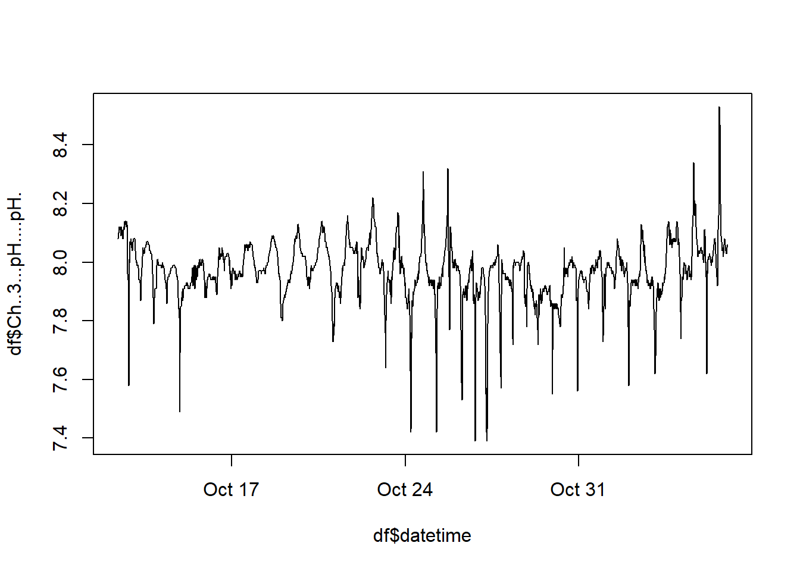
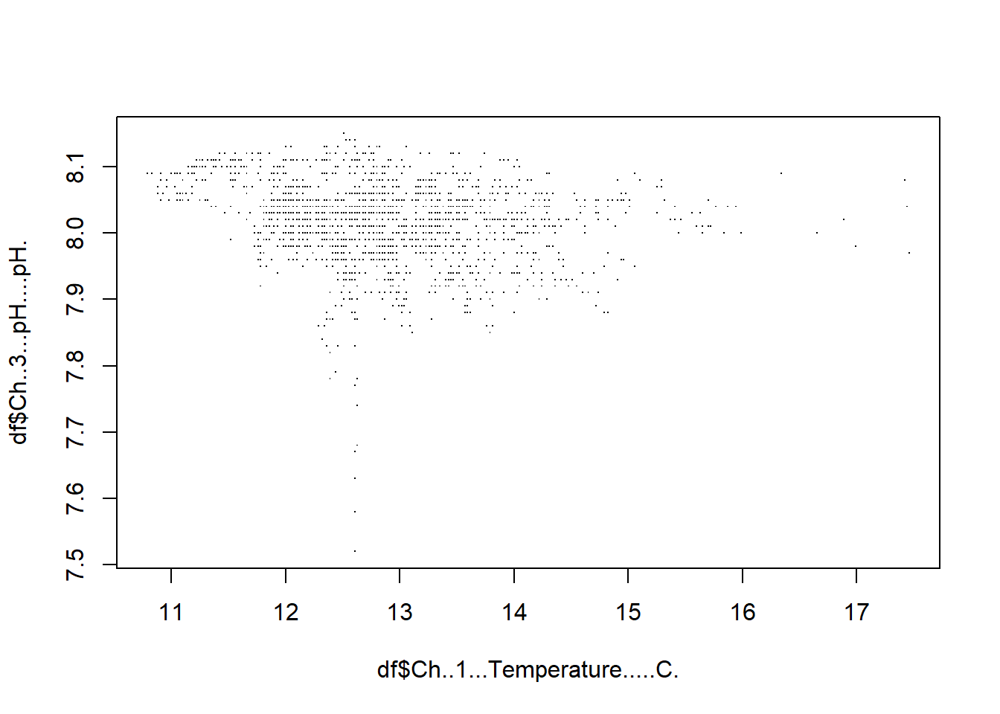
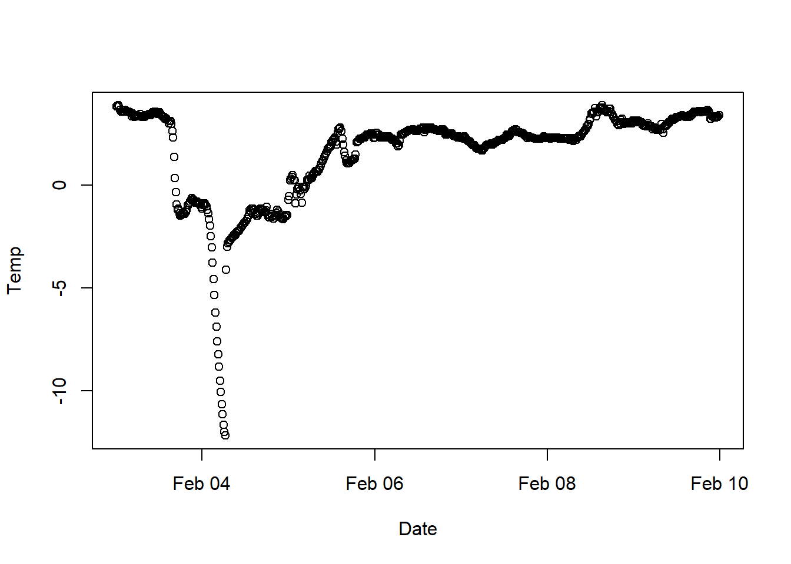
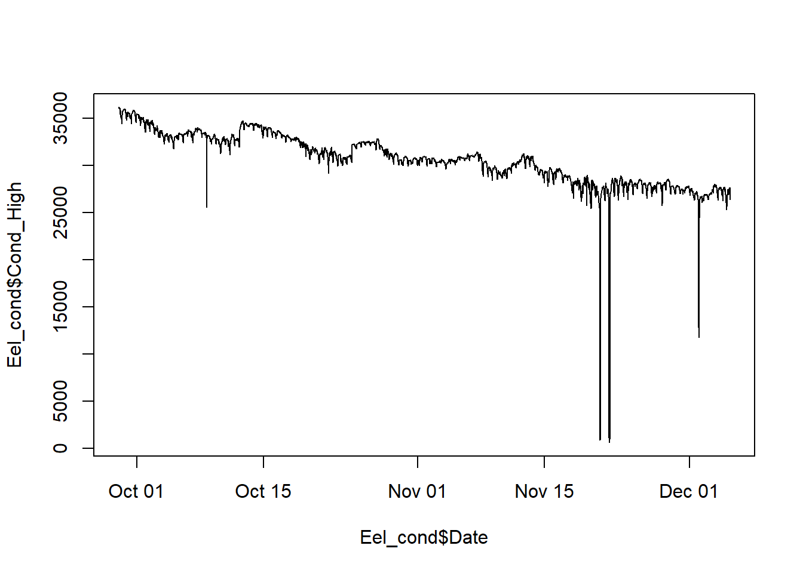
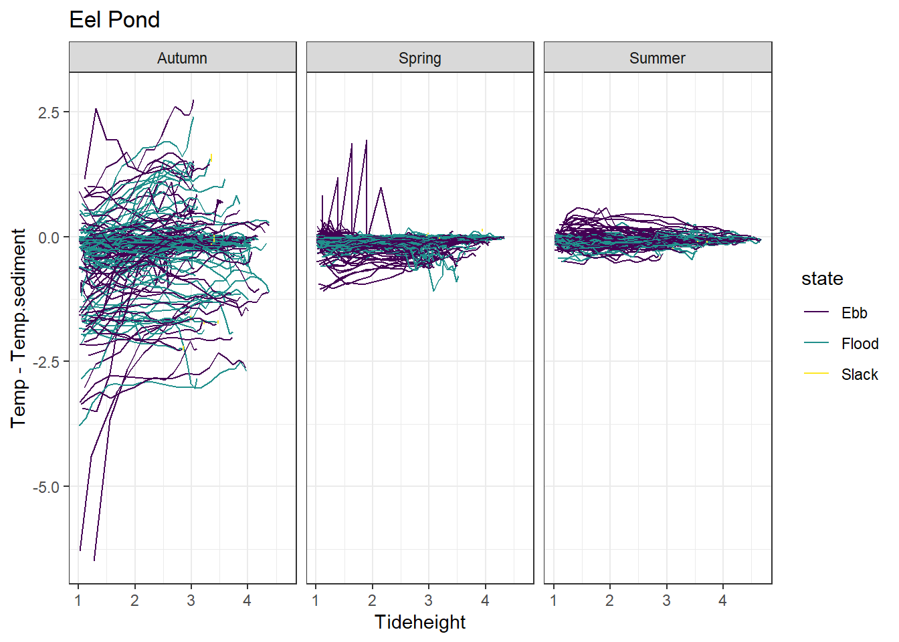

setwd(wdDen)
filenames <- dir()
#filenamespH_HOBO_plots 1.2
Abstract
1.2) My goal is to better organize this so it is not such a long script. Also since updating this there is a bug in plotting some of the YSI data, so I’d like to fix that. Updated HOBO pH unknown offsets to reflect mean offsets for each pH probe using the serial number, rather than mean offsets for all HOBO pH’s. 3.15.24 1.1) Trim individual files to time deployed and retrieved, then compile and visualize the data. Also compare HOBO pH data to sediment temp data, YSI data, and HOBO conductivity data. A note about HOBO EST vs. EDT. It seems that this switch happens when these get calibrated, not actually during the time change. This means that GMT should be estimated separately from each file. I could not find this in the manual and want to call the company to confirm.-3.17.24
Set up workspace
Dennis
setwd(wdDen)
# Late June to early Aug
#(open_file <- filenames[1]) # "1230_East_Dennis 2022-08-05 16_12_44 EDT (Data EDT).csv"
open_file <- "1230_East_Dennis 2022-08-05 16_12_44 EDT (Data EDT).csv"
#Also works: (open_file <- filenames[2]) # "1230_East_Dennis 2022-09-21 09_29_48 EDT (Data EDT).csv"
df <- read.csv(open_file, stringsAsFactors = F)
df <- df[,c(1:5)]
names(df) <- c("n","Date.Time..EDT.", "Ch..1...Temperature.....C..","mV","Ch..3...pH....pH." )
df$datetime <- as.POSIXct(strptime(df$Date.Time..EDT., format = "%m/%d/%Y %H:%M:%S"))
plot(df$datetime, df$Ch..3...pH....pH.)
df <- df[df$datetime<"2022-08-04 00:08:00 EDT",]
plot(df$datetime, df$Ch..3...pH....pH., type = "l")plot(df$datetime, df$Ch..1...Temperature.....C.., type = "l")plot(df$Ch..1...Temperature.....C.., df$Ch..3...pH....pH., pch = '.')#Metadata
SN <- 230
tris <- 8.34
tris_temp <- 24.05
data_combined_new <- 0
data_combined_new <- data.frame(
Site = rep("Den",times = nrow(df)),
Date = df$datetime,
Temp = df$Ch..1...Temperature.....C..,
pH = df$Ch..3...pH....pH.,
Tris = rep(tris,length(df$datetime)),
Tris_temp = rep(tris_temp,length(df$datetime)),
Serial_number = rep(SN,length(df$datetime))
)
data_combined <- rbind(data_combined_new)# setwd(wdDen)
# # Late June to early Aug
# #(open_file <- filenames[1]) # "1230_East_Dennis 2022-08-05 16_12_44 EDT (Data EDT).csv"
# open_file <- "1230_East_Dennis 2022-08-05 16_12_44 EDT (Data EDT).csv"
# #Also works: (open_file <- filenames[2]) # "1230_East_Dennis 2022-09-21 09_29_48 EDT (Data EDT).csv"
# df <- read.csv(open_file, stringsAsFactors = F)
# df$datetime <- as.POSIXct(strptime(df$Date.Time..EDT., format = "%m/%d/%Y %H:%M:%S"))
# plot(df$datetime, df$Ch..3...pH....pH.)
# df <- df[df$datetime<"2022-08-04 00:00:00 EDT",]
# plot(df$datetime, df$Ch..3...pH....pH., type = "l")
# plot(df$datetime, df$Ch..1...Temperature.....C.., type = "l")
# plot(df$Ch..1...Temperature.....C.., df$Ch..3...pH....pH., pch = '.')
#
# #Metadata
# SN <- 230
# tris <- 8.34
# tris_temp <- 24.05
#
# data_combined_new <- data.frame(
# Site = rep("Den",times = nrow(df)),
# Date = df$datetime,
# Temp = df$Ch..1...Temperature.....C..,
# pH = df$Ch..3...pH....pH.,
# Tris = rep(tris,length(df$datetime)),
# Tris_temp = rep(tris_temp,length(df$datetime)),
# Serial_number = rep(SN,length(df$datetime))
# )
#
#
# data_combined <- rbind(data_combined_new)setwd(wdDen)
# Aug to mid September
#"Den_077 2022-09-14 14_08_26 EDT (Data EDT).csv"
#"Den_077 2022-09-21 09_28_37 EDT (Data EDT)(1).csv" is the same file read out later on
#(open_file <- filenames[3])
open_file <- "Den_077 2022-09-14 14_08_26 EDT (Data EDT).csv"
df <- read.csv(open_file, stringsAsFactors = F)
df <- df[,c(1:5)]
#head(df)
names(df) <- c("n","Date.Time..EDT.", "Ch..1...Temperature.....C..","mV","Ch..3...pH....pH." )
df$datetime <- as.POSIXct(strptime(df$Date.Time..EDT., format = "%m/%d/%Y %H:%M:%S"))
plot(df$datetime, df$Ch..3...pH....pH.)
df <- df[df$datetime>"2022-08-05 00:00:00 EDT",]
df <- df[df$datetime<"2022-09-13 00:00:00 EDT",]
plot(df$datetime, df$Ch..3...pH....pH., type = "l")plot(df$datetime, df$Ch..1...Temperature.....C.., type = "l")plot(df$Ch..1...Temperature.....C.., df$Ch..3...pH....pH., pch = '.')
#Metadata
SN <- 077
tris <- 8.16
tris_temp <- 23.98
data_combined_new <- data.frame(
Site = rep("Den",times = nrow(df)),
Date = df$datetime,
Temp = df$Ch..1...Temperature.....C..,
pH = df$Ch..3...pH....pH.,
Tris = rep(tris,length(df$datetime)),
Tris_temp = rep(tris_temp,length(df$datetime)),
Serial_number = rep(SN,length(df$datetime))
)
data_combined <- rbind(data_combined,data_combined_new)
#head(data_combined_new)
#tail(data_combined_new)Ptown
setwd(wdPtown)
filenames <- dir()
filenames [1] "20573560_Ptown 2022-06-15 18_08_38 EDT (Data EDT).csv"
[2] "20573560_Ptown 2022-06-15 18_08_38 EDT (Data EDT).csv.orig"
[3] "20573560_Ptown 2022-08-05 17_08_58 EDT (Data EDT).csv"
[4] "20573560_Ptown 2022-08-05 17_08_58 EDT (Data EDT).csv.orig"
[5] "20573560_Ptown 2022-09-29 17_27_52 EDT (Data EDT).csv"
[6] "20573560_Ptown 2022-09-29 17_27_52 EDT (Data EDT).csv.orig"
[7] "20573560_Ptown 2022-11-02 15_02_10 EDT (Data EDT).csv"
[8] "20573560_Ptown 2023-05-10 14_13_07 EDT (Data EDT).csv"
[9] "20573560_Ptown 2023-05-10 14_13_07 EDT (Data EDT).csv.orig"
[10] "21333340_Eel_Pond 2022-11-07 15_11_16 EST (Data EST)_actuallyPtown.csv"
[11] "21333340_Eel_Pond 2022-11-07 15_11_16 EST (Data EST)_actuallyPtown.csv.orig"
[12] "340_Ptown 2023-06-11 14_35_41 EDT (Data EDT)(1).csv"
[13] "Ptown 2022-05-17 14_31_47 EDT (Data EDT) 2.csv"
[14] "Ptown 2022-05-17 14_31_47 EDT (Data EDT) 2.csv.orig"
[15] "Ptown 2022-05-17 14_31_47 EDT (Data EDT).csv"
[16] "Ptown 2022-05-17 14_31_47 EDT (Data EDT).csv.orig"
[17] "Ptown 2022-06-27 15_06_47 EDT (Data EDT).csv"
[18] "Ptown 2022-06-27 15_06_47 EDT (Data EDT).csv.orig"
[19] "Ptown_075 2022-08-29 21_52_54 EDT (Data EDT).csv"
[20] "Ptown_075 2022-08-29 21_52_54 EDT (Data EDT).csv.orig"
[21] "Ptown_076 2022-12-05 21_20_00 EST (Data EST).csv"
[22] "Ptown_076 2022-12-05 21_20_00 EST (Data EST).csv.orig"
[23] "Ptown_20573560_Ptown 2022-09-29 17_27_52 EDT (Data EDT).csv"
[24] "Ptown_20573560_Ptown 2022-09-29 17_27_52 EDT (Data EDT).csv.orig" setwd(wdPtown)
# mid June to August
open_file <- "20573560_Ptown 2022-08-05 17_08_58 EDT (Data EDT).csv"
df <- read.csv(open_file, stringsAsFactors = F)
#head(df)
df <- df[,c(1:5)]
#head(df)
names(df) <- c("n","Date.Time..EDT.", "Ch..1...Temperature.....C..","mV","Ch..3...pH....pH." )
df$datetime <- as.POSIXct(strptime(df$Date.Time..EDT., format = "%m/%d/%Y %H:%M:%S"))
plot(df$datetime, df$Ch..3...pH....pH.)df <- df[df$datetime<"2022-08-03 00:08:00 EDT",]
plot(df$datetime, df$Ch..3...pH....pH., type = "l")plot(df$datetime, df$Ch..1...Temperature.....C.., type = "l")plot(df$Ch..1...Temperature.....C.., df$Ch..3...pH....pH., pch = '.')#Metadata
SN <- 560
tris <- 8.17
tris_temp <- 24.15
data_combined_new <- data.frame(
Site = rep("Ptown",times = nrow(df)),
Date = df$datetime,
Temp = df$Ch..1...Temperature.....C..,
pH = df$Ch..3...pH....pH.,
Tris = rep(tris,length(df$datetime)),
Tris_temp = rep(tris_temp,length(df$datetime)),
Serial_number = rep(SN,length(df$datetime))
)
data_combined <- rbind(data_combined,data_combined_new)setwd(wdPtown)
# August
(open_file <- filenames[6])[1] "20573560_Ptown 2022-09-29 17_27_52 EDT (Data EDT).csv.orig"open_file <- "Ptown_075 2022-08-29 21_52_54 EDT (Data EDT).csv"
df <- read.csv(open_file, stringsAsFactors = F)
df <- df[,c(1:5)]
#head(df)
names(df) <- c("n","Date.Time..EDT.", "Ch..1...Temperature.....C..","mV",
"Ch..3...pH....pH." )
#head(df)
#tail(df)
df$datetime <- as.POSIXct(strptime(df$Date.Time..EDT., format = "%m/%d/%Y %H:%M:%S"))
plot(df$datetime, df$Ch..3...pH....pH.)df <- df[df$datetime>"2022-08-04 00:00:00 EDT",]
df <- df[df$datetime<"2022-08-29 00:00:00 EDT",]
#plot(df$datetime, df$Ch..3...pH....pH., type = "l")
#plot(df$datetime, df$Ch..1...Temperature.....C.., type = "l")
#plot(df$Ch..1...Temperature.....C.., df$Ch..3...pH....pH., pch = '.')
#Metadata
SN <- 075
tris <- 8.14
tris_temp <- 25.11
data_combined_new <- data.frame(
Site = rep("Ptown",times = nrow(df)),
Date = df$datetime,
Temp = df$Ch..1...Temperature.....C..,
pH = df$Ch..3...pH....pH.,
Tris = rep(tris,length(df$datetime)),
Tris_temp = rep(tris_temp,length(df$datetime)),
Serial_number = rep(SN,length(df$datetime))
)
data_combined <- rbind(data_combined,data_combined_new)SN560 8/28/22
Tris 8.20pH, 24.73C
setwd(wdPtown)
# September
# Also is here: "20573560_Ptown 2022-11-02 15_02_10 EDT (Data EDT).csv"
open_file <- "Ptown_20573560_Ptown 2022-09-29 17_27_52 EDT (Data EDT).csv"
df <- read.csv(open_file, stringsAsFactors = F)
df <- df[,c(1:5)]
#head(df)
names(df) <- c("n","Date.Time..EDT.", "Ch..1...Temperature.....C..","mV",
"Ch..3...pH....pH." )
#head(df)
#tail(df)
df$datetime <- as.POSIXct(strptime(df$Date.Time..EDT., format = "%m/%d/%Y %H:%M:%S"))
plot(df$datetime, df$Ch..3...pH....pH.)df <- df[df$datetime>"2022-08-30 00:00:00 EDT",]
df <- df[df$datetime<"2022-09-26 00:00:00 EDT",]
plot(df$datetime, df$Ch..3...pH....pH., type = "l")
plot(df$datetime, df$Ch..1...Temperature.....C.., type = "l")
plot(df$Ch..1...Temperature.....C.., df$Ch..3...pH....pH., pch = '.')#Metadata
SN <- 560
tris <- 8.20
tris_temp <- 24.73
data_combined_new <- data.frame(
Site = rep("Ptown",times = nrow(df)),
Date = df$datetime,
Temp = df$Ch..1...Temperature.....C..,
pH = df$Ch..3...pH....pH.,
Tris = rep(tris,length(df$datetime)),
Tris_temp = rep(tris_temp,length(df$datetime)),
Serial_number = rep(SN,length(df$datetime))
)
data_combined <- rbind(data_combined,data_combined_new)setwd(wdPtown)
# early October
# This sensor seems to be deployed at Eel pond originally, recalibrated without a change in the name,
# and then moved to Ptown. The segment at Ptown starts late in the day on 9/27/22
filenames [1] "20573560_Ptown 2022-06-15 18_08_38 EDT (Data EDT).csv"
[2] "20573560_Ptown 2022-06-15 18_08_38 EDT (Data EDT).csv.orig"
[3] "20573560_Ptown 2022-08-05 17_08_58 EDT (Data EDT).csv"
[4] "20573560_Ptown 2022-08-05 17_08_58 EDT (Data EDT).csv.orig"
[5] "20573560_Ptown 2022-09-29 17_27_52 EDT (Data EDT).csv"
[6] "20573560_Ptown 2022-09-29 17_27_52 EDT (Data EDT).csv.orig"
[7] "20573560_Ptown 2022-11-02 15_02_10 EDT (Data EDT).csv"
[8] "20573560_Ptown 2023-05-10 14_13_07 EDT (Data EDT).csv"
[9] "20573560_Ptown 2023-05-10 14_13_07 EDT (Data EDT).csv.orig"
[10] "21333340_Eel_Pond 2022-11-07 15_11_16 EST (Data EST)_actuallyPtown.csv"
[11] "21333340_Eel_Pond 2022-11-07 15_11_16 EST (Data EST)_actuallyPtown.csv.orig"
[12] "340_Ptown 2023-06-11 14_35_41 EDT (Data EDT)(1).csv"
[13] "Ptown 2022-05-17 14_31_47 EDT (Data EDT) 2.csv"
[14] "Ptown 2022-05-17 14_31_47 EDT (Data EDT) 2.csv.orig"
[15] "Ptown 2022-05-17 14_31_47 EDT (Data EDT).csv"
[16] "Ptown 2022-05-17 14_31_47 EDT (Data EDT).csv.orig"
[17] "Ptown 2022-06-27 15_06_47 EDT (Data EDT).csv"
[18] "Ptown 2022-06-27 15_06_47 EDT (Data EDT).csv.orig"
[19] "Ptown_075 2022-08-29 21_52_54 EDT (Data EDT).csv"
[20] "Ptown_075 2022-08-29 21_52_54 EDT (Data EDT).csv.orig"
[21] "Ptown_076 2022-12-05 21_20_00 EST (Data EST).csv"
[22] "Ptown_076 2022-12-05 21_20_00 EST (Data EST).csv.orig"
[23] "Ptown_20573560_Ptown 2022-09-29 17_27_52 EDT (Data EDT).csv"
[24] "Ptown_20573560_Ptown 2022-09-29 17_27_52 EDT (Data EDT).csv.orig" open_file <- "21333340_Eel_Pond 2022-11-07 15_11_16 EST (Data EST)_actuallyPtown.csv"
df <- read.csv(open_file, stringsAsFactors = F)
df <- df[,c(1:5)]
#head(df)
names(df) <- c("n","Date.Time..EST.", "Ch..1...Temperature.....C..","mV",
"Ch..3...pH....pH." )
#head(df)
#tail(df,80)
df$datetime <- as.POSIXct(strptime(df$Date.Time..EST., format = "%m/%d/%Y %H:%M:%S")) #Switch to EST????
plot(df$datetime, df$Ch..3...pH....pH.)
# df <- df[df$datetime>"2022-09-25 00:00:00 EDT",]
# df <- df[df$datetime<"2022-09-29 13:00:00 EDT",]
df <- df[df$datetime>"2022-09-28 00:00:00 EDT",]
df <- df[df$datetime<"2022-10-11 12:00:00 EDT",]
#df <- df[df$datetime<"2022-10-12 00:00:00 EDT",]
#df <- df[df$datetime<"2022-11-07 13:00:00 EDT",]
plot(df$datetime, df$Ch..3...pH....pH., type = "l")plot(df$datetime, df$Ch..1...Temperature.....C.., type = "p")plot(df$Ch..1...Temperature.....C.., df$Ch..3...pH....pH., pch = '.')#Metadata
SN <- 340
tris <- NA
tris_temp <- NA
data_combined_new <- data.frame(
Site = rep("Ptown",times = nrow(df)),
Date = df$datetime,
Temp = df$Ch..1...Temperature.....C..,
pH = df$Ch..3...pH....pH.,
Tris = rep(tris,length(df$datetime)),
Tris_temp = rep(tris_temp,length(df$datetime)),
Serial_number = rep(SN,length(df$datetime))
)
data_combined <- rbind(data_combined,data_combined_new)setwd(wdPtown)
# late October
# This sensor seems to be deployed at Eel pond originally, recalibrated without a change in the name,
# and then moved to Ptown. The segment at Ptown starts late in the day on 9/27/22
#filenames
open_file <- "21333340_Eel_Pond 2022-11-07 15_11_16 EST (Data EST)_actuallyPtown.csv"
df <- read.csv(open_file, stringsAsFactors = F)
df <- df[,c(1:5)]
#head(df)
names(df) <- c("n","Date.Time..EST.", "Ch..1...Temperature.....C..","mV",
"Ch..3...pH....pH." )
#head(df)
#tail(df,80)
df$datetime <- as.POSIXct(strptime(df$Date.Time..EST., format = "%m/%d/%Y %H:%M:%S")) #Switch to EST????
plot(df$datetime, df$Ch..3...pH....pH.)#df <- df[df$datetime>"2022-09-28 00:00:00 EDT",]
#df <- df[df$datetime<"2022-10-11 06:00:00 EDT",]
df <- df[df$datetime>"2022-10-12 10:00:00 EDT",]
df <- df[df$datetime<"2022-11-06 00:00:00 EDT",]
plot(df$datetime, df$Ch..3...pH....pH., type = "l")
plot(df$datetime, df$Ch..1...Temperature.....C.., type = "l")plot(df$Ch..1...Temperature.....C.., df$Ch..3...pH....pH., pch = '.')plot(x = tail(df$datetime,200), y = tail(df$Ch..1...Temperature.....C..,200), type = "l")#Metadata
SN <- 340
tris <- NA
tris_temp <- NA
data_combined_new <- data.frame(
Site = rep("Ptown",times = nrow(df)),
Date = df$datetime,
Temp = df$Ch..1...Temperature.....C..,
pH = df$Ch..3...pH....pH.,
Tris = rep(tris,length(df$datetime)),
Tris_temp = rep(tris_temp,length(df$datetime)),
Serial_number = rep(SN,length(df$datetime))
)
data_combined <- rbind(data_combined,data_combined_new)#Moved up from Eel. It seems like this sensor was previously an Eel Pond sensor but was moved up to Ptown on 11/07 and the name was not changed. This conclusion is made because this file matches the Ptown point samples for carbonate chemistry, not the Eel Pond carbonate chemistry samples. There was some confusion in pH sensor handing off between Matt and Molly and not adequate notes on this.
setwd(wdEel)
# November
#(open_file <- filenames[3])
open_file <- "20573560_Ptown 2022-12-05 16_55_15 EST (Data EST)_actuallyEel.csv"
df <- read.csv(open_file, stringsAsFactors = F)
df <- df[,c(1:5)]
#head(df)
names(df) <- c("n","Date.Time..EST.", "Ch..1...Temperature.....C..","mV",
"Ch..3...pH....pH." )
df$datetime <- as.POSIXct(strptime(df$Date.Time..EST., format = "%m/%d/%Y %H:%M:%S")) #Change to EST
plot(df$datetime, df$Ch..3...pH....pH.)
df <- df[df$datetime>"2022-11-07 00:00:00 EDT",]
df <- df[df$datetime<"2022-12-05 00:00:00 EDT",]
plot(df$datetime, df$Ch..3...pH....pH., type = "l")plot(df$datetime, df$Ch..1...Temperature.....C.., type = "l")plot(df$Ch..1...Temperature.....C.., df$Ch..3...pH....pH., pch = '.')
plot(x = head(df$datetime,200), y = head(df$Ch..1...Temperature.....C..,200), type = "l")#Metadata
SN <- 560
tris <- 8.30
tris_temp <- 22.37
data_combined_new <- data.frame(
Site = rep("Ptown",times = nrow(df)),
Date = df$datetime,
Temp = df$Ch..1...Temperature.....C..,
pH = df$Ch..3...pH....pH.,
Tris = rep(tris,length(df$datetime)),
Tris_temp = rep(tris_temp,length(df$datetime)),
Serial_number = rep(SN,length(df$datetime))
)
data_combined <- rbind(data_combined,data_combined_new)setwd(wdPtown)
# skip to April to avoid freezing temps
open_file <- "20573560_Ptown 2023-05-10 14_13_07 EDT (Data EDT).csv"
df <- read.csv(open_file, stringsAsFactors = F)
df <- df[,c(1:5)]
head(df) X. Date.Time..EDT. Ch..1...Temperature.....C. Ch..2...Millivolts....mv.
1 1 4/17/23 12:00 21.17 96.46
2 2 4/17/23 12:15 21.84 96.67
3 3 4/17/23 12:30 22.13 96.92
4 4 4/17/23 12:45 22.20 97.14
5 5 4/17/23 13:00 22.30 97.21
6 6 4/17/23 13:15 22.35 97.28
Ch..3...pH....pH.
1 4.82
2 4.82
3 4.82
4 4.82
5 4.82
6 4.82names(df) <- c("n","Date.Time..EDT.", "Ch..1...Temperature.....C.","mV",
"Ch..3...pH....pH." )
#head(df)
#tail(df,80)
df$datetime <- as.POSIXct(strptime(df$Date.Time..EDT., format = "%m/%d/%y %H:%M")) #Switch to EDT from EST?
plot(df$datetime, df$Ch..3...pH....pH.)df <- df[df$datetime>"2023-04-18 15:15:15",]
df <- df[df$datetime<"2023-05-10 09:00:00",]
plot(df$datetime, df$Ch..3...pH....pH., type = "l")plot(df$datetime, df$Ch..1...Temperature.....C., type = "l")length(df$Ch..1...Temperature.....C.)[1] 2086plot(df$Ch..1...Temperature.....C., df$Ch..3...pH....pH., pch = '.')#Metadata
SN <- 560
tris <- 8.298 #Updated 12/23/23
tris_temp <- 21.4 #Updated 12/23/23
data_combined_new <- data.frame(
Site = rep("Ptown",times = length(df$datetime)),
Date = df$datetime,
Temp = df$Ch..1...Temperature.....C.,
pH = df$Ch..3...pH....pH.,
Tris = rep(tris,length(df$datetime)),
Tris_temp = rep(tris_temp,times = length(df$datetime)),
Serial_number = rep(SN,times = length(df$datetime))
)
data_combined <- rbind(data_combined,data_combined_new)setwd(wdPtown)
# skip to April to avoid freezing temps
open_file <- "340_Ptown 2023-06-11 14_35_41 EDT (Data EDT)(1).csv"
df <- read.csv(open_file, stringsAsFactors = F)
df <- df[,c(1:5)]
#head(df)
names(df) <- c("n","Date.Time..EDT.", "Ch..1...Temperature.....C.","mV",
"Ch.3...pH....pH." )
#head(df)
#tail(df,80)
df$datetime <- as.POSIXct(strptime(df$Date.Time..EDT., format = "%m/%d/%Y %H:%M")) #Switch to EDT from EST?
plot(df$datetime, df$Ch.3...pH....pH.)df <- df[df$datetime>"2023-05-10 09:45:00",]
df <- df[df$datetime<"2023-06-11 11:45:00",]
plot(df$datetime, df$Ch.3...pH....pH., type = "l")plot(df$datetime, df$Ch..1...Temperature.....C., type = "l")length(df$Ch..1...Temperature.....C.)[1] 3079plot(df$Ch..1...Temperature.....C., df$Ch.3...pH....pH., pch = '.')#Metadata
SN <- 340
tris <- 8.19
tris_temp <- 21.3
data_combined_new <- data.frame(
Site = rep("Ptown",times = nrow(df)),
Date = df$datetime,
Temp = df$Ch..1...Temperature.....C.,
pH = df$Ch.3...pH....pH.,
Tris = rep(tris,length(df$datetime)),
Tris_temp = rep(tris_temp,length(df$datetime)),
Serial_number = rep(SN,length(df$datetime))
)
data_combined <- rbind(data_combined,data_combined_new)Eel Pond
setwd(wdEel)
filenames <- dir()
filenames [1] "20573560_Ptown 2022-12-05 16_55_15 EST (Data EST)_actuallyEel.csv"
[2] "20573560_Ptown 2022-12-05 16_55_15 EST (Data EST)_actuallyEel.csv.orig"
[3] "21333340_Eel_Pond 2022-06-13 08_27_36 EDT (Data EDT).csv"
[4] "21333340_Eel_Pond 2022-06-13 08_27_36 EDT (Data EDT).csv.orig"
[5] "21333340_Eel_Pond 2022-08-05 17_43_02 EDT (Data EDT).csv"
[6] "21333340_Eel_Pond 2022-08-05 17_43_02 EDT (Data EDT).csv.orig"
[7] "21333340_Eel_Pond 2022-09-11 18_27_18 EDT (Data EDT).csv"
[8] "21333340_Eel_Pond 2022-09-11 18_27_18 EDT (Data EDT).csv.orig"
[9] "21333340_Eel_Pond 2022-11-07 15_11_16 EST (Data EST)_actuallyPtown.csv"
[10] "21333340_Eel_Pond 2022-11-07 15_11_16 EST (Data EST)_actuallyPtown.csv.orig"
[11] "21333340_Eel_Pond 2023-04-14 15_22_46 EDT (Data EDT)(1).csv"
[12] "21333340_Eel_Pond 2023-05-08 09_10_54 EDT (Data EDT).csv"
[13] "21333340_Eel_Pond 2023-05-08 09_10_54 EDT (Data EDT).csv.orig"
[14] "Eel_076 2022-09-27 13_35_57 EDT (Data EDT).csv"
[15] "Eel_076 2022-09-27 13_35_57 EDT (Data EDT).csv.orig"
[16] "Eel_076 2022-11-07 09_15_44 EST (Data EST).xlsx"
[17] "Eel_076 2022-11-07 09_15_44 EST (Data EST).xlsx.orig"
[18] "Eel_076 2022-11-07 15_16_01 EST (Data EST)(1).csv"
[19] "Eel_076 2022-11-07 15_16_01 EST (Data EST)(1).csv.orig"
[20] "Eel_076 2023-06-11 14_39_04 EDT (Data EDT).csv" setwd(wdEel)
#mid June to Aug
#(open_file <- filenames[2])
(open_file <- "21333340_Eel_Pond 2022-08-05 17_43_02 EDT (Data EDT).csv")[1] "21333340_Eel_Pond 2022-08-05 17_43_02 EDT (Data EDT).csv"df <- read.csv(open_file, stringsAsFactors = F)
df <- df[,c(1:5)]
#head(df)
names(df) <- c("n","Date.Time..EDT.", "Ch..1...Temperature.....C..","mV",
"Ch..3...pH....pH." )
df$datetime <- as.POSIXct(strptime(df$Date.Time..EDT., format = "%m/%d/%Y %H:%M:%S"))
plot(df$datetime, df$Ch..3...pH....pH.)
df <- df[df$datetime<"2022-08-01 00:09:00 EDT",]
df <- df[df$datetime>"2022-06-17 00:00:00 EDT",]
plot(df$datetime, df$Ch..3...pH....pH., type = "l")plot(df$datetime, df$Ch..1...Temperature.....C.., type = "l")plot(df$Ch..1...Temperature.....C.., df$Ch..3...pH....pH., pch = '.')#Metadata
SN <- 340
tris <- 8.14
tris_temp <- 24.73
data_combined_new <- data.frame(
Site = rep("Eel",times = nrow(df)),
Date = df$datetime,
Temp = df$Ch..1...Temperature.....C..,
pH = df$Ch..3...pH....pH.,
Tris = rep(tris,length(df$datetime)),
Tris_temp = rep(tris_temp,length(df$datetime)),
Serial_number = rep(SN,length(df$datetime))
)
data_combined <- rbind(data_combined,data_combined_new)
# Aug to lateAug is on logger that is still logging in Eel Pond and
# needs to be retrieved.
# There was an issue with the tool when swapping them outsetwd(wdEel)
#Aug to lateAug
(open_file <- filenames[4])[1] "21333340_Eel_Pond 2022-06-13 08_27_36 EDT (Data EDT).csv.orig"(open_file <- "Eel_076 2022-09-27 13_35_57 EDT (Data EDT).csv")[1] "Eel_076 2022-09-27 13_35_57 EDT (Data EDT).csv"df <- read.csv(open_file, stringsAsFactors = F)
df <- df[,c(1:5)]
#head(df)
names(df) <- c("n","Date.Time..EDT.", "Ch..1...Temperature.....C..","mV",
"Ch..3...pH....pH." )
df$datetime <- as.POSIXct(strptime(df$Date.Time..EDT., format = "%m/%d/%Y %H:%M:%S"))
plot(df$datetime, df$Ch..3...pH....pH.)
df <- df[df$datetime<"2022-08-30 00:00:00 EDT",]
df <- df[df$datetime>"2022-08-02 00:00:00 EDT",]
plot(df$datetime, df$Ch..3...pH....pH., type = "l")plot(df$datetime, df$Ch..1...Temperature.....C.., type = "l")
plot(df$Ch..1...Temperature.....C.., df$Ch..3...pH....pH., pch = '.')#Metadata
SN <- 076
tris <- 8.15
tris_temp <- 24.85
data_combined_new <- data.frame(
Site = rep("Eel",times = nrow(df)),
Date = df$datetime,
Temp = df$Ch..1...Temperature.....C..,
pH = df$Ch..3...pH....pH.,
Tris = rep(tris,length(df$datetime)),
Tris_temp = rep(tris_temp,length(df$datetime)),
Serial_number = rep(SN,length(df$datetime))
)
data_combined <- rbind(data_combined,data_combined_new)
# Aug to lateAug is on logger that is still logging in Eel Pond and
# needs to be retrieved.
# There was an issue with the tool when swapping them out
# # lateAug to mid Sep (was still logging and deployed -
# # but lost ~14 days of data due to calibrating before downloading data)
# (open_file <- filenames[3])
# open_file <- "21333340_Eel_Pond 2022-09-11 18_27_18 EDT (Data EDT).csv"
#
# df <- read.csv(open_file, stringsAsFactors = F)
# df$datetime <- as.POSIXct(strptime(df$Date.Time..EDT., format = "%m/%d/%Y %H:%M:%S"))
# plot(df$datetime, df$Ch..3...pH....pH.)
# df <- df[df$datetime>"2022-08-31 00:00:00 EDT",]
# df <- df[df$datetime<"2022-09-11 00:00:00 EDT",]
# plot(df$datetime, df$Ch..3...pH....pH., type = "l")
# plot(df$datetime, df$Ch..1...Temperature.....C.., type = "l")
# plot(df$Ch..1...Temperature.....C.., df$Ch..3...pH....pH., pch = '.')
#
# data_combined_new <- data.frame(
# Site = rep("Eel",times = nrow(df)),
# Date = df$datetime,
# Temp = df$Ch..1...Temperature.....C..,
# pH = df$Ch..3...pH....pH.
# )
#
#
# data_combined <- rbind(data_combined,data_combined_new)setwd(wdEel)
# #October???
# #October is not clear.
# #If the other legger was still logging and deployed at this site
# (open_file <- filenames[3])
# open_file <- "Eel_076 2022-11-07 15_16_01 EST (Data EST)(1).csv"
# head(df, 20)
# df <- read.csv(open_file, stringsAsFactors = F)
# df$datetime <- as.POSIXct(strptime(df$Date.Time..EST., format = "%m/%d/%Y %H:%M:%S")) #Change to EST
# plot(df$datetime, df$Ch..3...pH....pH.)
# df <- df[df$datetime>"2022-09-25 00:00:00 EDT",]
# # df <- df[df$datetime<"2022-09-30 00:00:00 EDT",]
#
# #df <- df[df$datetime<"2022-08-31 00:00:00 EDT",]
# #df <- df[df$datetime>"2022-08-26 00:00:00 EDT",]
# plot(df$datetime, df$Ch..3...pH....pH., type = "l")
# plot(df$datetime, df$Ch..1...Temperature.....C.., type = "p")
# plot(df$Ch..1...Temperature.....C.., df$Ch..3...pH....pH., pch = '.')
#
# data_combined_new <- data.frame(
# Site = rep("Eel",times = nrow(df)),
# Date = df$datetime,
# Temp = df$Ch..1...Temperature.....C..,
# pH = df$Ch..3...pH....pH.
# )
#
#
# data_combined <- rbind(data_combined,data_combined_new)
# October
# This sensor seems to be deployed at Eel pond originally, recalibrated without a change in the name,
# and then moved to Ptown. The segment at Eel Pond ends on Monday 9/26/22.
# It was deployed on 8/31/22. Which is a day we were at Eel Pond
filenames [1] "20573560_Ptown 2022-12-05 16_55_15 EST (Data EST)_actuallyEel.csv"
[2] "20573560_Ptown 2022-12-05 16_55_15 EST (Data EST)_actuallyEel.csv.orig"
[3] "21333340_Eel_Pond 2022-06-13 08_27_36 EDT (Data EDT).csv"
[4] "21333340_Eel_Pond 2022-06-13 08_27_36 EDT (Data EDT).csv.orig"
[5] "21333340_Eel_Pond 2022-08-05 17_43_02 EDT (Data EDT).csv"
[6] "21333340_Eel_Pond 2022-08-05 17_43_02 EDT (Data EDT).csv.orig"
[7] "21333340_Eel_Pond 2022-09-11 18_27_18 EDT (Data EDT).csv"
[8] "21333340_Eel_Pond 2022-09-11 18_27_18 EDT (Data EDT).csv.orig"
[9] "21333340_Eel_Pond 2022-11-07 15_11_16 EST (Data EST)_actuallyPtown.csv"
[10] "21333340_Eel_Pond 2022-11-07 15_11_16 EST (Data EST)_actuallyPtown.csv.orig"
[11] "21333340_Eel_Pond 2023-04-14 15_22_46 EDT (Data EDT)(1).csv"
[12] "21333340_Eel_Pond 2023-05-08 09_10_54 EDT (Data EDT).csv"
[13] "21333340_Eel_Pond 2023-05-08 09_10_54 EDT (Data EDT).csv.orig"
[14] "Eel_076 2022-09-27 13_35_57 EDT (Data EDT).csv"
[15] "Eel_076 2022-09-27 13_35_57 EDT (Data EDT).csv.orig"
[16] "Eel_076 2022-11-07 09_15_44 EST (Data EST).xlsx"
[17] "Eel_076 2022-11-07 09_15_44 EST (Data EST).xlsx.orig"
[18] "Eel_076 2022-11-07 15_16_01 EST (Data EST)(1).csv"
[19] "Eel_076 2022-11-07 15_16_01 EST (Data EST)(1).csv.orig"
[20] "Eel_076 2023-06-11 14_39_04 EDT (Data EDT).csv" open_file <- "21333340_Eel_Pond 2022-11-07 15_11_16 EST (Data EST)_actuallyPtown.csv"
df <- read.csv(open_file, stringsAsFactors = F)
df <- df[,c(1:5)]
#head(df)
names(df) <- c("n","Date.Time..EST.", "Ch..1...Temperature.....C..","mV",
"Ch..3...pH....pH." )
df$datetime <- as.POSIXct(strptime(df$Date.Time..EST., format = "%m/%d/%Y %H:%M:%S")) #Switch to EST?
plot(df$datetime, df$Ch..3...pH....pH.)
# df <- df[df$datetime>"2022-09-25 00:00:00 EDT",]
# df <- df[df$datetime<"2022-09-29 13:00:00 EDT",]
df <- df[df$datetime>"2022-08-31 00:00:00 EDT",]
df <- df[df$datetime<"2022-09-26 07:00:00 EDT",] #Was previously set to 1PM cutoff, but changed to 7AM cutoff. Must have removed pH logger in the morning, not the evening sampling according to the difference between the temp of the pH logger and sediment temperature. -ER 4/1/24
plot(df$datetime, df$Ch..3...pH....pH., type = "l")plot(df$datetime, df$Ch..1...Temperature.....C.., type = "p")plot(df$Ch..1...Temperature.....C.., df$Ch..3...pH....pH., pch = '.')#Metadata
SN <- 340
tris <- 8.18
tris_temp <- 24.73
data_combined_new <- data.frame(
Site = rep("Eel",times = nrow(df)),
Date = df$datetime,
Temp = df$Ch..1...Temperature.....C..,
pH = df$Ch..3...pH....pH.,
Tris = rep(tris,length(df$datetime)),
Tris_temp = rep(tris_temp,length(df$datetime)),
Serial_number = rep(SN,length(df$datetime))
)
data_combined <- rbind(data_combined,data_combined_new)setwd(wdEel)
# Early October
#(open_file <- filenames[3])
open_file <- "Eel_076 2022-11-07 15_16_01 EST (Data EST)(1).csv"
#head(df, 20)
df <- read.csv(open_file, stringsAsFactors = F)
df <- df[,c(1:5)]
head(df) X. Date.Time..EST.EDT. Ch..1...Temperature.....C.. Ch..2...Millivolts....mv.
1 1 08/01/2022 06:00:00 24.53 181.61
2 2 08/01/2022 06:15:00 24.39 181.61
3 3 08/01/2022 06:30:00 23.30 181.57
4 4 08/01/2022 06:45:00 22.51 181.33
5 5 08/01/2022 07:00:00 21.94 181.11
6 6 08/01/2022 07:15:00 22.15 180.91
Ch..3...pH....pH.
1 3.62
2 3.62
3 3.61
4 3.60
5 3.60
6 3.60names(df) <- c("n","Date.Time..EST.", "Ch..1...Temperature.....C..","mV",
"Ch..3...pH....pH." )
df$datetime <- as.POSIXct(strptime(df$Date.Time..EST., format = "%m/%d/%Y %H:%M:%S")) #Change to EST
plot(df$datetime, df$Ch..3...pH....pH.)df <- df[df$datetime>"2022-09-29 00:00:00 EDT",]
df <- df[df$datetime<"2022-10-24 00:00:00 EDT",]
#df <- df[df$datetime<"2022-11-06 00:00:00 EDT",]
plot(df$datetime, df$Ch..3...pH....pH., type = "l")plot(df$datetime, df$Ch..1...Temperature.....C.., type = "l")plot(df$Ch..1...Temperature.....C.., df$Ch..3...pH....pH., pch = '.')#Metadata
SN <- 076
tris <- NA
tris_temp <- NA
data_combined_new <- data.frame(
Site = rep("Eel",times = nrow(df)),
Date = df$datetime,
Temp = df$Ch..1...Temperature.....C..,
pH = df$Ch..3...pH....pH.,
Tris = rep(tris,length(df$datetime)),
Tris_temp = rep(tris_temp,length(df$datetime)),
Serial_number = rep(SN,length(df$datetime))
)
data_combined <- rbind(data_combined,data_combined_new)setwd(wdEel)
# late October
#(open_file <- filenames[3])
open_file <- "Eel_076 2022-11-07 15_16_01 EST (Data EST)(1).csv"
#head(df, 20)
df <- read.csv(open_file, stringsAsFactors = F)
df <- df[,c(1:5)]
head(df) X. Date.Time..EST.EDT. Ch..1...Temperature.....C.. Ch..2...Millivolts....mv.
1 1 08/01/2022 06:00:00 24.53 181.61
2 2 08/01/2022 06:15:00 24.39 181.61
3 3 08/01/2022 06:30:00 23.30 181.57
4 4 08/01/2022 06:45:00 22.51 181.33
5 5 08/01/2022 07:00:00 21.94 181.11
6 6 08/01/2022 07:15:00 22.15 180.91
Ch..3...pH....pH.
1 3.62
2 3.62
3 3.61
4 3.60
5 3.60
6 3.60names(df) <- c("n","Date.Time..EST.", "Ch..1...Temperature.....C..","mV",
"Ch..3...pH....pH." )
df$datetime <- as.POSIXct(strptime(df$Date.Time..EST., format = "%m/%d/%Y %H:%M:%S")) #Change to EST
plot(df$datetime, df$Ch..3...pH....pH.)
#df <- df[df$datetime>"2022-09-29 00:00:00 EDT",]
df <- df[df$datetime>"2022-10-25 00:00:00 EDT",]
df <- df[df$datetime<"2022-11-06 00:00:00 EDT",]
plot(df$datetime, df$Ch..3...pH....pH., type = "l")plot(df$datetime, df$Ch..1...Temperature.....C.., type = "l")plot(df$Ch..1...Temperature.....C.., df$Ch..3...pH....pH., pch = '.')#Metadata
SN <- 076
tris <- 8.38
tris_temp <- 16.13
data_combined_new <- data.frame(
Site = rep("Eel",times = nrow(df)),
Date = df$datetime,
Temp = df$Ch..1...Temperature.....C..,
pH = df$Ch..3...pH....pH.,
Tris = rep(tris,length(df$datetime)),
Tris_temp = rep(tris_temp,length(df$datetime)),
Serial_number = rep(SN,length(df$datetime))
)
data_combined <- rbind(data_combined,data_combined_new)setwd(wdPtown)
# November
# This last file seems a bit out of place. However, I can confirm that this is Provincetown because it was collected on 12/4 not 12/5.It is deployed by 11/7/23 15:30, which is later than our Ptown date, because I did a one day trip where I met Matt to pick up the sensor and deployed it. It would have previously been deployed in Eel Pond.
#I need to revisit this because the way I explained it above, the pH's don't match with the point carbonate chemistry samples.I'm moving it down to Eel Pond.
open_file <- "Ptown_076 2022-12-05 21_20_00 EST (Data EST).csv"
df <- read.csv(open_file, stringsAsFactors = F)
df <- df[,c(1:5)]
#head(df)
names(df) <- c("n","Date.Time..EST.", "Ch..1...Temperature.....C..","mV",
"Ch..3...pH....pH." )
head(df) n Date.Time..EST. Ch..1...Temperature.....C.. mV Ch..3...pH....pH.
1 1 11/07/2022 15:30:00 17.22 -74.78 8.23
2 2 11/07/2022 15:45:00 16.80 -80.85 8.34
3 3 11/07/2022 16:00:00 16.51 -83.35 8.39
4 4 11/07/2022 16:15:00 16.03 -83.33 8.39
5 5 11/07/2022 16:30:00 15.75 -80.56 8.34
6 6 11/07/2022 16:45:00 15.25 -70.85 8.17tail(df,80) n Date.Time..EST. Ch..1...Temperature.....C.. mV
2637 2637 12/05/2022 02:30:00 17.68 180.02
2638 2638 12/05/2022 02:45:00 17.75 180.05
2639 2639 12/05/2022 03:00:00 17.84 180.08
2640 2640 12/05/2022 03:15:00 17.91 180.10
2641 2641 12/05/2022 03:30:00 17.99 180.13
2642 2642 12/05/2022 03:45:00 18.06 180.15
2643 2643 12/05/2022 04:00:00 18.15 180.18
2644 2644 12/05/2022 04:15:00 18.22 180.21
2645 2645 12/05/2022 04:30:00 18.30 180.22
2646 2646 12/05/2022 04:45:00 18.37 180.26
2647 2647 12/05/2022 05:00:00 18.46 180.29
2648 2648 12/05/2022 05:15:00 18.53 180.32
2649 2649 12/05/2022 05:30:00 18.60 180.33
2650 2650 12/05/2022 05:45:00 18.68 180.36
2651 2651 12/05/2022 06:00:00 18.75 180.40
2652 2652 12/05/2022 06:15:00 18.79 180.41
2653 2653 12/05/2022 06:30:00 18.87 180.41
2654 2654 12/05/2022 06:45:00 18.91 180.43
2655 2655 12/05/2022 07:00:00 18.96 180.44
2656 2656 12/05/2022 07:15:00 19.01 180.44
2657 2657 12/05/2022 07:30:00 19.03 180.46
2658 2658 12/05/2022 07:45:00 19.08 180.46
2659 2659 12/05/2022 08:00:00 19.13 180.46
2660 2660 12/05/2022 08:15:00 19.15 180.46
2661 2661 12/05/2022 08:30:00 19.20 180.46
2662 2662 12/05/2022 08:45:00 19.22 180.47
2663 2663 12/05/2022 09:00:00 19.25 180.47
2664 2664 12/05/2022 09:15:00 19.29 180.47
2665 2665 12/05/2022 09:30:00 19.32 180.47
2666 2666 12/05/2022 09:45:00 19.37 180.49
2667 2667 12/05/2022 10:00:00 19.41 180.49
2668 2668 12/05/2022 10:15:00 19.34 180.47
2669 2669 12/05/2022 10:30:00 19.32 180.46
2670 2670 12/05/2022 10:45:00 19.22 180.40
2671 2671 12/05/2022 11:00:00 18.84 180.29
2672 2672 12/05/2022 11:15:00 18.58 180.26
2673 2673 12/05/2022 11:30:00 18.51 180.22
2674 2674 12/05/2022 11:45:00 18.53 180.16
2675 2675 12/05/2022 12:00:00 18.58 180.11
2676 2676 12/05/2022 12:15:00 18.68 180.10
2677 2677 12/05/2022 12:30:00 18.10 179.46
2678 2678 12/05/2022 12:45:00 17.15 178.94
2679 2679 12/05/2022 13:00:00 16.13 178.41
2680 2680 12/05/2022 13:15:00 15.32 177.91
2681 2681 12/05/2022 13:30:00 14.53 177.49
2682 2682 12/05/2022 13:45:00 14.03 177.11
2683 2683 12/05/2022 14:00:00 14.22 177.07
2684 2684 12/05/2022 14:15:00 14.46 177.07
2685 2685 12/05/2022 14:30:00 14.74 177.08
2686 2686 12/05/2022 14:45:00 14.96 177.08
2687 2687 12/05/2022 15:00:00 15.10 177.10
2688 2688 12/05/2022 15:15:00 15.13 177.08
2689 2689 12/05/2022 15:30:00 15.03 177.05
2690 2690 12/05/2022 15:45:00 14.84 176.99
2691 2691 12/05/2022 16:00:00 14.58 176.91
2692 2692 12/05/2022 16:15:00 14.24 176.79
2693 2693 12/05/2022 16:30:00 13.83 176.63
2694 2694 12/05/2022 16:45:00 13.35 176.44
2695 2695 12/05/2022 17:00:00 12.61 176.13
2696 2696 12/05/2022 17:15:00 11.83 175.86
2697 2697 12/05/2022 17:30:00 11.95 175.77
2698 2698 12/05/2022 17:45:00 12.44 175.76
2699 2699 12/05/2022 18:00:00 12.92 175.82
2700 2700 12/05/2022 18:15:00 13.35 175.88
2701 2701 12/05/2022 18:30:00 13.88 175.97
2702 2702 12/05/2022 18:45:00 14.41 176.11
2703 2703 12/05/2022 19:00:00 14.86 176.24
2704 2704 12/05/2022 19:15:00 15.22 176.40
2705 2705 12/05/2022 19:30:00 15.41 176.52
2706 2706 12/05/2022 19:45:00 15.53 176.63
2707 2707 12/05/2022 20:00:00 15.70 176.74
2708 2708 12/05/2022 20:15:00 15.84 176.83
2709 2709 12/05/2022 20:30:00 15.89 176.91
2710 2710 12/05/2022 20:45:00 15.91 176.93
2711 2711 12/05/2022 21:00:00 15.72 176.94
2712 2712 12/05/2022 21:15:00 14.82 176.63
2713 2713 12/05/2022 21:18:54 NA NA
2714 2714 12/05/2022 21:18:55 NA NA
2715 2715 12/05/2022 21:18:56 NA NA
2716 2716 12/05/2022 21:19:50 NA NA
Ch..3...pH....pH.
2637 3.66
2638 3.66
2639 3.66
2640 3.66
2641 3.66
2642 3.66
2643 3.66
2644 3.66
2645 3.66
2646 3.66
2647 3.66
2648 3.66
2649 3.66
2650 3.67
2651 3.67
2652 3.67
2653 3.67
2654 3.67
2655 3.67
2656 3.67
2657 3.67
2658 3.67
2659 3.67
2660 3.67
2661 3.67
2662 3.67
2663 3.67
2664 3.67
2665 3.67
2666 3.67
2667 3.67
2668 3.67
2669 3.67
2670 3.67
2671 3.67
2672 3.67
2673 3.67
2674 3.67
2675 3.67
2676 3.67
2677 3.67
2678 3.67
2679 3.67
2680 3.67
2681 3.67
2682 3.67
2683 3.67
2684 3.68
2685 3.68
2686 3.68
2687 3.68
2688 3.68
2689 3.68
2690 3.68
2691 3.68
2692 3.68
2693 3.68
2694 3.67
2695 3.67
2696 3.67
2697 3.67
2698 3.68
2699 3.68
2700 3.68
2701 3.69
2702 3.69
2703 3.70
2704 3.70
2705 3.70
2706 3.70
2707 3.70
2708 3.70
2709 3.70
2710 3.70
2711 3.69
2712 3.69
2713 NA
2714 NA
2715 NA
2716 NAdf$datetime <- as.POSIXct(strptime(df$Date.Time..EST., format = "%m/%d/%Y %H:%M:%S")) #Switch to EST????
plot(df$datetime, df$Ch..3...pH....pH.)df <- df[df$datetime>"2022-11-07 13:00:00 EDT",]#"2022-11-07 13:00:00 EDT"
df <- df[df$datetime<"2022-12-04 00:00:00 EDT",]
plot(df$datetime, df$Ch..3...pH....pH., type = "l")
plot(df$datetime, df$Ch..1...Temperature.....C.., type = "l")
plot(df$Ch..1...Temperature.....C.., df$Ch..3...pH....pH., pch = '.')
plot(df$datetime, df$Ch..3...pH....pH., type = "l", xlim = as.POSIXct(c("2022-11-20 00:00:00 EDT","2022-11-25 00:00:00 EDT")))plot(df$datetime, df$Ch..1...Temperature.....C.., type = "l", xlim = as.POSIXct(c("2022-11-20 00:00:00 EDT","2022-11-25 00:00:00 EDT"))) #It looks like the pH probe got down below 4C at low tide. #Metadata
SN <- 076
tris <- 8.3
tris_temp <- 22.37
data_combined_new <- data.frame(
Site = rep("Eel",times = nrow(df)),
Date = df$datetime,
Temp = df$Ch..1...Temperature.....C..,
pH = df$Ch..3...pH....pH.,
Tris = rep(tris,length(df$datetime)),
Tris_temp = rep(tris_temp,length(df$datetime)),
Serial_number = rep(SN,length(df$datetime))
)
data_combined <- rbind(data_combined,data_combined_new)setwd(wdEel)
# May
#(open_file <- filenames[3])
open_file <- "21333340_Eel_Pond 2023-05-08 09_10_54 EDT (Data EDT).csv"
df <- read.csv(open_file, stringsAsFactors = F)
df <- df[,c(1:5)]
#head(df)
names(df) <- c("n","Date.Time..EDT.", "Ch..1...Temperature.....C.","mV",
"Ch..3...pH....pH." )
df$datetime <- as.POSIXct(strptime(df$Date.Time..EDT., format = "%m/%d/%Y %H:%M:%S")) #Change to EST
plot(df$datetime, df$Ch..3...pH....pH.)df <- df[df$datetime>"2023-04-19 17:00:00 EDT",]
#df <- df[df$datetime<"2022-12-05 00:00:00 EDT",]
plot(df$datetime, df$Ch..3...pH....pH., type = "l")plot(df$datetime, df$Ch..1...Temperature.....C., type = "l")plot(df$Ch..1...Temperature.....C., df$Ch..3...pH....pH., pch = '.')
#Metadata
SN <- 340
tris <- 8.37
tris_temp <- 18.00
data_combined_new <- data.frame(
Site = rep("Eel",times = nrow(df)),
Date = df$datetime,
Temp = df$Ch..1...Temperature.....C.,
pH = df$Ch..3...pH....pH.,
Tris = rep(tris,length(df$datetime)),
Tris_temp = rep(tris_temp,length(df$datetime)),
Serial_number = rep(SN,length(df$datetime))
)
data_combined <- rbind(data_combined,data_combined_new)setwd(wdEel)
# June
#(open_file <- filenames[3])
open_file <- "Eel_076 2023-06-11 14_39_04 EDT (Data EDT).csv"
df <- read.csv(open_file, stringsAsFactors = F)
df <- df[,c(1:5)]
#head(df)
names(df) <- c("n","Date.Time..EDT.", "Ch.1...Temperature.....C.","mV",
"Ch.3...pH....pH" )
#tail(df)
df$datetime <- as.POSIXct(strptime(df$Date.Time..EDT., format = "%m/%d/%Y %H:%M:%S")) #EDT
plot(df$datetime, df$Ch.3...pH....pH.)df <- df[df$datetime>"2023-05-08 07:30:00 EDT",]
df <- df[df$datetime<"2023-06-09 10:45:00 EDT",]
plot(df$datetime, df$Ch.3...pH....pH, type = "l")plot(df$datetime, df$Ch.1...Temperature.....C., type = "l")plot(df$Ch.1...Temperature.....C., df$Ch.3...pH....pH, pch = '.')#Metadata
SN <- 076
tris <- 8.33
tris_temp <- 17.37
data_combined_new <- data.frame(
Site = rep("Eel", times = length(df$datetime)),
Date = df$datetime,
Temp = df$Ch.1...Temperature.....C.,
pH = df$Ch.3...pH....pH,
Tris = rep(tris, length(df$datetime)),
Tris_temp = rep(tris_temp, times = length(df$datetime)),
Serial_number = rep(SN, times = length(df$datetime))
)
data_combined <- rbind(data_combined,data_combined_new)Combine
setwd("~/GitHub/EAD-ASEB-Ssolidissima-OA/projects/Seawater data/data/HOBOpHdata")
write.csv(data_combined, file = "pH data combined.csv")
# rm(list = ls())
# data_combined <- read.csv("pH data combined.csv", stringsAsFactors = FALSE)
g1 <- ggplot(data_combined, aes(x=Date, y=pH, colour = Site))+
geom_point(cex = .1) +
scale_color_manual(values=c("blue", "green", "orange"))
g1Warning: Removed 9 rows containing missing values or values outside the scale range
(`geom_point()`).g2 <- ggplot(data_combined, aes(x=Date, y=Temp, colour = Site))+
geom_point(cex = .1) +
scale_color_manual(values=c("blue", "green", "orange"))
g2Warning: Removed 9 rows containing missing values or values outside the scale range
(`geom_point()`).ggarrange(g1, g2)Warning: Removed 9 rows containing missing values or values outside the scale range
(`geom_point()`).
Removed 9 rows containing missing values or values outside the scale range
(`geom_point()`).min(data_combined$Date)[1] "2022-06-15 18:09:46 EDT"Calculate tris buffer offset and SW pH from NBS scale
tris_at_temp <- function(Tris_temp) {
y=(11911.08-18.2499*35-0.039336*35*35)/(Tris_temp+273.15)+(-366.27059+0.53993607*35+0.00016329*35*35)+(64.52243-0.084041*35)*log(Tris_temp+273.15)-0.11149858*(Tris_temp+273.15)
return(y)
}
test_dat <- data_combined[1:5,]
data_combined$offset <- data_combined$Tris-tris_at_temp(data_combined$Tris_temp)
plot(data_combined$offset, na.rm = TRUE)Warning in plot.window(...): "na.rm" is not a graphical parameterWarning in plot.xy(xy, type, ...): "na.rm" is not a graphical parameterWarning in axis(side = side, at = at, labels = labels, ...): "na.rm" is not a
graphical parameter
Warning in axis(side = side, at = at, labels = labels, ...): "na.rm" is not a
graphical parameterWarning in box(...): "na.rm" is not a graphical parameterWarning in title(...): "na.rm" is not a graphical parameter#data_combined[is.na(data_combined$offset),]
data_combined[is.na(data_combined$offset)&(data_combined$Serial_number==340),"offset"] <- 0.04
data_combined[is.na(data_combined$offset)&(data_combined$Serial_number==076),"offset"] <- 0.02
data_combined[is.na(data_combined$offset),] #This should not contain anything. [1] Site Date Temp pH Tris
[6] Tris_temp Serial_number offset
<0 rows> (or 0-length row.names)data_combined$pH_corr <- data_combined$pH-data_combined$offset
if(params$Total_scale_corr==TRUE){
data_combined$pH <- data_combined$pH_corr}Plot tides
# Plot tides
setwd("~/GitHub/EAD-ASEB-Ssolidissima-OA/projects/Seawater data/data/Tides")
#dir()
tides.Ptown1 <- read.table("Ptown_Jul.txt", skip =14)
tides.Ptown2 <- read.table("Ptown_Aug.txt", skip =14)
tides.Ptown3 <- read.table("Ptown_Sep.txt", skip =14)
tides.Ptown4 <- read.table("Ptown_Oct.txt", skip =14)
tides.Ptown5 <- read.table("Ptown_Nov.txt", skip =14)
tides.Ptown6 <- read.table("Ptown_Dec.txt", skip =14)
tides.Ptown7 <- read.table("Ptown_Apr23.txt", skip =14)
tides.Ptown8 <- read.table("Ptown_May23.txt", skip =14)
tides.Ptown9 <- read.table("Ptown_Jun23.txt", skip =14)
tides.Den1 <- read.table("Den_Jul.txt", skip =14)
tides.Den2 <- read.table("Den_Aug.txt", skip =14)
tides.Den3 <- read.table("Den_Sep.txt", skip =14)
tides.Eel1 <- read.table("Hyannis_Jul.txt", skip =14)
tides.Eel2 <- read.table("Hyannis_Aug.txt", skip =14)
tides.Eel3 <- read.table("Hyannis_Sep.txt", skip =14)
tides.Eel4 <- read.table("Hyannis_Oct.txt", skip =14)
tides.Eel5 <- read.table("Hyannis_Nov.txt", skip =14)
tides.Eel6 <- read.table("Hyannis_Dec.txt", skip =14)
tides.Eel7 <- read.table("Hyannis_Apr23.txt", skip =14)
tides.Eel8 <- read.table("Hyannis_May23.txt", skip =14)
tides.Eel9 <- read.table("Hyannis_Jun23.txt", skip =14)
tides.Ptown <- rbind(tides.Ptown1, tides.Ptown2, tides.Ptown3,
tides.Ptown4, tides.Ptown5, tides.Ptown6,
tides.Ptown7, tides.Ptown8, tides.Ptown9)
tides.Den <- rbind(tides.Den1, tides.Den2, tides.Den3)
tides.Eel <- rbind(tides.Eel1, tides.Eel2, tides.Eel3,
tides.Eel4, tides.Eel5, tides.Eel6,
tides.Eel7, tides.Eel8, tides.Eel9)
tides <- data.frame(tides = rbind(tides.Ptown,tides.Den,tides.Eel),
Site = as.factor(c(rep("Ptown",times=nrow(tides.Ptown)),
rep("Den",times=nrow(tides.Den)),
rep("Eel",times=nrow(tides.Eel)))))
names(tides)<- c("date","day","Time","Tideheight","Site")
Date1 <- paste(tides$date,tides$Time,sep=" ")
tides$Date <- as.POSIXct(strptime(Date1,format = "%Y/%m/%d %H:%M"),tz="Etc/GMT+5")
tides$Date[tides$Site=="Eel"] <- tides$Date[tides$Site=="Eel"]+ minutes(60) #Eel Pond tide is delayed by about half an hour consistantely compared to the local tide stations.
tides$state <- rep(NA, length.out = nrow(tides))
# for(i in 2:nrow(tides)){
# if(tides$Tideheight[i]>tides$Tideheight[i-1]){ tides$state[i] <- "Ebb"} else {tides$state <- "Flood"}
# }
# tides$state <- ifelse(tides$Tideheight > dplyr::lag(tides$Tideheight, default = first(tides$Tideheight)), "Ebb", "Flood")
library(dplyr)
#https://www.statology.org/r-lag/
# Now 'tide_group' column will contain a unique identifier for each pair of ebb and flood tide
tides$previous_Tideheight <- lag(tides$Tideheight, n = 3)
tides <- tides %>%
mutate(state = case_when(Tideheight > previous_Tideheight
| Tideheight > lag(previous_Tideheight,
n = 3) ~ "Flood",
Tideheight < previous_Tideheight
| Tideheight < lag(previous_Tideheight,
n = 3) ~ "Ebb",
TRUE ~ "Slack"),
tide_group = cumsum(state != lag(state, default = first(state))))
tides$state[1:3] <- "Flood"
data_combined$Date<-as.POSIXct(data_combined$Date, tz="Etc/GMT+5")
data_combined$Date<-round_date(data_combined$Date, unit="minutes")
data_combined$Site<-as.factor(data_combined$Site)
data_combined$H_plus_conc<-10^(-data_combined$pH)
joined_df <- left_join(x=data_combined, y=tides, by= c("Date","Site"))# Plot tides --------------------------------------------------------------
Ptown <- joined_df[joined_df$Site=="Ptown",]
plot(Temp~Tideheight, pch =".",type ="l", data = Ptown, main="Ptown")plot(pH~Tideheight,pch=".",data = Ptown, type = "b", main="Ptown")
lines(x=c(.4,.4),y=c(5,9),lwd=3)# This graph seems to demonstrate that pH goes up or down at low tide (I'm guessing night or day)
# but below a certain point goes to ~7.8 - I think this is when the pH probe is not
# in water anymore.
Den <- joined_df[joined_df$Site=="Den",]
plot(Temp~Tideheight, pch =".",type ="l", data = Den, main="Den")plot(Tideheight~Temp, pch =".",type ="l", data = Den, ylim = c(-2,2),main="Den")# What concerns me are the lines where temp rapidly increases at low tide. I expect some slow temp increase, but not rapid.
# I also wonder about introducing a lag of a few hours after the sensor has been out of the water. Not here, but in the future.
plot(pH~Tideheight,pch=".",data = Den, type = "l", main="Den")
lines(x=c(.5,.5),y=c(5,9),lwd=3) Eel <- joined_df[joined_df$Site=="Eel",]
plot(Temp~Tideheight, pch =".",type ="l", data = Eel, main="Eel")plot(pH~Tideheight,pch=".",data = Eel, type = "l", main="Eel")
lines(x=c(0,0),y=c(5,30),lwd=3) plot(pH~Temp, pch =".",type ="l", data = Eel, main="Eel")# Not clear from data what tide is too low. It might be more wind-dependent.
# At 0.5ft tide the cages are on sediment that is about 2.5 ft deep.
# The sensor is installed <0.5ft above the sediment. However there is likely a mismatch between tide data at this site and
# The actual water level - the site water level does not vary much.
# Honestly, I don't see anything in this data linked with the tides to suggest that I'm getting bad data when the tides go out.
# If anything, the highest temps occur when the low tides are really minimal.
# The HOBO temp logger will probably help the most in figuring this out,
# it will help determine if there is some wind/tide-driven bad data or not due to sensor exposure. Exclude pH from times water below low tide mark.
Ptown <- Ptown[Ptown$Tideheight>1,] #This was at 0.4
Den <- Den[Den$Tideheight>3,] #This was at .5
Eel <- Eel[Eel$Tideheight>1,] #This was at 0. # Aggregate data --------------------------------------------------------------
Ptown.hr <- aggregate(Ptown[,c("pH","Temp","H_plus_conc")],
list(Date = cut(Ptown[,c("Date")], breaks="hour")),
mean, na.rm = TRUE)
Den.hr <- aggregate(Den[,c("pH","Temp","H_plus_conc")],
list(Date = cut(Den[,c("Date")], breaks="hour")),
mean, na.rm = TRUE)
Eel.hr <- aggregate(Eel[,c("pH","Temp","H_plus_conc")],
list(Date = cut(Eel[,c("Date")], breaks="hour")),
mean, na.rm = TRUE)
all.data.hr <- data.frame(
rbind(Ptown.hr,Den.hr,Eel.hr),
Site = as.factor(c(rep("Ptown",times = nrow(Ptown.hr)),
rep("Den",times = nrow(Den.hr)),
rep("Eel",times = nrow(Eel.hr))))
)
all.data.hr$Date<- as.POSIXct(all.data.hr$Date)
# Calc true mean not arithmetic mean
all.data.hr$pH <- -log10(all.data.hr$H_plus_conc)
all.data.hr.break <- all.data.hr[1:3,]
all.data.hr.break$Date <- "2023-01-01 00:00:00"
all.data.hr.break$pH <- NA
all.data.hr.break$Temp <- NA
all.data.hr.break$Site <- c("Ptown", "Eel", "Den")
all.data.hr <- rbind(all.data.hr,all.data.hr.break)
#head(all.data.hr)Ptown.dy <- aggregate(Ptown[,c("pH","Temp","H_plus_conc")],
list(Date = cut(Ptown[,c("Date")], breaks="day")),
mean, na.rm = TRUE)
Den.dy <- aggregate(Den[,c("pH","Temp","H_plus_conc")],
list(Date = cut(Den[,c("Date")], breaks="day")),
mean, na.rm = TRUE)
Eel.dy <- aggregate(Eel[,c("pH","Temp","H_plus_conc")],
list(Date = cut(Eel[,c("Date")], breaks="day")),
mean, na.rm = TRUE)
all.data.dy <- data.frame(
rbind(Ptown.dy,Den.dy,Eel.dy),
Site = as.factor(c(rep("Ptown",times = nrow(Ptown.dy)),
rep("Den",times = nrow(Den.dy)),
rep("Eel",times = nrow(Eel.dy))))
)
all.data.dy$Date<- as.POSIXct(all.data.dy$Date)
# Calc true mean not arithmetic mean
all.data.dy$pH <- -log10(all.data.dy$H_plus_conc)
all.data.dy.break <- all.data.dy[1:3,]
all.data.dy.break$Date <- "2023-01-01 00:00:00"
all.data.dy.break$pH <- NA
all.data.dy.break$Temp <- NA
all.data.dy.break$Site <- c("Ptown", "Eel", "Den")
all.data.dy <- rbind(all.data.dy,all.data.dy.break)
#head(all.data.dy)Ptown.wk <- aggregate(Ptown[,c("pH","Temp","H_plus_conc")],
list(Date = cut(Ptown[,c("Date")], breaks="week")),
mean, na.rm = TRUE)
Den.wk <- aggregate(Den[,c("pH","Temp","H_plus_conc")],
list(Date = cut(Den[,c("Date")], breaks="week")),
mean, na.rm = TRUE)
Eel.wk <- aggregate(Eel[,c("pH","Temp","H_plus_conc")],
list(Date = cut(Eel[,c("Date")], breaks="week")),
mean, na.rm = TRUE)
all.data.wk <- data.frame(
rbind(Ptown.wk,Den.wk,Eel.wk),
Site = as.factor(c(rep("Ptown",times = nrow(Ptown.wk)),
rep("Den",times = nrow(Den.wk)),
rep("Eel",times = nrow(Eel.wk))))
)
all.data.wk$Date<- as.POSIXct(all.data.wk$Date)
# Calc true mean not arithmetic mean
all.data.wk$pH <- -log10(all.data.wk$H_plus_conc)
#head(all.data.wk)
all.data.wk.break <- all.data.wk[1:3,]
all.data.wk.break$Date <- "2023-01-01 00:00:00"
all.data.wk.break$pH <- NA
all.data.wk.break$Temp <- NA
all.data.wk.break$Site <- c("Ptown", "Eel", "Den")
all.data.wk <- rbind(all.data.wk,all.data.wk.break)
#tail(all.data.wk)Final plots
# plot(all.data$Date, all.data$pH,
# color = as.factor(data_combined$Site), pch = ".")
sampling.pH <- data.frame(
x = as.POSIXct(c("2022-06-29 00:00:00 EDT","2022-08-2 00:00:00 EDT","2022-09-9 00:00:00 EDT","2022-12-01 00:00:00 EDT","2023-04-01 00:00:00 EDT","2023-06-1 00:00:00 EDT")),
y = c(7.5,7.5,7.5,7.5,7.5,7.5)
)
sampling.temp <- data.frame(
x = as.POSIXct(c("2022-06-29 00:00:00 EDT","2022-08-2 00:00:00 EDT","2022-09-9 00:00:00 EDT","2022-12-01 00:00:00 EDT","2023-04-01 00:00:00 EDT","2023-06-1 00:00:00 EDT")),
y = c(5,5,5,5,5,5)
)
theme_set(theme_bw())
colors <- c(
"Den"="blue",
"Eel"="green",
"Ptown"="orange",
"Date sampled"="black"
)
#scale_color_manual(values=c("blue", "green", "orange"))
# Now I'm aggregating by day... and this is a bit easier to digest when comparing among sites
#head(all.data.wk)
#str(all.data.wk)
gg1 <- ggplot(all.data.wk, aes(x=Date, y=pH, colour = Site))+
geom_point(cex = 1) +
geom_line(cex = 1)+
ylim(7.5,8.3)+
#xlim(as.POSIXct(c("2022-06-29 00:00:00 EDT","2022-09-9 00:00:00 EDT")))+
geom_point(data = sampling.pH, aes(x,y), color = "black", cex = 5)+
scale_color_manual(values=colors) +
guides(colour = guide_legend(override.aes = list(size=5)))+
ggtitle('B. pH')Warning: Using `size` aesthetic for lines was deprecated in ggplot2 3.4.0.
ℹ Please use `linewidth` instead.ylab = expression("Temperature " ( degree*C))
gg2 <- ggplot(all.data.wk, aes(x=Date, y=Temp, colour = Site))+
geom_point(cex = 1) +
geom_line(cex = 1)+
labs(y=ylab)+
#ylim(14,30)+
#xlim(as.POSIXct(c("2022-06-29 00:00:00 EDT","2022-09-9 00:00:00 EDT")))+
geom_point(data = sampling.temp, aes(x,y), color = "black", cex = 5)+
scale_color_manual(values=colors) +
guides(colour = guide_legend(override.aes = list(size=5)))+
ggtitle('A. Temp')
ggarrange(gg2, gg1, common.legend = TRUE, legend="bottom")Warning: Removed 3 rows containing missing values or values outside the scale range
(`geom_point()`).Warning: Removed 1 row containing missing values or values outside the scale range
(`geom_line()`).Warning: Removed 3 rows containing missing values or values outside the scale range
(`geom_point()`).Warning: Removed 1 row containing missing values or values outside the scale range
(`geom_line()`).Warning: Removed 3 rows containing missing values or values outside the scale range
(`geom_point()`).Warning: Removed 1 row containing missing values or values outside the scale range
(`geom_line()`).#setwd("~/GitHub/EAD-ASEB-Ssolidissima-OA/projects/Seawater data/data/HOBOpHdata")
write.csv(all.data.wk, file="Summary_weekly_ave.csv")
write.csv(all.data.dy, file="Summary_daily_ave.csv")Carbonate chemistry data
dir_data <- "~/GitHub/EAD-ASEB-Ssolidissima-OA/projects/Seawater data/data/Carbonate chem/"
#carb_dat <- read.csv(paste(dir_data,"Surfclam_carbonate_data_wgraphs.csv", sep = ""), stringsAsFactors = FALSE)
carb_dat <- read.csv(paste(dir_data,"Surfclam_transplant_carbonate_data_flagged.xlsx - Transplant_site_data.csv", sep = ""), stringsAsFactors = FALSE)
#str(carb_dat)
carb_dat$Date <- as.POSIXct(carb_dat$Date, format = "%m/%d/%Y")
carb_dat <- carb_dat[!is.na(carb_dat$Date),]
carb_dat$Site[carb_dat$Site == "Eel Pond"] <- "Eel"
carb_dat$Site[carb_dat$Site == "Provincetown"] <- "Ptown"
carb_dat$Site[carb_dat$Site == "East Dennis (aquaculture)"] <- "Den"
carb_dat$Site[carb_dat$Site == "East Dennis"] <- "Den"
carb_dat$Site <- as.factor(carb_dat$Site)
carb_dat <- carb_dat[carb_dat$Stratum!= "2cm control",] #Only include animal cages
#carb_dat$Stratum[carb_dat$Stratum== "2cm control"] <- "2cm" #Pooling all samples for now
carb_dat$Stratum <- as.factor(carb_dat$Stratum)
carb_dat$Shell.treatment[carb_dat$Shell.treatment=="shell"] <- "Shell"
carb_dat$Shell.treatment[carb_dat$Shell.treatment=="No shell"] <- "No Shell"
carb_dat$Shell.treatment <- as.factor(carb_dat$Shell.treatment)
#unique(carb_dat$Shell.treatment)
carb_dat$Site<- factor(carb_dat$Site,levels =c("Ptown","Eel","Den"))
#str(carb_dat)
carb_dat$season <- cut(lubridate::yday(carb_dat$Date - lubridate::days(79)),
breaks = c(0, 93, 187, 276, Inf),
labels = c("Spring", "Summer", "Autumn", "Winter"))
carb_dat$InSitu.pH <- carb_dat$pH_total_scale_final
carb_dat$Arg.saturation <- carb_dat$Omega_Ar_final
carb_dat.all <- carb_dat
#carb_dat <- carb_dat[carb_dat$Calculation.method!="bad",]
#carb_dat <- carb_dat[carb_dat$Calculation.method!="questionable",]
carb_dat$InSitu.pH <- carb_dat$pH_total_scale_final
carb_dat$Water.Sediment..Temp <- carb_dat$Water.Sed..Temp
# carb_dat$pH_all_points = carb_dat$pH..pH.DIC.
# carb_dat$pH_all_points[!is.na(carb_dat$pH_total_scale_final)] = carb_dat$InSitu.pH[!is.na(carb_dat$pH_total_scale_final)]
carb_dat$InSitu.pH <- carb_dat$pH_total_scale_final
# carb_dat$InSitu.pH <- carb_dat$pH_all_pointscarb_dat <- carb_dat[!is.na(carb_dat$InSitu.pH),]
sampling.pH <- data.frame(
x = as.POSIXct(c("2022-06-29 00:00:00 EDT","2022-08-2 00:00:00 EDT","2022-09-9 00:00:00 EDT","2022-12-01 00:00:00 EDT","2023-04-01 00:00:00 EDT","2023-06-1 00:00:00 EDT")),
y = rep(7.2, 6)
)
sampling.temp <- data.frame(
x = as.POSIXct(c("2022-06-29 00:00:00 EDT","2022-08-2 00:00:00 EDT","2022-09-9 00:00:00 EDT","2022-12-01 00:00:00 EDT","2023-04-01 00:00:00 EDT","2023-06-1 00:00:00 EDT")),
y = rep(0,6)
)
gg1 <- ggplot(all.data.dy, aes(x=Date, y=pH, colour = Site))+
geom_line(cex = 1)+
ylim(7.2,8.3)+
#xlim(as.POSIXct(c("2022-06-29 00:00:00 EDT","2022-09-9 00:00:00 EDT")))+
geom_point(data = sampling.pH, aes(x,y), color = "black", cex = 1)+
scale_color_manual(values=colors) +
guides(colour = guide_legend(override.aes = list(size=5)))+
ggtitle('B. pH')+
geom_point(data = carb_dat[carb_dat$Stratum=="Bottom water",],aes(x=Date, y = InSitu.pH, colour = Site),cex = 2, pch=22)
gg1Warning: Removed 1 row containing missing values or values outside the scale range
(`geom_line()`).Warning: Removed 3 rows containing missing values or values outside the scale range
(`geom_point()`).ylab = expression("Temperature " ( degree*C))
gg2 <- ggplot(all.data.dy, aes(x=Date, y=Temp, colour = Site))+
geom_line(cex = 1)+
labs(y=ylab)+
ylim(0,30)+
#xlim(as.POSIXct(c("2022-06-29 00:00:00 EDT","2022-09-9 00:00:00 EDT")))+
geom_point(data = sampling.temp, aes(x,y), color = "black", cex = 1)+
scale_color_manual(values=colors) +
guides(colour = guide_legend(override.aes = list(size=5)))+
ggtitle('A. Temp')+
geom_point(data = carb_dat[carb_dat$Stratum=="Bottom water",],aes(x=Date, y = Water.Sediment..Temp, colour = Site),cex = 2, pch = 22)
gg2Warning: Removed 1 row containing missing values or values outside the scale range
(`geom_line()`).
ggarrange(gg2, gg1, common.legend = TRUE, legend="bottom")Warning: Removed 1 row containing missing values or values outside the scale range
(`geom_line()`).Warning: Removed 1 row containing missing values or values outside the scale range
(`geom_line()`).
Removed 1 row containing missing values or values outside the scale range
(`geom_line()`).Warning: Removed 3 rows containing missing values or values outside the scale range
(`geom_point()`).# I need to add all of the tide data so I can subset the data using tide data
# Tide data websites:
#https://tidesandcurrents.noaa.gov/map/index.html
# Dennis https://tidesandcurrents.noaa.gov/noaatidepredictions.html?id=8447241&units=standard&bdate=20220901&edate=20220930&timezone=LST/LDT&clock=24hour&datum=MLLW&interval=1&action=dailychart
# Falmouth - only L/H: https://tidesandcurrents.noaa.gov/noaatidepredictions.html?id=8447865
# Hyannis - https://tidesandcurrents.noaa.gov/noaatidepredictions.html?id=8447605
# Note I'm using the Hyannis dataset because they have down to 1min predictions. Falmouth does not.
# Compared to Eel Pond Entrance on Willy Weather, Hyannis is ~30 min behind - which is perfect. The tide in Eel pond seems to be ~1/2 hour after
# Willy Weather says it is. Read YSI data
data_dir <- "~/GitHub/EAD-ASEB-Ssolidissima-OA/projects/Seawater data/data/"
YSI <- read.csv(paste(data_dir,"YSI_Eel_Ptown.csv",sep = ""), stringsAsFactors = FALSE)
YSI$datetime <- as.POSIXct(YSI$datetime)
YSI$Hplus_P <- 10^-YSI$pH_P
YSI$Hplus_E <- 10^-YSI$pH_E
YSI.Ptown.dy <- aggregate(YSI[,c("Temp_P","pH_P","Sal_P","Hplus_P")],
by = list(Date = cut(YSI$datetime, breaks="day")),
FUN = mean, na.rm=TRUE)
YSI.Eel.dy <- aggregate(YSI[,c("Temp_E","pH_E", "Sal_E","Hplus_E")],
by = list(Date = cut(YSI$datetime, breaks="day")),
FUN = mean, na.rm=TRUE)
YSI.Eel.dy$Date <- as.POSIXct(as.character(YSI.Eel.dy$Date))
YSI.Ptown.dy$Date <- as.POSIXct(as.character(YSI.Ptown.dy$Date))
HOBOpH.Ptown.dy <- all.data.dy[all.data.dy$Site =="Ptown",]
HOBOpH.Eel.dy <- all.data.dy[all.data.dy$Site =="Eel",]
joined_Ptown <- merge(x=HOBOpH.Ptown.dy, y=YSI.Ptown.dy, by = "Date", all=T)
joined_Eel <- merge(x=HOBOpH.Eel.dy, y=YSI.Eel.dy, by = "Date", all=T)mod_Ptown_Hplus <- lm(data = joined_Ptown,H_plus_conc ~ Hplus_P * Temp_P * Sal_P)
mod_Ptown_pH <- lm(data = joined_Ptown,pH ~ pH_P * Temp_P * Sal_P)
mod_Ptown_Temp <- lm(data = joined_Ptown,Temp ~ pH_P + Temp_P + Sal_P)
mod_Ptown_Temp <- lm(data = joined_Ptown,Temp ~ Temp_P)
summary(mod_Ptown_Hplus)
Call:
lm(formula = H_plus_conc ~ Hplus_P * Temp_P * Sal_P, data = joined_Ptown)
Residuals:
Min 1Q Median 3Q Max
-8.582e-09 -1.997e-09 -6.804e-10 1.315e-09 1.414e-08
Coefficients:
Estimate Std. Error t value Pr(>|t|)
(Intercept) 2.184e-07 4.261e-07 0.513 0.609
Hplus_P 2.504e+01 5.616e+01 0.446 0.656
Temp_P -2.003e-08 2.700e-08 -0.742 0.459
Sal_P -7.737e-09 1.352e-08 -0.572 0.568
Hplus_P:Temp_P -7.633e-01 3.675e+00 -0.208 0.836
Hplus_P:Sal_P -6.350e-01 1.775e+00 -0.358 0.721
Temp_P:Sal_P 7.025e-10 8.544e-10 0.822 0.412
Hplus_P:Temp_P:Sal_P 1.506e-02 1.160e-01 0.130 0.897
Residual standard error: 3.639e-09 on 187 degrees of freedom
(359 observations deleted due to missingness)
Multiple R-squared: 0.3949, Adjusted R-squared: 0.3723
F-statistic: 17.44 on 7 and 187 DF, p-value: < 2.2e-16summary(mod_Ptown_pH)
Call:
lm(formula = pH ~ pH_P * Temp_P * Sal_P, data = joined_Ptown)
Residuals:
Min 1Q Median 3Q Max
-0.37844 -0.05231 0.01556 0.07351 0.29132
Coefficients:
Estimate Std. Error t value Pr(>|t|)
(Intercept) -150.05363 203.88779 -0.736 0.463
pH_P 17.88815 25.11448 0.712 0.477
Temp_P 5.22376 12.97625 0.403 0.688
Sal_P 4.48080 6.48715 0.691 0.491
pH_P:Temp_P -0.54232 1.59414 -0.340 0.734
pH_P:Sal_P -0.50209 0.79925 -0.628 0.531
Temp_P:Sal_P -0.13646 0.41166 -0.331 0.741
pH_P:Temp_P:Sal_P 0.01361 0.05058 0.269 0.788
Residual standard error: 0.1099 on 186 degrees of freedom
(360 observations deleted due to missingness)
Multiple R-squared: 0.4959, Adjusted R-squared: 0.4769
F-statistic: 26.14 on 7 and 186 DF, p-value: < 2.2e-16summary(mod_Ptown_Temp)
Call:
lm(formula = Temp ~ Temp_P, data = joined_Ptown)
Residuals:
Min 1Q Median 3Q Max
-5.3283 -0.5129 -0.0047 0.4591 2.9191
Coefficients:
Estimate Std. Error t value Pr(>|t|)
(Intercept) -0.26787 0.29219 -0.917 0.36
Temp_P 1.03301 0.01659 62.274 <2e-16 ***
---
Signif. codes: 0 '***' 0.001 '**' 0.01 '*' 0.05 '.' 0.1 ' ' 1
Residual standard error: 1.178 on 192 degrees of freedom
(360 observations deleted due to missingness)
Multiple R-squared: 0.9528, Adjusted R-squared: 0.9526
F-statistic: 3878 on 1 and 192 DF, p-value: < 2.2e-16plot(data = joined_Ptown, H_plus_conc ~ Hplus_P)plot(data = joined_Ptown, pH ~ pH_P)plot(data = joined_Ptown, Temp ~ Temp_P)plot(data = joined_Ptown, pH_P ~ Temp_P)
str(joined_Ptown)'data.frame': 554 obs. of 9 variables:
$ Date : POSIXct, format: "2022-05-13" "2022-05-14" ...
$ pH : num NA NA NA NA NA NA NA NA NA NA ...
$ Temp : num NA NA NA NA NA NA NA NA NA NA ...
$ H_plus_conc: num NA NA NA NA NA NA NA NA NA NA ...
$ Site : Factor w/ 3 levels "Den","Eel","Ptown": NA NA NA NA NA NA NA NA NA NA ...
$ Temp_P : num NaN NaN NaN NaN NaN NaN NaN NaN NaN NaN ...
$ pH_P : num NaN NaN NaN NaN NaN NaN NaN NaN NaN NaN ...
$ Sal_P : num NaN NaN NaN NaN NaN NaN NaN NaN NaN NaN ...
$ Hplus_P : num NaN NaN NaN NaN NaN NaN NaN NaN NaN NaN ...par(mfrow = c(1, 1))
plot(data = joined_Ptown, pH_P ~ Date, ylim = c(7.4,8.6))
points(data = joined_Ptown, pH ~ Date, col = "red")mod_Eel_Hplus <- lm(data = joined_Eel,H_plus_conc ~ Hplus_E * Temp_E * Sal_E)
mod_Eel_pH <- lm(data = joined_Eel,pH ~ pH_E * Temp_E * Sal_E)
mod_Eel_Temp <- lm(data = joined_Eel,Temp ~ pH_E + Temp_E + Sal_E)
mod_Eel_Temp <- lm(data = joined_Eel,Temp ~ Temp_E)
summary(mod_Eel_Hplus) #R2 .67
Call:
lm(formula = H_plus_conc ~ Hplus_E * Temp_E * Sal_E, data = joined_Eel)
Residuals:
Min 1Q Median 3Q Max
-5.132e-09 -1.664e-09 -1.060e-11 1.150e-09 9.049e-09
Coefficients:
Estimate Std. Error t value Pr(>|t|)
(Intercept) 8.599e-08 7.950e-08 1.082 0.2808
Hplus_E -6.213e+00 5.365e+00 -1.158 0.2482
Temp_E -5.418e-09 3.224e-09 -1.680 0.0945 .
Sal_E -2.608e-09 2.602e-09 -1.002 0.3175
Hplus_E:Temp_E 3.043e-01 2.062e-01 1.476 0.1415
Hplus_E:Sal_E 2.048e-01 1.765e-01 1.160 0.2474
Temp_E:Sal_E 1.907e-10 1.055e-10 1.808 0.0721 .
Hplus_E:Temp_E:Sal_E -9.963e-03 6.813e-03 -1.462 0.1452
---
Signif. codes: 0 '***' 0.001 '**' 0.01 '*' 0.05 '.' 0.1 ' ' 1
Residual standard error: 2.378e-09 on 198 degrees of freedom
(348 observations deleted due to missingness)
Multiple R-squared: 0.5669, Adjusted R-squared: 0.5516
F-statistic: 37.02 on 7 and 198 DF, p-value: < 2.2e-16summary(mod_Eel_pH) #R2 .72
Call:
lm(formula = pH ~ pH_E * Temp_E * Sal_E, data = joined_Eel)
Residuals:
Min 1Q Median 3Q Max
-0.163811 -0.036538 0.001033 0.044173 0.152464
Coefficients:
Estimate Std. Error t value Pr(>|t|)
(Intercept) 61.694910 40.862788 1.510 0.1327
pH_E -6.894171 5.166288 -1.334 0.1836
Temp_E -2.956048 1.598711 -1.849 0.0659 .
Sal_E -1.740768 1.341353 -1.298 0.1959
pH_E:Temp_E 0.385208 0.202894 1.899 0.0591 .
pH_E:Sal_E 0.223825 0.169562 1.320 0.1884
Temp_E:Sal_E 0.094861 0.052550 1.805 0.0726 .
pH_E:Temp_E:Sal_E -0.012418 0.006666 -1.863 0.0640 .
---
Signif. codes: 0 '***' 0.001 '**' 0.01 '*' 0.05 '.' 0.1 ' ' 1
Residual standard error: 0.06277 on 198 degrees of freedom
(348 observations deleted due to missingness)
Multiple R-squared: 0.6167, Adjusted R-squared: 0.6032
F-statistic: 45.51 on 7 and 198 DF, p-value: < 2.2e-16summary(mod_Eel_Temp) #R2 .99
Call:
lm(formula = Temp ~ Temp_E, data = joined_Eel)
Residuals:
Min 1Q Median 3Q Max
-3.13147 -0.64516 0.05527 0.54641 2.91590
Coefficients:
Estimate Std. Error t value Pr(>|t|)
(Intercept) 1.12045 0.21770 5.147 6.22e-07 ***
Temp_E 0.91235 0.01086 84.017 < 2e-16 ***
---
Signif. codes: 0 '***' 0.001 '**' 0.01 '*' 0.05 '.' 0.1 ' ' 1
Residual standard error: 0.912 on 204 degrees of freedom
(348 observations deleted due to missingness)
Multiple R-squared: 0.9719, Adjusted R-squared: 0.9718
F-statistic: 7059 on 1 and 204 DF, p-value: < 2.2e-16plot(data = joined_Eel, log10(H_plus_conc) ~ log10(Hplus_E))plot(data = joined_Eel, pH ~ pH_E)plot(data = joined_Eel, Temp ~ Temp_E)# joined_Eel$Temp.pred <- predict.lm(object = mod_Eel_Temp, newdata = joined_Eel,
# na.action = na.pass)
# joined_Ptown$Temp.pred <- predict.lm(object = mod_Ptown_Temp, newdata = joined_Ptown, na.action = na.pass)sampling.pH <- data.frame(
x = as.POSIXct(c("2022-06-29 00:00:00 EDT","2022-08-2 00:00:00 EDT","2022-09-9 00:00:00 EDT","2022-12-01 00:00:00 EDT","2023-04-01 00:00:00 EDT","2023-06-1 00:00:00 EDT")),
y = c(7.5,7.5,7.5,7.5,7.5,7.5)
)
sampling.temp <- data.frame(
x = as.POSIXct(c("2022-06-29 00:00:00 EDT","2022-08-2 00:00:00 EDT","2022-09-9 00:00:00 EDT","2022-12-01 00:00:00 EDT","2023-04-01 00:00:00 EDT","2023-06-1 00:00:00 EDT")),
y = c(0,0,0,0,0,0)
)
theme_set(theme_bw())
colors <- c(
"Den"="blue",
"Eel"="green",
"Ptown"="orange",
"Date sampled"="black"
)
#scale_color_manual(values=c("blue", "green", "orange"))
# Now I'm aggregating by day... and this is a bit easier to digest when comparing among sites
gg1 <- ggplot(all.data.dy, aes(x=Date, y=pH, colour = Site))+
geom_point(cex = 1) +
geom_line(cex = 1)+
ylim(7.5,8.3)+
xlim(as.POSIXct(c("2022-06-29 00:00:00 EDT","2023-06-10 00:00:00 EDT")))+
geom_point(data = sampling.pH, aes(x,y), color = "black", cex = 1)+
#geom_point(data = joined_Ptown, aes(x=as.POSIXct(Date),y=pH_P), color = "orange", cex = .5)+
#geom_point(data = joined_Eel, aes(x=as.POSIXct(Date),y=pH_E), color = "green", cex = .5)+
scale_color_manual(values=colors) +
guides(colour = guide_legend(override.aes = list(size=5)))+
geom_point(data = carb_dat[carb_dat$Stratum=="Bottom water",],aes(x=Date, y = InSitu.pH, colour = Site),cex = 2, pch=22)+
ggtitle('B. pH')
gg1Warning: Removed 6 rows containing missing values or values outside the scale range
(`geom_point()`).Warning: Removed 2 rows containing missing values or values outside the scale range
(`geom_line()`).Warning: Removed 24 rows containing missing values or values outside the scale range
(`geom_point()`).ylab = expression("Temperature " ( degree*C))
all.data.dy <- all.data.dy[all.data.dy$Site != "Den",]
all.data.dy$Site <- as.factor(all.data.dy$Site)
all.data.dy$Site <- factor(all.data.dy$Site, levels=c ('Ptown', 'Eel', 'Den'))
gg2 <- ggplot(all.data.dy, aes(x=Date, y=Temp, colour = Site))+
geom_point(cex = 1) +
geom_line(cex = 1)+
labs(y=ylab)+
#ylim(14,30)+
xlim(as.POSIXct(c("2022-08-01 00:00:00 EDT","2023-06-15 00:00:00 EDT")))+
geom_point(data = sampling.temp, aes(x,y), color = "black", cex = 1) +
geom_point(data = joined_Ptown, aes(x=as.POSIXct(as.character(Date)),y=Temp_P), color = "orange", cex = .5)+
geom_point(data = joined_Eel, aes(x=as.POSIXct(as.character(Date)),y=Temp_E), color = "green", cex = .5)+
# #scale_color_manual(values=colors) +
guides(colour = guide_legend(override.aes = list(size=5)))+
#geom_point(data = carb_dat[carb_dat$Stratum=="Bottom water",],aes(x=Date, y = Water.Sediment..Temp, color = Site),cex = 2, pch = 22)#+
ggtitle('A. Temp')
gg2Warning: Removed 64 rows containing missing values or values outside the scale range
(`geom_point()`).Warning: Removed 62 rows containing missing values or values outside the scale range
(`geom_line()`).Warning: Removed 1 row containing missing values or values outside the scale range
(`geom_point()`).Warning: Removed 255 rows containing missing values or values outside the scale range
(`geom_point()`).Warning: Removed 333 rows containing missing values or values outside the scale range
(`geom_point()`).ggarrange(gg2, gg1, common.legend = TRUE, legend="bottom", ncol = 2)Warning: Removed 64 rows containing missing values or values outside the scale range
(`geom_point()`).Warning: Removed 62 rows containing missing values or values outside the scale range
(`geom_line()`).Warning: Removed 1 row containing missing values or values outside the scale range
(`geom_point()`).Warning: Removed 255 rows containing missing values or values outside the scale range
(`geom_point()`).Warning: Removed 333 rows containing missing values or values outside the scale range
(`geom_point()`).Warning: Removed 64 rows containing missing values or values outside the scale range
(`geom_point()`).Warning: Removed 62 rows containing missing values or values outside the scale range
(`geom_line()`).Warning: Removed 1 row containing missing values or values outside the scale range
(`geom_point()`).Warning: Removed 255 rows containing missing values or values outside the scale range
(`geom_point()`).Warning: Removed 333 rows containing missing values or values outside the scale range
(`geom_point()`).Warning: Removed 6 rows containing missing values or values outside the scale range
(`geom_point()`).Warning: Removed 2 rows containing missing values or values outside the scale range
(`geom_line()`).Warning: Removed 24 rows containing missing values or values outside the scale range
(`geom_point()`).I think I’ll go back to the original colors, but this points out the fact that SW temps usually but do not always match. I want to input the HOBO SW temp data and make sure that this matches with the HOBO temp. I want to check that spike in July in Ptown - is this real or not? I also want to check that the HOBO sensor pH readings are not influenced substantially by fouling. To do this I need to check the cleaning schedule. This also suggests that the Eel Pond pH’s of 8.1 in December / Jan may not be correct. The daily averages are so stable this seems wrong. I already cut out bad data (pH 7.5) from the SONDE in Eel Pond so this makes me less confident in the dataset generally if there is no explanation.
Sediment temp loggers
data_dir <- "~/GitHub/EAD-ASEB-Ssolidissima-OA/projects/Seawater data/data/Sediment_temp_loggers/"
Eel_sediment <- read.csv(paste(data_dir,"Eel_sediment_425 2023-06-12 13_45_19 EDT (Data EDT)(1).csv",sep=""), stringsAsFactors = FALSE)
names(Eel_sediment) <- c("n","Date","Temp","Button.Down")
str(Eel_sediment)'data.frame': 30270 obs. of 7 variables:
$ n : int 1 2 3 4 5 6 7 8 9 10 ...
$ Date : chr "08/01/2022 07:00:00" "08/01/2022 07:15:00" "08/01/2022 07:30:00" "08/01/2022 07:45:00" ...
$ Temp : num 23.8 23.7 23.3 25.7 25.9 ...
$ Button.Down: chr "" "" "" "" ...
$ NA : chr "" "" "" "" ...
$ NA : chr "" "" "" "" ...
$ NA : chr "" "" "" "" ...Eel_sediment$Date <- as.POSIXct(Eel_sediment$Date, format = "%m/%d/%Y %H:%M:%S")
gg3 <- gg2+
geom_point(data = Eel_sediment, aes(x=as.POSIXct(Date),y=Temp), color = "purple", cex = .5)
gg3Warning: Removed 64 rows containing missing values or values outside the scale range
(`geom_point()`).Warning: Removed 62 rows containing missing values or values outside the scale range
(`geom_line()`).Warning: Removed 1 row containing missing values or values outside the scale range
(`geom_point()`).Warning: Removed 255 rows containing missing values or values outside the scale range
(`geom_point()`).Warning: Removed 333 rows containing missing values or values outside the scale range
(`geom_point()`).Warning: Removed 3 rows containing missing values or values outside the scale range
(`geom_point()`).h <- Eel_sediment[Eel_sediment$Date> "2023-02-03"&Eel_sediment$Date< "2023-02-10",]
plot(data = h,Temp~Date) #-10C is quite low. However, we went out on Feb 21st and late Jan as well. At this time we were not doing bimonthly sampling. So - this seems real, or at least not an artifact of deploying/retrieving. 
data_dir <- "~/GitHub/EAD-ASEB-Ssolidissima-OA/projects/Seawater data/data/Sediment_temp_loggers/"
Ptown_sediment <- read.csv(paste(data_dir,"Ptown_sediment_489 2023-07-19 10_48_26 EDT (Data EDT).csv",sep=""), stringsAsFactors = FALSE)
names(Ptown_sediment) <- c("n","Date","Temp","Button.Down")
str(Ptown_sediment)'data.frame': 33812 obs. of 8 variables:
$ n : int 1 2 3 4 5 6 7 8 9 10 ...
$ Date : chr "08/01/2022 07:00:00" "08/01/2022 07:15:00" "08/01/2022 07:30:00" "08/01/2022 07:45:00" ...
$ Temp : num 23.5 23.4 23.2 26.4 26.7 ...
$ Button.Down: chr "" "" "" "" ...
$ NA : chr "" "" "" "" ...
$ NA : chr "" "" "" "" ...
$ NA : chr "" "" "" "" ...
$ NA : chr "" "" "" "" ...Ptown_sediment$Date <- as.POSIXct(Ptown_sediment$Date, format = "%m/%d/%Y %H:%M:%S")
h <- head(Ptown_sediment,1000)
plot(data = h,Temp~Date) #I'm confused because it looks like there are diurnal tidal cycles but 40C is too hot to be in the sediment. According to the sampling trip plan datasheets I should have deployed the sensor on 8/3 at 9AM when I was at the site in Ptown, but I did additional sensor work in Ptown on 8/4, so I could have deployed the sensor then. Ptown_sediment <- Ptown_sediment[Ptown_sediment$Date > "2022-08-05",]
gg3 <- gg2+
geom_point(data = Ptown_sediment, aes(x=Date,y=Temp), color = "purple", cex = .1)
gg3Warning: Removed 64 rows containing missing values or values outside the scale range
(`geom_point()`).Warning: Removed 62 rows containing missing values or values outside the scale range
(`geom_line()`).Warning: Removed 1 row containing missing values or values outside the scale range
(`geom_point()`).Warning: Removed 255 rows containing missing values or values outside the scale range
(`geom_point()`).Warning: Removed 333 rows containing missing values or values outside the scale range
(`geom_point()`).Warning: Removed 3311 rows containing missing values or values outside the scale range
(`geom_point()`).Conductivity
Eel Pond Fall
data_dir <- "~/GitHub/EAD-ASEB-Ssolidissima-OA/projects/Seawater data/data/Conductivity/"
Eel_cond <- read.csv(paste(data_dir,"20674248_Eel_Sal.csv",sep=""), skip = 2, stringsAsFactors = FALSE)
names(Eel_cond) <- c("n","Date","Cond_High","Temp","Sp.Cond","Sal")
#tail(Eel_cond,500)
Eel_cond$Date <- as.POSIXct(strptime(Eel_cond$Date,
format = "%m/%d/%y %I:%M:%S %p", tz = "EST"))
#
#
h <- head(Eel_cond,1000)
plot(data = h,Temp~Date) Eel_cond <- Eel_cond[Eel_cond$Date > "2022-09-29",]
t <- tail(Eel_cond,1000)
plot(data = t,Temp~Date) Eel_cond <- Eel_cond[Eel_cond$Date < "2022-12-05 12:00:00",]
gg3 <- gg2+
geom_point(data = Eel_cond, aes(x=Date,y=Temp), color = "purple", cex = 1)
gg3Warning: Removed 64 rows containing missing values or values outside the scale range
(`geom_point()`).Warning: Removed 62 rows containing missing values or values outside the scale range
(`geom_line()`).Warning: Removed 1 row containing missing values or values outside the scale range
(`geom_point()`).Warning: Removed 255 rows containing missing values or values outside the scale range
(`geom_point()`).Warning: Removed 333 rows containing missing values or values outside the scale range
(`geom_point()`).plot(Eel_cond$Date, Eel_cond$Cond_High, type = "l")
plot(Eel_cond$Date, Eel_cond$Cond_High, type = "l", xlim = as.POSIXct(c("2022-11-01","2022-11-24")))data_dir <- "~/GitHub/EAD-ASEB-Ssolidissima-OA/projects/Seawater data/data/Conductivity/"
Ptown_cond <- read.csv(paste(data_dir,"20674247_Ptown.csv",sep=""), skip = 2, stringsAsFactors = FALSE)
names(Ptown_cond) <- c("n","Date","Cond_High","Temp","Other")
str(Ptown_cond)'data.frame': 11461 obs. of 9 variables:
$ n : int 4 5 6 7 8 9 10 11 12 13 ...
$ Date : chr "6/2/2022 8:45" "6/2/2022 9:00" "6/2/2022 9:15" "6/2/2022 9:30" ...
$ Cond_High: num 0 32496 32904 32947 32965 ...
$ Temp : num 17 17 17.2 17.2 17.3 ...
$ Other : logi NA NA NA NA NA NA ...
$ NA : chr "" "" "" "" ...
$ NA : chr "" "" "" "" ...
$ NA : chr "" "" "" "" ...
$ NA : chr "" "" "" "" ...Ptown_cond$Date <- as.POSIXct(Ptown_cond$Date, format = "%m/%d/%Y %H:%M")
#
#
h <- head(Ptown_cond,1000)
plot(data = h,Temp~Date) #Ptown_cond <- Ptown_cond[Ptown_cond$Date > "2022-09-29",]
t <- tail(Ptown_cond,1000)
plot(data = t,Temp~Date) Ptown_cond <- Ptown_cond[Ptown_cond$Date < "2022-09-27 17:00:00",]
#
str(Ptown_cond)'data.frame': 11265 obs. of 9 variables:
$ n : int 4 5 6 7 8 9 10 11 12 13 ...
$ Date : POSIXct, format: "2022-06-02 08:45:00" "2022-06-02 09:00:00" ...
$ Cond_High: num 0 32496 32904 32947 32965 ...
$ Temp : num 17 17 17.2 17.2 17.3 ...
$ Other : logi NA NA NA NA NA NA ...
$ NA : chr "" "" "" "" ...
$ NA : chr "" "" "" "" ...
$ NA : chr "" "" "" "" ...
$ NA : chr "" "" "" "" ...Ptown.1 <- Ptown_cond[,c("Date","Cond_High","Temp")]
gg3 <- gg2+
geom_point(data = Ptown_cond, aes(x=Date,y=Temp), color = "purple", cex = 1)
gg3Warning: Removed 64 rows containing missing values or values outside the scale range
(`geom_point()`).Warning: Removed 62 rows containing missing values or values outside the scale range
(`geom_line()`).Warning: Removed 1 row containing missing values or values outside the scale range
(`geom_point()`).Warning: Removed 255 rows containing missing values or values outside the scale range
(`geom_point()`).Warning: Removed 333 rows containing missing values or values outside the scale range
(`geom_point()`).Warning: Removed 5725 rows containing missing values or values outside the scale range
(`geom_point()`).plot(Ptown_cond$Date, Ptown_cond$Cond_High, type = "l")data_dir <- "~/GitHub/EAD-ASEB-Ssolidissima-OA/projects/Seawater data/data/Conductivity/"
Ptown_cond <- read.csv(paste(data_dir,"21446049_Ptown_Dec22.csv",sep=""), skip = 2, stringsAsFactors = FALSE)
names(Ptown_cond) <- c("n","Date","Cond_Low","Cond_High","Temp","Other")
str(Ptown_cond)'data.frame': 7040 obs. of 10 variables:
$ n : int 4 5 6 7 8 9 10 11 12 13 ...
$ Date : chr "9/26/2022 6:45" "9/26/2022 7:00" "9/26/2022 7:15" "9/26/2022 7:30" ...
$ Cond_Low : num 0 0 0 0 0 0 0 0 0 0 ...
$ Cond_High: num 0 0 0 0 0 0 0 0 0 0 ...
$ Temp : num 20.4 20.3 20.3 20.3 20.3 ...
$ Other : chr "" "" "" "" ...
$ NA : chr "" "" "" "" ...
$ NA : chr "" "" "" "" ...
$ NA : chr "" "" "" "" ...
$ NA : chr "" "" "" "" ...Ptown_cond$Date <- as.POSIXct(Ptown_cond$Date, format = "%m/%d/%Y %H:%M")
#
#
h <- head(Ptown_cond,1000)
plot(data = h,Temp~Date) Ptown_cond <- Ptown_cond[Ptown_cond$Date > "2022-09-27 20:00:00",]
t <- tail(Ptown_cond,1000)
plot(data = t,Temp~Date) 
Ptown_cond <- Ptown_cond[Ptown_cond$Date < "2022-12-04 13:00:00",]
#
str(Ptown_cond)'data.frame': 6499 obs. of 10 variables:
$ n : int 154 155 156 157 158 159 160 161 162 163 ...
$ Date : POSIXct, format: "2022-09-27 20:15:00" "2022-09-27 20:30:00" ...
$ Cond_Low : num 28182 28357 28409 28265 28159 ...
$ Cond_High: num 38034 38333 38336 38165 38040 ...
$ Temp : num 17.8 18.1 18.2 18.2 18.2 ...
$ Other : chr "" "" "" "" ...
$ NA : chr "" "" "" "" ...
$ NA : chr "" "" "" "" ...
$ NA : chr "" "" "" "" ...
$ NA : chr "" "" "" "" ...Ptown.2 <- Ptown_cond[,c("Date","Cond_High","Temp")]
gg3 <- gg2+
geom_point(data = Ptown_cond, aes(x=Date,y=Temp), color = "purple", cex = 1)
gg3Warning: Removed 64 rows containing missing values or values outside the scale range
(`geom_point()`).Warning: Removed 62 rows containing missing values or values outside the scale range
(`geom_line()`).Warning: Removed 1 row containing missing values or values outside the scale range
(`geom_point()`).Warning: Removed 255 rows containing missing values or values outside the scale range
(`geom_point()`).Warning: Removed 333 rows containing missing values or values outside the scale range
(`geom_point()`).plot(Ptown_cond$Date, Ptown_cond$Cond_High, type = "l")
data_dir <- "~/GitHub/EAD-ASEB-Ssolidissima-OA/projects/Seawater data/data/Conductivity/"
Ptown_cond <- read.csv(paste(data_dir,"21446049_Ptown_Jul23.csv",sep=""), skip = 2, stringsAsFactors = FALSE)
names(Ptown_cond) <- c("n","Date","Cond_Low","Cond_High","Temp","Other")
str(Ptown_cond)'data.frame': 10480 obs. of 10 variables:
$ n : int 4 5 6 7 8 9 10 11 12 13 ...
$ Date : chr "4/13/2023 11:45" "4/13/2023 12:00" "4/13/2023 12:15" "4/13/2023 12:30" ...
$ Cond_Low : num 18392 18491 18481 18548 18540 ...
$ Cond_High: num 26717 26735 26754 26776 26776 ...
$ Temp : num 16.9 16.9 17 17 17 ...
$ Other : chr "" "" "" "" ...
$ NA : chr "" "" "" "" ...
$ NA : chr "" "" "" "" ...
$ NA : chr "" "" "" "" ...
$ NA : chr "" "" "" "" ...Ptown_cond$Date <- as.POSIXct(Ptown_cond$Date, format = "%m/%d/%Y %H:%M")
#
#
h <- head(Ptown_cond,1000)
plot(data = h,Temp~Date) Ptown_cond <- Ptown_cond[Ptown_cond$Date > "2023-04-17 15:00:00",]
t <- tail(Ptown_cond,1000)
plot(data = t,Temp~Date) Ptown_cond <- Ptown_cond[Ptown_cond$Date < "2023-07-19 12:00:00",]
#
str(Ptown_cond)'data.frame': 8915 obs. of 10 variables:
$ n : int 402 403 404 405 406 407 408 409 410 411 ...
$ Date : POSIXct, format: "2023-04-17 15:15:00" "2023-04-17 15:30:00" ...
$ Cond_Low : num 96.5 13103.5 12916.4 12072.3 12203.6 ...
$ Cond_High: num 145 15426 15276 14200 14352 ...
$ Temp : num 17.8 12.7 13 13.2 13.4 ...
$ Other : chr "" "" "" "" ...
$ NA : chr "" "" "" "" ...
$ NA : chr "" "" "" "" ...
$ NA : chr "" "" "" "" ...
$ NA : chr "" "" "" "" ...Ptown.3 <- Ptown_cond[,c("Date","Cond_High","Temp")]
Ptown_cond <- rbind(Ptown.1, Ptown.2, Ptown.3)
gg3 <- gg2+
geom_point(data = Ptown_cond, aes(x=Date,y=Temp), color = "purple", cex = 1)
gg3Warning: Removed 64 rows containing missing values or values outside the scale range
(`geom_point()`).Warning: Removed 62 rows containing missing values or values outside the scale range
(`geom_line()`).Warning: Removed 1 row containing missing values or values outside the scale range
(`geom_point()`).Warning: Removed 255 rows containing missing values or values outside the scale range
(`geom_point()`).Warning: Removed 333 rows containing missing values or values outside the scale range
(`geom_point()`).Warning: Removed 9036 rows containing missing values or values outside the scale range
(`geom_point()`).plot(Ptown_cond$Date, Ptown_cond$Cond_High, type = "l")SW temperature
data_dir <- "~/GitHub/EAD-ASEB-Ssolidissima-OA/projects/Seawater data/data/SW temp HOBO/"
Den_cond <- read.csv(paste(data_dir,"10709184_East_Dennis.csv",sep=""), skip = 2, stringsAsFactors = FALSE)
names(Den_cond) <- c("n","Date","Temp","Other")
str(Den_cond)'data.frame': 10549 obs. of 8 variables:
$ n : int 2 3 4 5 6 7 8 9 10 11 ...
$ Date : chr "6/1/2022 12:15" "6/1/2022 12:30" "6/1/2022 12:45" "6/1/2022 13:00" ...
$ Temp : num 22.1 22.1 22 22 22.1 ...
$ Other: logi NA NA NA NA NA NA ...
$ NA : chr "" "" "" "" ...
$ NA : chr "" "" "" "" ...
$ NA : chr "" "" "" "" ...
$ NA : chr "" "" "" "" ...Den_cond$Date <- as.POSIXct(Den_cond$Date, format = "%m/%d/%Y %H:%M")
#
#
h <- head(Den_cond,1000)
plot(data = h,Temp~Date) 
Den_cond <- Den_cond[Den_cond$Date > "2022-06-17 12:00:00",]
t <- tail(Den_cond,1000)
plot(data = t,Temp~Date) Den_cond <- Den_cond[Den_cond$Date < "2023-09-12",]
#
str(Den_cond)'data.frame': 9013 obs. of 8 variables:
$ n : int 1538 1539 1540 1541 1542 1543 1544 1545 1546 1547 ...
$ Date : POSIXct, format: "2022-06-17 12:15:00" "2022-06-17 12:30:00" ...
$ Temp : num 25.4 25.6 25.6 25.7 25.9 ...
$ Other: logi NA NA NA NA NA NA ...
$ NA : chr "" "" "" "" ...
$ NA : chr "" "" "" "" ...
$ NA : chr "" "" "" "" ...
$ NA : chr "" "" "" "" ...gg3 <- gg2+
geom_point(data = Den_cond, aes(x=Date,y=Temp), color = "purple", cex = 1)
gg3Warning: Removed 64 rows containing missing values or values outside the scale range
(`geom_point()`).Warning: Removed 62 rows containing missing values or values outside the scale range
(`geom_line()`).Warning: Removed 1 row containing missing values or values outside the scale range
(`geom_point()`).Warning: Removed 255 rows containing missing values or values outside the scale range
(`geom_point()`).Warning: Removed 333 rows containing missing values or values outside the scale range
(`geom_point()`).Warning: Removed 4273 rows containing missing values or values outside the scale range
(`geom_point()`).Flood and ebb tide analysis
Issues: The tide groups aren’t right. They jump around. Also not all the sediment temps get assigned a tide group because I need to assign everything to the same timeseries (0,15,30,45) etc.
library(zoo)
Attaching package: 'zoo'The following objects are masked from 'package:base':
as.Date, as.Date.numericlibrary(lubridate)
Ptown_sediment <- Ptown_sediment[,c("Date","Temp")]
# to.minutes15(Ptown)[,4] # interpolate for each 15 min interval
# format(round_date(as.POSIXct(paste("1900-01-01 ", x)), unit="15 mins"), "%M")
#str(Ptown)
Ptown$Date <- round_date(Ptown$Date, unit="15 mins")
#tail(Eel$Date)
Ptown.sed <- merge(Ptown, Ptown_sediment, by = "Date",
#all = TRUE ,
suffixes = c("",".sediment"))
Ptown.sed$season <- cut(lubridate::yday(Ptown.sed$Date - lubridate::days(79)),
breaks = c(0, 93, 187, 276, Inf),
labels = c("Spring", "Summer", "Autumn", "Winter"))
Ptown.sed <- Ptown.sed[!is.na(Ptown.sed$season),]
Ptown.sed <- Ptown.sed[Ptown.sed$season!="Winter",]
head(Ptown_sediment$Date) #The sediment logger is on the 15 minute interval. [1] "2022-08-05 00:15:00 EDT" "2022-08-05 00:30:00 EDT"
[3] "2022-08-05 00:45:00 EDT" "2022-08-05 01:00:00 EDT"
[5] "2022-08-05 01:15:00 EDT" "2022-08-05 01:30:00 EDT"Eel_sediment <- Eel_sediment[,c("Date","Temp")]
Eel$Date <- round_date(Eel$Date, unit="15 mins")
Eel.sed <- merge(Eel, Eel_sediment, by = "Date",
#all.x = TRUE ,
suffixes = c("",".sediment"))
Eel.sed$season <- cut(lubridate::yday(Eel.sed$Date - lubridate::days(79)),
breaks = c(0, 93, 187, 276, Inf),
labels = c("Spring", "Summer", "Autumn", "Winter"))
Eel.sed$diel <- cut(lubridate::hour(Eel.sed$Date - lubridate::hour(6)),
breaks = c(0, 12, Inf),
labels = c("Day", "Night"))Warning: tz(): Don't know how to compute timezone for object of class numeric;
returning "UTC".library(lemon)
lim.P <- as.POSIXct(c(min(Eel.sed$Date),max(Ptown.sed$Date)))
lim.E <- as.POSIXct(c(min(Eel.sed$Date),max(Ptown.sed$Date)))
carb_dat <- carb_dat[carb_dat$Date>min(Eel.sed$Date) & carb_dat$Date<max(Ptown.sed$Date),]
carb_dat$season <- cut(lubridate::yday(carb_dat$Date - lubridate::days(79)),
breaks = c(0, 93, 187, 276, Inf),
labels = c("Spring", "Summer", "Autumn", "Winter"))
carb_dat$season <- factor(carb_dat$season, levels=c("Autumn", "Winter","Spring", "Summer"))
Ptown.sed$season <- factor(Ptown.sed$season, levels=c("Autumn", "Winter","Spring", "Summer"))
Eel.sed$season <- factor(Eel.sed$season, levels=c("Autumn", "Winter","Spring", "Summer"))Break carb dat dataset into two groups
& save workspace
carb_dat.P <- carb_dat[carb_dat$Stratum=="Bottom water"&carb_dat$Site=="Ptown",]
carb_dat.E <- carb_dat[carb_dat$Stratum=="Bottom water"&carb_dat$Site=="Eel",]
save.image(file=paste(Sys.Date(),'pH.output.RData',sep = ""))ggplot(Ptown.sed, aes(y = pH, x = Date))+
geom_line(aes(group = tide_group,
color = state))+
ggtitle("Ptown")+
#facet_wrap(vars(season), scales = "free", nrow = 4)+
facet_rep_wrap(~season, scales="free", nrow = 4)+
scale_color_viridis(discrete = TRUE, option = "D")+
geom_point(data = carb_dat.P, aes(x=Date, y = InSitu.pH),cex = 2, pch=22)ggplot(Eel.sed, aes(y = pH, x = Date))+
geom_line(aes(group = tide_group, color = state))+
ggtitle("Eel Pond")+
facet_wrap(vars(season), scales = "free", nrow = 4)+
scale_color_viridis(discrete = TRUE, option = "D")+
geom_point(data = carb_dat.E, aes(x=Date, y = InSitu.pH),cex = 2, pch=22)ggplot(Ptown.sed, aes(y = Temp, x = Date))+
geom_line(aes(group = tide_group,
color = state))+
ggtitle("Ptown")+
#facet_wrap(vars(season), scales = "free", nrow = 4)+
facet_rep_wrap(~season, scales="free", nrow = 4)+
scale_color_viridis(discrete = TRUE, option = "D")+
geom_point(data = carb_dat.P, aes(x=Date, y = Water.Sediment..Temp),cex = 2, pch=22)ggplot(Eel.sed, aes(y = Temp, x = Date))+
geom_line(aes(group = tide_group, color = state))+
ggtitle("Eel Pond")+
facet_wrap(vars(season), scales = "free", nrow = 4)+
scale_color_viridis(discrete = TRUE, option = "D")+
geom_point(data = carb_dat.E, aes(x=Date, y = Water.Sediment..Temp),cex = 2, pch=22)library(lubridate)
ggplot(Ptown.sed, aes(y = pH, x = Date))+
geom_line(aes(group = tide_group,
color = state))+
ggtitle("Ptown")+
#facet_wrap(vars(season), scales = "free", nrow = 3)+
facet_rep_wrap(~month(Date),scales = "free", ncol = 3)+
ylim(7.2,8.4)+
scale_color_viridis(discrete = TRUE, option = "D")+
geom_point(data = carb_dat.P, aes(x=Date, y = InSitu.pH),cex = 2, pch=22)Warning: Removed 2 rows containing missing values or values outside the scale range
(`geom_line()`).ggplot(Eel.sed, aes(y = pH, x = Date))+
geom_line(aes(group = tide_group, color = state))+
ggtitle("Eel Pond")+
facet_rep_wrap(~month(Date),scales = "free", ncol = 3)+
ylim(7.2,8.4)+
scale_color_viridis(discrete = TRUE, option = "D")+
geom_point(data = carb_dat.E, aes(x=Date, y = InSitu.pH),cex = 2, pch=22)ggplot(Ptown.sed, aes(y = Temp, x = Date))+
geom_line(aes(group = tide_group,
color = state))+
ggtitle("Ptown")+
facet_rep_wrap(~month(Date),scales = "free", ncol = 3)+
#ylim(7.2,8.4)+
scale_color_viridis(discrete = TRUE, option = "D")+
geom_point(data = carb_dat.P, aes(x=Date, y = Water.Sediment..Temp),cex = 2, pch=22)ggplot(Eel.sed, aes(y = Temp, x = Date))+
geom_line(aes(group = tide_group, color = state))+
ggtitle("Eel Pond")+
facet_rep_wrap(~month(Date),scales = "free", ncol = 3)+
#ylim(7.2,8.4)+
scale_color_viridis(discrete = TRUE, option = "D")+
geom_point(data = carb_dat.E, aes(x=Date, y = Water.Sediment..Temp),cex = 2, pch=22)ggplot(Ptown.sed, aes(y = Temp-Temp.sediment, x = Tideheight, group = tide_group, color = state))+
geom_line()+
facet_wrap(~season)+
scale_color_viridis(discrete = TRUE, option = "D")+
ggtitle("Provincetown")ggplot(Ptown.sed, aes(y = pH, x = Tideheight, group = tide_group, color = state))+
geom_line()+
scale_color_viridis(discrete = TRUE, option = "D")+
facet_wrap(~season)+ ggtitle("Provincetown")ggplot(Ptown.sed, aes(y = pH, x = Tideheight, group = tide_group, color = state))+
geom_line()+
scale_color_viridis(discrete = TRUE, option = "D")+
facet_wrap(~month(Date))+ ggtitle("Provincetown")Eel.sed$temp.diff <- Eel.sed$Temp-Eel.sed$Temp.sediment
ggplot(Eel.sed, aes(y = Temp-Temp.sediment, x = Tideheight, group = tide_group, color = state))+
geom_line()+
scale_color_viridis(discrete = TRUE, option = "D")+
facet_wrap(~season)+ ggtitle("Eel Pond")
ggplot(Eel.sed, aes(y = pH, x = Tideheight, group = tide_group, color = state))+
geom_line()+
scale_color_viridis(discrete = TRUE, option = "D")+
facet_wrap(~season) + ggtitle("Eel Pond")Ptown.sed$Hour <- hour(Ptown.sed$Date)
Ptown.sed$daynight <- ifelse( Ptown.sed$Hour<7 | 19<Ptown.sed$Hour, "Night","Day" )
ggplot(Ptown.sed, aes(y = Temp-Temp.sediment, x = Tideheight, group = tide_group, color = state))+
geom_line()+
xlim(0,12)+
scale_color_viridis(discrete = TRUE, option = "D")+
facet_wrap(~daynight+season)+
ggtitle("Provincetown")ggplot(Ptown.sed, aes(y = Temp-Temp.sediment, x = Tideheight, group = tide_group, color = state))+
geom_line()+
xlim(0,12)+
scale_color_viridis(discrete = TRUE, option = "D")+
facet_wrap(~daynight+month(Date))+
ggtitle("Provincetown")Eel.sed$Hour <- hour(Eel.sed$Date)
Eel.sed$daynight <- ifelse( Eel.sed$Hour<7 | 19<Eel.sed$Hour, "Night","Day" )
Eel.sed$dayvec <-
Eel.sed$temp.diff <- Eel.sed$Temp-Eel.sed$Temp.sediment
ggplot(Eel.sed, aes(y = Temp-Temp.sediment, x = Tideheight, group = tide_group, color = state))+
geom_line()+
xlim(0,5)+
scale_color_viridis(discrete = TRUE, option = "D")+
facet_wrap(~daynight+season)+
ggtitle("Eel Pond")Eel.sed$temp.diff <- Eel.sed$Temp-Eel.sed$Temp.sediment
ggplot(Eel.sed, aes(y = Temp-Temp.sediment, x = Tideheight, group = tide_group, color = state))+
geom_line()+
xlim(0,5)+
scale_color_viridis(discrete = TRUE, option = "D")+
facet_wrap(~daynight+month(Date))+
ggtitle("Eel Pond")Eel.sed[Eel.sed$temp.diff>2,] Date Site Temp pH Tris Tris_temp Serial_number
NA <NA> <NA> NA NA NA NA NA
NA.1 <NA> <NA> NA NA NA NA NA
NA.2 <NA> <NA> NA NA NA NA NA
NA.3 <NA> <NA> NA NA NA NA NA
NA.4 <NA> <NA> NA NA NA NA NA
NA.5 <NA> <NA> NA NA NA NA NA
7699 2022-11-20 21:45:00 Eel 9.53 7.966203 8.3 22.37 76
7700 2022-11-20 22:00:00 Eel 9.53 7.956203 8.3 22.37 76
7701 2022-11-20 22:15:00 Eel 9.51 7.956203 8.3 22.37 76
7702 2022-11-20 22:30:00 Eel 9.39 7.966203 8.3 22.37 76
7703 2022-11-20 22:45:00 Eel 9.24 7.966203 8.3 22.37 76
7704 2022-11-20 23:00:00 Eel 9.16 7.966203 8.3 22.37 76
7705 2022-11-20 23:15:00 Eel 9.16 7.956203 8.3 22.37 76
7706 2022-11-20 23:30:00 Eel 9.06 7.956203 8.3 22.37 76
7707 2022-11-20 23:45:00 Eel 8.87 7.966203 8.3 22.37 76
7708 2022-11-21 00:00:00 Eel 8.64 7.956203 8.3 22.37 76
7709 2022-11-21 00:15:00 Eel 8.37 7.946203 8.3 22.37 76
7716 2022-11-21 02:00:00 Eel 6.59 7.916203 8.3 22.37 76
offset pH_corr H_plus_conc date day Time Tideheight state
NA NA NA NA <NA> <NA> <NA> NA <NA>
NA.1 NA NA NA <NA> <NA> <NA> NA <NA>
NA.2 NA NA NA <NA> <NA> <NA> NA <NA>
NA.3 NA NA NA <NA> <NA> <NA> NA <NA>
NA.4 NA NA NA <NA> <NA> <NA> NA <NA>
NA.5 NA NA NA <NA> <NA> <NA> NA <NA>
7699 0.1237967 7.966203 1.080928e-08 2022/11/20 Sun 20:45 2.99 Flood
7700 0.1237967 7.956203 1.106106e-08 2022/11/20 Sun 21:00 3.03 Flood
7701 0.1237967 7.956203 1.106106e-08 2022/11/20 Sun 21:15 3.04 Slack
7702 0.1237967 7.966203 1.080928e-08 2022/11/20 Sun 21:30 3.03 Ebb
7703 0.1237967 7.966203 1.080928e-08 2022/11/20 Sun 21:45 3.00 Ebb
7704 0.1237967 7.966203 1.080928e-08 2022/11/20 Sun 22:00 2.95 Ebb
7705 0.1237967 7.956203 1.106106e-08 2022/11/20 Sun 22:15 2.88 Ebb
7706 0.1237967 7.956203 1.106106e-08 2022/11/20 Sun 22:30 2.80 Ebb
7707 0.1237967 7.966203 1.080928e-08 2022/11/20 Sun 22:45 2.70 Ebb
7708 0.1237967 7.956203 1.106106e-08 2022/11/20 Sun 23:00 2.59 Ebb
7709 0.1237967 7.946203 1.131870e-08 2022/11/20 Sun 23:15 2.47 Ebb
7716 0.1237967 7.916203 1.212821e-08 2022/11/21 Mon 01:00 1.30 Ebb
previous_Tideheight tide_group Temp.sediment season diel temp.diff Hour
NA NA NA NA <NA> <NA> NA NA
NA.1 NA NA NA <NA> <NA> NA NA
NA.2 NA NA NA <NA> <NA> NA NA
NA.3 NA NA NA <NA> <NA> NA NA
NA.4 NA NA NA <NA> <NA> NA NA
NA.5 NA NA NA <NA> <NA> NA NA
7699 2.98 5214 7.33 Autumn Night 2.20 21
7700 3.02 5214 7.12 Autumn Night 2.41 22
7701 3.04 5215 6.69 Autumn Night 2.82 22
7702 3.04 5216 6.65 Autumn Night 2.74 22
7703 3.01 5216 6.69 Autumn Night 2.55 22
7704 2.96 5216 6.73 Autumn Night 2.43 23
7705 2.90 5216 6.73 Autumn Night 2.43 23
7706 2.82 5216 6.52 Autumn Night 2.54 23
7707 2.72 5216 6.26 Autumn Night 2.61 23
7708 2.62 5216 6.30 Autumn <NA> 2.34 0
7709 2.50 5216 6.35 Autumn <NA> 2.02 0
7716 1.34 5216 4.03 Autumn Day 2.56 2
daynight dayvec
NA <NA> NA
NA.1 <NA> NA
NA.2 <NA> NA
NA.3 <NA> NA
NA.4 <NA> NA
NA.5 <NA> NA
7699 Night 2.20
7700 Night 2.41
7701 Night 2.82
7702 Night 2.74
7703 Night 2.55
7704 Night 2.43
7705 Night 2.43
7706 Night 2.54
7707 Night 2.61
7708 Night 2.34
7709 Night 2.02
7716 Night 2.56ggplot(Eel.sed, aes(x = Date , y = temp.diff, color = state))+
geom_point()+
scale_color_viridis(discrete = TRUE, option = "D")+
scale_x_datetime(limits = as.POSIXct(c("2022-11-10","2022-11-25")))+
#facet_wrap(~daynight+season)+
ggtitle("Eel Pond")Warning: Removed 11037 rows containing missing values or values outside the scale range
(`geom_point()`).ggplot(Eel.sed, aes(x = Date , y = Temp, color = state))+
geom_point()+
scale_color_viridis(discrete = TRUE, option = "D")+
scale_x_datetime(limits = as.POSIXct(c("2022-11-19","2022-11-22")))+
#facet_wrap(~daynight+season)+
ggtitle("Eel Pond")Warning: Removed 11939 rows containing missing values or values outside the scale range
(`geom_point()`).ggplot(Eel.sed, aes(x = Date , y = Temp.sediment, color = state))+
geom_point()+
scale_color_viridis(discrete = TRUE, option = "D")+
scale_x_datetime(limits = as.POSIXct(c("2022-11-19","2022-11-22")))+
#facet_wrap(~daynight+season)+
ggtitle("Eel Pond")Warning: Removed 11939 rows containing missing values or values outside the scale range
(`geom_point()`).#
# Eel.sed.date <- Eel.sed %>%
# mutate(Date.Time = ymd_hms(Date)) %>%
# mutate(Date = as.Date(Date.Time)) %>%
# group_by(Date) %>%
# filter(Date.Time == min(Date.Time)) %>%
# ungroup() #%>%
# #select(-Date)
ggplot(Eel.sed, aes(x = Date , y = pH, color = state))+
#geom_rect(aes(xmin = Date, xmax = dplyr::lead(Date), ymin = -Inf, ymax = Inf,
# fill = as.factor(daynight), alpha = .1)) +
#geom_vline(Eel.sed.date, xintercept=Date,
# linetype=4, colour="black")
geom_point()+
scale_color_viridis(discrete = TRUE, option = "D")+
scale_x_datetime(limits = as.POSIXct(c("2022-11-19","2022-11-30")))+
#facet_wrap(~daynight+season)+
ggtitle("Eel Pond")Warning: Removed 11416 rows containing missing values or values outside the scale range
(`geom_point()`).ggplot(Eel.sed, aes(x = Date , y = Temp - Temp.sediment, color = state))+
#geom_rect(aes(xmin = Date, xmax = dplyr::lead(Date), ymin = -Inf, ymax = Inf,
# fill = as.factor(daynight), alpha = .1)) +
#geom_vline(Eel.sed.date, xintercept=Date,
# linetype=4, colour="black")
geom_point()+
scale_color_viridis(discrete = TRUE, option = "D")+
scale_x_datetime(limits = as.POSIXct(c("2023-05-05","2023-05-10")))+
#facet_wrap(~daynight+season)+
ggtitle("Eel Pond")Warning: Removed 11808 rows containing missing values or values outside the scale range
(`geom_point()`).ggplot(Eel.sed, aes(x = Date , y = Temp, color = state))+
#geom_rect(aes(xmin = Date, xmax = dplyr::lead(Date), ymin = -Inf, ymax = Inf,
# fill = as.factor(daynight), alpha = .1)) +
#geom_vline(Eel.sed.date, xintercept=Date,
# linetype=4, colour="black")
geom_point()+
scale_color_viridis(discrete = TRUE, option = "D")+
scale_x_datetime(limits = as.POSIXct(c("2023-05-05","2023-05-10")))+
#facet_wrap(~daynight+season)+
ggtitle("Eel Pond")Warning: Removed 11808 rows containing missing values or values outside the scale range
(`geom_point()`).ggplot(Eel.sed, aes(x = Date , y = Temp.sediment, color = state))+
#geom_rect(aes(xmin = Date, xmax = dplyr::lead(Date), ymin = -Inf, ymax = Inf,
# fill = as.factor(daynight), alpha = .1)) +
#geom_vline(Eel.sed.date, xintercept=Date,
# linetype=4, colour="black")
geom_point()+
scale_color_viridis(discrete = TRUE, option = "D")+
scale_x_datetime(limits = as.POSIXct(c("2023-05-05","2023-05-10")))+
#facet_wrap(~daynight+season)+
ggtitle("Eel Pond")Warning: Removed 11808 rows containing missing values or values outside the scale range
(`geom_point()`).#Must have checked the tris offset on Nov 21, eventhough I don't have a good record of being out there that day.
Eel.sed$Date[Eel.sed$Hour==0] [1] "2022-08-02 00:00:00 -05" "2022-08-02 00:15:00 -05"
[3] "2022-08-02 00:30:00 -05" "2022-08-02 00:45:00 -05"
[5] "2022-08-03 00:15:00 -05" "2022-08-03 00:30:00 -05"
[7] "2022-08-03 00:45:00 -05" "2022-08-06 00:00:00 -05"
[9] "2022-08-06 00:15:00 -05" "2022-08-07 00:00:00 -05"
[11] "2022-08-07 00:15:00 -05" "2022-08-07 00:30:00 -05"
[13] "2022-08-07 00:45:00 -05" "2022-08-08 00:00:00 -05"
[15] "2022-08-08 00:15:00 -05" "2022-08-08 00:30:00 -05"
[17] "2022-08-08 00:45:00 -05" "2022-08-09 00:00:00 -05"
[19] "2022-08-09 00:15:00 -05" "2022-08-09 00:30:00 -05"
[21] "2022-08-09 00:45:00 -05" "2022-08-10 00:00:00 -05"
[23] "2022-08-10 00:15:00 -05" "2022-08-10 00:30:00 -05"
[25] "2022-08-10 00:45:00 -05" "2022-08-11 00:00:00 -05"
[27] "2022-08-11 00:15:00 -05" "2022-08-11 00:30:00 -05"
[29] "2022-08-11 00:45:00 -05" "2022-08-12 00:00:00 -05"
[31] "2022-08-12 00:15:00 -05" "2022-08-12 00:30:00 -05"
[33] "2022-08-12 00:45:00 -05" "2022-08-13 00:00:00 -05"
[35] "2022-08-13 00:15:00 -05" "2022-08-13 00:30:00 -05"
[37] "2022-08-13 00:45:00 -05" "2022-08-14 00:00:00 -05"
[39] "2022-08-14 00:15:00 -05" "2022-08-14 00:30:00 -05"
[41] "2022-08-14 00:45:00 -05" "2022-08-15 00:00:00 -05"
[43] "2022-08-15 00:15:00 -05" "2022-08-15 00:30:00 -05"
[45] "2022-08-15 00:45:00 -05" "2022-08-16 00:30:00 -05"
[47] "2022-08-16 00:45:00 -05" "2022-08-20 00:00:00 -05"
[49] "2022-08-20 00:15:00 -05" "2022-08-20 00:30:00 -05"
[51] "2022-08-21 00:00:00 -05" "2022-08-21 00:15:00 -05"
[53] "2022-08-21 00:30:00 -05" "2022-08-21 00:45:00 -05"
[55] "2022-08-22 00:00:00 -05" "2022-08-22 00:15:00 -05"
[57] "2022-08-22 00:30:00 -05" "2022-08-22 00:45:00 -05"
[59] "2022-08-23 00:00:00 -05" "2022-08-23 00:15:00 -05"
[61] "2022-08-23 00:30:00 -05" "2022-08-23 00:45:00 -05"
[63] "2022-08-24 00:00:00 -05" "2022-08-24 00:15:00 -05"
[65] "2022-08-24 00:30:00 -05" "2022-08-24 00:45:00 -05"
[67] "2022-08-25 00:00:00 -05" "2022-08-25 00:15:00 -05"
[69] "2022-08-25 00:30:00 -05" "2022-08-25 00:45:00 -05"
[71] "2022-08-26 00:00:00 -05" "2022-08-26 00:15:00 -05"
[73] "2022-08-26 00:30:00 -05" "2022-08-26 00:45:00 -05"
[75] "2022-08-27 00:00:00 -05" "2022-08-27 00:15:00 -05"
[77] "2022-08-27 00:30:00 -05" "2022-08-27 00:45:00 -05"
[79] "2022-08-28 00:00:00 -05" "2022-08-28 00:15:00 -05"
[81] "2022-08-28 00:30:00 -05" "2022-08-28 00:45:00 -05"
[83] "2022-08-29 00:00:00 -05" "2022-08-29 00:15:00 -05"
[85] "2022-08-29 00:30:00 -05" "2022-08-29 00:45:00 -05"
[87] "2022-08-31 00:00:00 -05" "2022-08-31 00:15:00 -05"
[89] "2022-08-31 00:30:00 -05" "2022-08-31 00:45:00 -05"
[91] "2022-09-01 00:15:00 -05" "2022-09-01 00:30:00 -05"
[93] "2022-09-01 00:45:00 -05" "2022-09-05 00:00:00 -05"
[95] "2022-09-05 00:15:00 -05" "2022-09-05 00:30:00 -05"
[97] "2022-09-06 00:00:00 -05" "2022-09-06 00:15:00 -05"
[99] "2022-09-06 00:30:00 -05" "2022-09-06 00:45:00 -05"
[101] "2022-09-07 00:00:00 -05" "2022-09-07 00:15:00 -05"
[103] "2022-09-07 00:30:00 -05" "2022-09-07 00:45:00 -05"
[105] "2022-09-08 00:00:00 -05" "2022-09-08 00:15:00 -05"
[107] "2022-09-08 00:30:00 -05" "2022-09-08 00:45:00 -05"
[109] "2022-09-09 00:00:00 -05" "2022-09-09 00:15:00 -05"
[111] "2022-09-09 00:30:00 -05" "2022-09-09 00:45:00 -05"
[113] "2022-09-10 00:00:00 -05" "2022-09-10 00:15:00 -05"
[115] "2022-09-10 00:30:00 -05" "2022-09-10 00:45:00 -05"
[117] "2022-09-11 00:00:00 -05" "2022-09-11 00:15:00 -05"
[119] "2022-09-11 00:30:00 -05" "2022-09-11 00:45:00 -05"
[121] "2022-09-12 00:00:00 -05" "2022-09-12 00:15:00 -05"
[123] "2022-09-12 00:30:00 -05" "2022-09-12 00:45:00 -05"
[125] "2022-09-13 00:00:00 -05" "2022-09-13 00:15:00 -05"
[127] "2022-09-13 00:30:00 -05" "2022-09-13 00:45:00 -05"
[129] "2022-09-14 00:30:00 -05" "2022-09-14 00:45:00 -05"
[131] "2022-09-18 00:00:00 -05" "2022-09-19 00:00:00 -05"
[133] "2022-09-19 00:15:00 -05" "2022-09-19 00:30:00 -05"
[135] "2022-09-19 00:45:00 -05" "2022-09-20 00:00:00 -05"
[137] "2022-09-20 00:15:00 -05" "2022-09-20 00:30:00 -05"
[139] "2022-09-20 00:45:00 -05" "2022-09-21 00:00:00 -05"
[141] "2022-09-21 00:15:00 -05" "2022-09-21 00:30:00 -05"
[143] "2022-09-21 00:45:00 -05" "2022-09-22 00:00:00 -05"
[145] "2022-09-22 00:15:00 -05" "2022-09-22 00:30:00 -05"
[147] "2022-09-22 00:45:00 -05" "2022-09-23 00:00:00 -05"
[149] "2022-09-23 00:15:00 -05" "2022-09-23 00:30:00 -05"
[151] "2022-09-23 00:45:00 -05" "2022-09-24 00:00:00 -05"
[153] "2022-09-24 00:15:00 -05" "2022-09-24 00:30:00 -05"
[155] "2022-09-24 00:45:00 -05" "2022-09-25 00:00:00 -05"
[157] "2022-09-25 00:15:00 -05" "2022-09-25 00:30:00 -05"
[159] "2022-09-25 00:45:00 -05" "2022-09-26 00:00:00 -05"
[161] "2022-09-26 00:15:00 -05" "2022-09-26 00:30:00 -05"
[163] "2022-09-26 00:45:00 -05" "2022-09-29 00:00:00 -05"
[165] "2022-09-29 00:15:00 -05" "2022-09-29 00:30:00 -05"
[167] "2022-09-29 00:45:00 -05" "2022-09-30 00:30:00 -05"
[169] "2022-09-30 00:45:00 -05" "2022-10-04 00:00:00 -05"
[171] "2022-10-04 00:15:00 -05" "2022-10-05 00:00:00 -05"
[173] "2022-10-05 00:15:00 -05" "2022-10-05 00:30:00 -05"
[175] "2022-10-05 00:45:00 -05" "2022-10-06 00:00:00 -05"
[177] "2022-10-06 00:15:00 -05" "2022-10-06 00:30:00 -05"
[179] "2022-10-06 00:45:00 -05" "2022-10-07 00:00:00 -05"
[181] "2022-10-07 00:15:00 -05" "2022-10-07 00:30:00 -05"
[183] "2022-10-07 00:45:00 -05" "2022-10-08 00:00:00 -05"
[185] "2022-10-08 00:15:00 -05" "2022-10-08 00:30:00 -05"
[187] "2022-10-08 00:45:00 -05" "2022-10-09 00:00:00 -05"
[189] "2022-10-09 00:15:00 -05" "2022-10-09 00:30:00 -05"
[191] "2022-10-09 00:45:00 -05" "2022-10-10 00:00:00 -05"
[193] "2022-10-10 00:15:00 -05" "2022-10-10 00:30:00 -05"
[195] "2022-10-10 00:45:00 -05" "2022-10-11 00:00:00 -05"
[197] "2022-10-11 00:15:00 -05" "2022-10-11 00:30:00 -05"
[199] "2022-10-11 00:45:00 -05" "2022-10-12 00:00:00 -05"
[201] "2022-10-12 00:15:00 -05" "2022-10-12 00:30:00 -05"
[203] "2022-10-12 00:45:00 -05" "2022-10-13 00:15:00 -05"
[205] "2022-10-13 00:30:00 -05" "2022-10-13 00:45:00 -05"
[207] "2022-10-18 00:00:00 -05" "2022-10-18 00:15:00 -05"
[209] "2022-10-19 00:00:00 -05" "2022-10-19 00:15:00 -05"
[211] "2022-10-19 00:30:00 -05" "2022-10-19 00:45:00 -05"
[213] "2022-10-20 00:00:00 -05" "2022-10-20 00:15:00 -05"
[215] "2022-10-20 00:30:00 -05" "2022-10-20 00:45:00 -05"
[217] "2022-10-21 00:00:00 -05" "2022-10-21 00:15:00 -05"
[219] "2022-10-21 00:30:00 -05" "2022-10-21 00:45:00 -05"
[221] "2022-10-22 00:00:00 -05" "2022-10-22 00:15:00 -05"
[223] "2022-10-22 00:30:00 -05" "2022-10-22 00:45:00 -05"
[225] "2022-10-23 00:00:00 -05" "2022-10-23 00:15:00 -05"
[227] "2022-10-23 00:30:00 -05" "2022-10-23 00:45:00 -05"
[229] "2022-10-25 00:00:00 -05" "2022-10-25 00:15:00 -05"
[231] "2022-10-25 00:30:00 -05" "2022-10-25 00:45:00 -05"
[233] "2022-10-26 00:00:00 -05" "2022-10-26 00:15:00 -05"
[235] "2022-10-26 00:30:00 -05" "2022-10-26 00:45:00 -05"
[237] "2022-10-27 00:00:00 -05" "2022-10-27 00:15:00 -05"
[239] "2022-10-27 00:30:00 -05" "2022-10-27 00:45:00 -05"
[241] "2022-10-28 00:00:00 -05" "2022-10-28 00:15:00 -05"
[243] "2022-10-28 00:30:00 -05" "2022-10-28 00:45:00 -05"
[245] "2022-10-29 00:45:00 -05" "2022-11-03 00:00:00 -05"
[247] "2022-11-03 00:15:00 -05" "2022-11-03 00:30:00 -05"
[249] "2022-11-03 00:45:00 -05" "2022-11-04 00:00:00 -05"
[251] "2022-11-04 00:15:00 -05" "2022-11-04 00:30:00 -05"
[253] "2022-11-04 00:45:00 -05" "2022-11-05 00:00:00 -05"
[255] "2022-11-05 00:15:00 -05" "2022-11-05 00:30:00 -05"
[257] "2022-11-05 00:45:00 -05" "2022-11-08 00:00:00 -05"
[259] "2022-11-08 00:15:00 -05" "2022-11-08 00:30:00 -05"
[261] "2022-11-08 00:45:00 -05" "2022-11-09 00:00:00 -05"
[263] "2022-11-09 00:15:00 -05" "2022-11-09 00:30:00 -05"
[265] "2022-11-09 00:45:00 -05" "2022-11-10 00:00:00 -05"
[267] "2022-11-10 00:15:00 -05" "2022-11-10 00:30:00 -05"
[269] "2022-11-10 00:45:00 -05" "2022-11-11 00:00:00 -05"
[271] "2022-11-11 00:15:00 -05" "2022-11-11 00:30:00 -05"
[273] "2022-11-11 00:45:00 -05" "2022-11-12 00:00:00 -05"
[275] "2022-11-12 00:15:00 -05" "2022-11-12 00:30:00 -05"
[277] "2022-11-12 00:45:00 -05" "2022-11-13 00:30:00 -05"
[279] "2022-11-13 00:45:00 -05" "2022-11-18 00:00:00 -05"
[281] "2022-11-19 00:00:00 -05" "2022-11-19 00:15:00 -05"
[283] "2022-11-19 00:30:00 -05" "2022-11-19 00:45:00 -05"
[285] "2022-11-20 00:00:00 -05" "2022-11-20 00:15:00 -05"
[287] "2022-11-20 00:30:00 -05" "2022-11-20 00:45:00 -05"
[289] "2022-11-21 00:00:00 -05" "2022-11-21 00:15:00 -05"
[291] "2022-11-21 00:30:00 -05" "2022-11-21 00:45:00 -05"
[293] "2022-11-22 00:00:00 -05" "2022-11-22 00:15:00 -05"
[295] "2022-11-22 00:30:00 -05" "2022-11-22 00:45:00 -05"
[297] "2022-11-23 00:00:00 -05" "2022-11-23 00:15:00 -05"
[299] "2022-11-23 00:30:00 -05" "2022-11-23 00:45:00 -05"
[301] "2022-11-24 00:00:00 -05" "2022-11-24 00:15:00 -05"
[303] "2022-11-24 00:30:00 -05" "2022-11-24 00:45:00 -05"
[305] "2022-11-25 00:00:00 -05" "2022-11-25 00:15:00 -05"
[307] "2022-11-25 00:30:00 -05" "2022-11-25 00:45:00 -05"
[309] "2022-11-26 00:00:00 -05" "2022-11-26 00:15:00 -05"
[311] "2022-11-26 00:30:00 -05" "2022-11-26 00:45:00 -05"
[313] "2022-11-27 00:00:00 -05" "2022-11-27 00:15:00 -05"
[315] "2022-11-27 00:30:00 -05" "2022-11-27 00:45:00 -05"
[317] "2022-11-28 00:45:00 -05" "2022-12-03 00:00:00 -05"
[319] "2022-12-03 00:15:00 -05" "2023-04-20 00:00:00 -05"
[321] "2023-04-20 00:15:00 -05" "2023-04-20 00:30:00 -05"
[323] "2023-04-20 00:45:00 -05" "2023-04-21 00:00:00 -05"
[325] "2023-04-21 00:15:00 -05" "2023-04-21 00:30:00 -05"
[327] "2023-04-21 00:45:00 -05" "2023-04-22 00:00:00 -05"
[329] "2023-04-22 00:15:00 -05" "2023-04-22 00:30:00 -05"
[331] "2023-04-22 00:45:00 -05" "2023-04-23 00:00:00 -05"
[333] "2023-04-23 00:15:00 -05" "2023-04-23 00:30:00 -05"
[335] "2023-04-23 00:45:00 -05" "2023-04-24 00:00:00 -05"
[337] "2023-04-24 00:15:00 -05" "2023-04-24 00:30:00 -05"
[339] "2023-04-24 00:45:00 -05" "2023-04-25 00:00:00 -05"
[341] "2023-04-25 00:15:00 -05" "2023-04-25 00:30:00 -05"
[343] "2023-04-25 00:45:00 -05" "2023-04-26 00:30:00 -05"
[345] "2023-04-26 00:45:00 -05" "2023-04-28 00:00:00 -05"
[347] "2023-04-28 00:15:00 -05" "2023-04-28 00:30:00 -05"
[349] "2023-04-28 00:45:00 -05" "2023-04-29 00:00:00 -05"
[351] "2023-04-29 00:15:00 -05" "2023-04-29 00:30:00 -05"
[353] "2023-04-29 00:45:00 -05" "2023-04-30 00:00:00 -05"
[355] "2023-04-30 00:15:00 -05" "2023-04-30 00:30:00 -05"
[357] "2023-04-30 00:45:00 -05" "2023-05-01 00:00:00 -05"
[359] "2023-05-01 00:15:00 -05" "2023-05-01 00:30:00 -05"
[361] "2023-05-01 00:45:00 -05" "2023-05-02 00:00:00 -05"
[363] "2023-05-02 00:15:00 -05" "2023-05-02 00:30:00 -05"
[365] "2023-05-02 00:45:00 -05" "2023-05-03 00:00:00 -05"
[367] "2023-05-03 00:15:00 -05" "2023-05-03 00:30:00 -05"
[369] "2023-05-03 00:45:00 -05" "2023-05-04 00:00:00 -05"
[371] "2023-05-04 00:15:00 -05" "2023-05-04 00:30:00 -05"
[373] "2023-05-04 00:45:00 -05" "2023-05-05 00:00:00 -05"
[375] "2023-05-05 00:15:00 -05" "2023-05-05 00:30:00 -05"
[377] "2023-05-05 00:45:00 -05" "2023-05-06 00:00:00 -05"
[379] "2023-05-06 00:15:00 -05" "2023-05-06 00:30:00 -05"
[381] "2023-05-06 00:45:00 -05" "2023-05-07 00:00:00 -05"
[383] "2023-05-07 00:15:00 -05" "2023-05-07 00:30:00 -05"
[385] "2023-05-07 00:45:00 -05" "2023-05-08 00:00:00 -05"
[387] "2023-05-08 00:15:00 -05" "2023-05-08 00:30:00 -05"
[389] "2023-05-08 00:45:00 -05" "2023-05-09 00:00:00 -05"
[391] "2023-05-09 00:15:00 -05" "2023-05-09 00:30:00 -05"
[393] "2023-05-09 00:45:00 -05" "2023-05-10 00:00:00 -05"
[395] "2023-05-10 00:15:00 -05" "2023-05-10 00:30:00 -05"
[397] "2023-05-10 00:45:00 -05" "2023-05-11 00:45:00 -05"
[399] "2023-05-13 00:00:00 -05" "2023-05-14 00:00:00 -05"
[401] "2023-05-14 00:15:00 -05" "2023-05-14 00:30:00 -05"
[403] "2023-05-14 00:45:00 -05" "2023-05-15 00:00:00 -05"
[405] "2023-05-15 00:15:00 -05" "2023-05-15 00:30:00 -05"
[407] "2023-05-15 00:45:00 -05" "2023-05-16 00:00:00 -05"
[409] "2023-05-16 00:15:00 -05" "2023-05-16 00:30:00 -05"
[411] "2023-05-16 00:45:00 -05" "2023-05-17 00:00:00 -05"
[413] "2023-05-17 00:15:00 -05" "2023-05-17 00:30:00 -05"
[415] "2023-05-17 00:45:00 -05" "2023-05-18 00:00:00 -05"
[417] "2023-05-18 00:15:00 -05" "2023-05-18 00:30:00 -05"
[419] "2023-05-18 00:45:00 -05" "2023-05-19 00:00:00 -05"
[421] "2023-05-19 00:15:00 -05" "2023-05-19 00:30:00 -05"
[423] "2023-05-19 00:45:00 -05" "2023-05-20 00:00:00 -05"
[425] "2023-05-20 00:15:00 -05" "2023-05-20 00:30:00 -05"
[427] "2023-05-20 00:45:00 -05" "2023-05-21 00:00:00 -05"
[429] "2023-05-21 00:15:00 -05" "2023-05-21 00:30:00 -05"
[431] "2023-05-21 00:45:00 -05" "2023-05-22 00:00:00 -05"
[433] "2023-05-22 00:15:00 -05" "2023-05-22 00:30:00 -05"
[435] "2023-05-22 00:45:00 -05" "2023-05-23 00:00:00 -05"
[437] "2023-05-23 00:15:00 -05" "2023-05-23 00:30:00 -05"
[439] "2023-05-23 00:45:00 -05" "2023-05-24 00:00:00 -05"
[441] "2023-05-24 00:15:00 -05" "2023-05-24 00:30:00 -05"
[443] "2023-05-24 00:45:00 -05" "2023-05-25 00:00:00 -05"
[445] "2023-05-25 00:15:00 -05" "2023-05-25 00:30:00 -05"
[447] "2023-05-25 00:45:00 -05" "2023-05-26 00:00:00 -05"
[449] "2023-05-26 00:15:00 -05" "2023-05-26 00:30:00 -05"
[451] "2023-05-26 00:45:00 -05" "2023-05-27 00:00:00 -05"
[453] "2023-05-27 00:15:00 -05" "2023-05-27 00:30:00 -05"
[455] "2023-05-27 00:45:00 -05" "2023-05-28 00:00:00 -05"
[457] "2023-05-28 00:15:00 -05" "2023-05-28 00:30:00 -05"
[459] "2023-05-28 00:45:00 -05" "2023-05-29 00:00:00 -05"
[461] "2023-05-29 00:15:00 -05" "2023-05-29 00:30:00 -05"
[463] "2023-05-29 00:45:00 -05" "2023-05-30 00:00:00 -05"
[465] "2023-05-30 00:15:00 -05" "2023-05-30 00:30:00 -05"
[467] "2023-05-30 00:45:00 -05" "2023-05-31 00:00:00 -05"
[469] "2023-05-31 00:15:00 -05" "2023-05-31 00:30:00 -05"
[471] "2023-05-31 00:45:00 -05" "2023-06-01 00:00:00 -05"
[473] "2023-06-01 00:15:00 -05" "2023-06-01 00:30:00 -05"
[475] "2023-06-01 00:45:00 -05" "2023-06-02 00:00:00 -05"
[477] "2023-06-02 00:15:00 -05" "2023-06-02 00:30:00 -05"
[479] "2023-06-02 00:45:00 -05" "2023-06-03 00:00:00 -05"
[481] "2023-06-03 00:15:00 -05" "2023-06-03 00:30:00 -05"
[483] "2023-06-03 00:45:00 -05" "2023-06-04 00:00:00 -05"
[485] "2023-06-04 00:15:00 -05" "2023-06-04 00:30:00 -05"
[487] "2023-06-04 00:45:00 -05" "2023-06-05 00:00:00 -05"
[489] "2023-06-05 00:15:00 -05" "2023-06-05 00:30:00 -05"
[491] "2023-06-05 00:45:00 -05" "2023-06-06 00:00:00 -05"
[493] "2023-06-06 00:15:00 -05" "2023-06-06 00:30:00 -05"
[495] "2023-06-06 00:45:00 -05" "2023-06-07 00:00:00 -05"
[497] "2023-06-07 00:15:00 -05" "2023-06-07 00:30:00 -05"
[499] "2023-06-07 00:45:00 -05" "2023-06-08 00:00:00 -05"
[501] "2023-06-08 00:15:00 -05" "2023-06-08 00:30:00 -05"
[503] "2023-06-08 00:45:00 -05" "2023-06-09 00:45:00 -05"Eel.sed[as.numeric(Eel.sed$Hour)==0, ] Date Site Temp pH Tris Tris_temp Serial_number
4 2022-08-02 00:00:00 Eel 24.82 7.848234 8.15 24.85 76
5 2022-08-02 00:15:00 Eel 24.82 7.848234 8.15 24.85 76
6 2022-08-02 00:30:00 Eel 24.82 7.848234 8.15 24.85 76
7 2022-08-02 00:45:00 Eel 24.80 7.838234 8.15 24.85 76
81 2022-08-03 00:15:00 Eel 25.33 7.848234 8.15 24.85 76
82 2022-08-03 00:30:00 Eel 25.38 7.848234 8.15 24.85 76
83 2022-08-03 00:45:00 Eel 25.36 7.838234 8.15 24.85 76
318 2022-08-06 00:00:00 Eel 27.33 7.708234 8.15 24.85 76
319 2022-08-06 00:15:00 Eel 27.19 7.708234 8.15 24.85 76
393 2022-08-07 00:00:00 Eel 27.73 7.708234 8.15 24.85 76
394 2022-08-07 00:15:00 Eel 27.75 7.698234 8.15 24.85 76
395 2022-08-07 00:30:00 Eel 27.78 7.688234 8.15 24.85 76
396 2022-08-07 00:45:00 Eel 27.70 7.678234 8.15 24.85 76
465 2022-08-08 00:00:00 Eel 27.33 7.708234 8.15 24.85 76
466 2022-08-08 00:15:00 Eel 27.46 7.698234 8.15 24.85 76
467 2022-08-08 00:30:00 Eel 27.58 7.688234 8.15 24.85 76
468 2022-08-08 00:45:00 Eel 27.65 7.688234 8.15 24.85 76
535 2022-08-09 00:00:00 Eel 26.35 7.728234 8.15 24.85 76
536 2022-08-09 00:15:00 Eel 26.40 7.728234 8.15 24.85 76
537 2022-08-09 00:30:00 Eel 26.48 7.728234 8.15 24.85 76
538 2022-08-09 00:45:00 Eel 26.57 7.718234 8.15 24.85 76
603 2022-08-10 00:00:00 Eel 26.40 7.758234 8.15 24.85 76
604 2022-08-10 00:15:00 Eel 26.40 7.748234 8.15 24.85 76
605 2022-08-10 00:30:00 Eel 26.55 7.758234 8.15 24.85 76
606 2022-08-10 00:45:00 Eel 26.62 7.758234 8.15 24.85 76
670 2022-08-11 00:00:00 Eel 25.65 7.728234 8.15 24.85 76
671 2022-08-11 00:15:00 Eel 25.60 7.718234 8.15 24.85 76
672 2022-08-11 00:30:00 Eel 25.57 7.718234 8.15 24.85 76
673 2022-08-11 00:45:00 Eel 25.57 7.728234 8.15 24.85 76
735 2022-08-12 00:00:00 Eel 24.97 7.648234 8.15 24.85 76
736 2022-08-12 00:15:00 Eel 24.92 7.648234 8.15 24.85 76
737 2022-08-12 00:30:00 Eel 24.85 7.668234 8.15 24.85 76
738 2022-08-12 00:45:00 Eel 24.87 7.668234 8.15 24.85 76
799 2022-08-13 00:00:00 Eel 24.82 7.698234 8.15 24.85 76
800 2022-08-13 00:15:00 Eel 24.82 7.688234 8.15 24.85 76
801 2022-08-13 00:30:00 Eel 24.82 7.638234 8.15 24.85 76
802 2022-08-13 00:45:00 Eel 24.77 7.628234 8.15 24.85 76
863 2022-08-14 00:00:00 Eel 24.56 7.648234 8.15 24.85 76
864 2022-08-14 00:15:00 Eel 24.51 7.628234 8.15 24.85 76
865 2022-08-14 00:30:00 Eel 24.46 7.638234 8.15 24.85 76
866 2022-08-14 00:45:00 Eel 24.44 7.698234 8.15 24.85 76
928 2022-08-15 00:00:00 Eel 24.46 7.728234 8.15 24.85 76
929 2022-08-15 00:15:00 Eel 24.44 7.718234 8.15 24.85 76
930 2022-08-15 00:30:00 Eel 24.41 7.668234 8.15 24.85 76
931 2022-08-15 00:45:00 Eel 24.39 7.678234 8.15 24.85 76
996 2022-08-16 00:30:00 Eel 24.39 7.718234 8.15 24.85 76
997 2022-08-16 00:45:00 Eel 24.36 7.698234 8.15 24.85 76
1290 2022-08-20 00:00:00 Eel 24.51 7.628234 8.15 24.85 76
1291 2022-08-20 00:15:00 Eel 24.48 7.588234 8.15 24.85 76
1292 2022-08-20 00:30:00 Eel 24.48 7.488234 8.15 24.85 76
1372 2022-08-21 00:00:00 Eel 24.92 7.678234 8.15 24.85 76
1373 2022-08-21 00:15:00 Eel 24.97 7.668234 8.15 24.85 76
1374 2022-08-21 00:30:00 Eel 25.04 7.658234 8.15 24.85 76
1375 2022-08-21 00:45:00 Eel 25.06 7.638234 8.15 24.85 76
1455 2022-08-22 00:00:00 Eel 24.99 7.638234 8.15 24.85 76
1456 2022-08-22 00:15:00 Eel 25.04 7.638234 8.15 24.85 76
1457 2022-08-22 00:30:00 Eel 25.11 7.598234 8.15 24.85 76
1458 2022-08-22 00:45:00 Eel 25.19 7.608234 8.15 24.85 76
1538 2022-08-23 00:00:00 Eel 24.29 7.558234 8.15 24.85 76
1539 2022-08-23 00:15:00 Eel 24.29 7.568234 8.15 24.85 76
1540 2022-08-23 00:30:00 Eel 24.32 7.558234 8.15 24.85 76
1541 2022-08-23 00:45:00 Eel 24.36 7.568234 8.15 24.85 76
1622 2022-08-24 00:00:00 Eel 24.46 7.568234 8.15 24.85 76
1623 2022-08-24 00:15:00 Eel 24.51 7.588234 8.15 24.85 76
1624 2022-08-24 00:30:00 Eel 24.53 7.588234 8.15 24.85 76
1625 2022-08-24 00:45:00 Eel 24.53 7.588234 8.15 24.85 76
1705 2022-08-25 00:00:00 Eel 24.82 7.638234 8.15 24.85 76
1706 2022-08-25 00:15:00 Eel 24.77 7.658234 8.15 24.85 76
1707 2022-08-25 00:30:00 Eel 24.73 7.648234 8.15 24.85 76
1708 2022-08-25 00:45:00 Eel 24.77 7.628234 8.15 24.85 76
1783 2022-08-26 00:00:00 Eel 25.23 7.538234 8.15 24.85 76
1784 2022-08-26 00:15:00 Eel 25.33 7.638234 8.15 24.85 76
1785 2022-08-26 00:30:00 Eel 25.38 7.638234 8.15 24.85 76
1786 2022-08-26 00:45:00 Eel 25.26 7.598234 8.15 24.85 76
1859 2022-08-27 00:00:00 Eel 25.43 7.718234 8.15 24.85 76
1860 2022-08-27 00:15:00 Eel 25.43 7.708234 8.15 24.85 76
1861 2022-08-27 00:30:00 Eel 25.43 7.678234 8.15 24.85 76
1862 2022-08-27 00:45:00 Eel 25.43 7.628234 8.15 24.85 76
1934 2022-08-28 00:00:00 Eel 25.06 7.678234 8.15 24.85 76
1935 2022-08-28 00:15:00 Eel 25.06 7.688234 8.15 24.85 76
1936 2022-08-28 00:30:00 Eel 25.04 7.678234 8.15 24.85 76
1937 2022-08-28 00:45:00 Eel 25.04 7.638234 8.15 24.85 76
2008 2022-08-29 00:00:00 Eel 24.60 7.598234 8.15 24.85 76
2009 2022-08-29 00:15:00 Eel 24.56 7.608234 8.15 24.85 76
2010 2022-08-29 00:30:00 Eel 24.63 7.588234 8.15 24.85 76
2011 2022-08-29 00:45:00 Eel 24.63 7.628234 8.15 24.85 76
2081 2022-08-31 00:00:00 Eel 25.36 7.921984 8.18 24.73 340
2082 2022-08-31 00:15:00 Eel 25.33 7.921984 8.18 24.73 340
2083 2022-08-31 00:30:00 Eel 25.28 7.911984 8.18 24.73 340
2084 2022-08-31 00:45:00 Eel 25.31 7.911984 8.18 24.73 340
2156 2022-09-01 00:15:00 Eel 25.21 7.881984 8.18 24.73 340
2157 2022-09-01 00:30:00 Eel 25.19 7.881984 8.18 24.73 340
2158 2022-09-01 00:45:00 Eel 25.16 7.871984 8.18 24.73 340
2463 2022-09-05 00:00:00 Eel 24.63 7.721984 8.18 24.73 340
2464 2022-09-05 00:15:00 Eel 24.58 7.721984 8.18 24.73 340
2465 2022-09-05 00:30:00 Eel 24.44 7.711984 8.18 24.73 340
2535 2022-09-06 00:00:00 Eel 24.48 7.751984 8.18 24.73 340
2536 2022-09-06 00:15:00 Eel 24.56 7.751984 8.18 24.73 340
2537 2022-09-06 00:30:00 Eel 24.60 7.751984 8.18 24.73 340
2538 2022-09-06 00:45:00 Eel 24.60 7.751984 8.18 24.73 340
2605 2022-09-07 00:00:00 Eel 23.04 7.691984 8.18 24.73 340
2606 2022-09-07 00:15:00 Eel 23.06 7.681984 8.18 24.73 340
2607 2022-09-07 00:30:00 Eel 23.06 7.671984 8.18 24.73 340
2608 2022-09-07 00:45:00 Eel 23.09 7.661984 8.18 24.73 340
2674 2022-09-08 00:00:00 Eel 22.27 7.661984 8.18 24.73 340
2675 2022-09-08 00:15:00 Eel 22.23 7.661984 8.18 24.73 340
2676 2022-09-08 00:30:00 Eel 22.20 7.671984 8.18 24.73 340
2677 2022-09-08 00:45:00 Eel 22.23 7.671984 8.18 24.73 340
2742 2022-09-09 00:00:00 Eel 22.06 7.691984 8.18 24.73 340
2743 2022-09-09 00:15:00 Eel 22.06 7.691984 8.18 24.73 340
2744 2022-09-09 00:30:00 Eel 22.03 7.691984 8.18 24.73 340
2745 2022-09-09 00:45:00 Eel 22.01 7.691984 8.18 24.73 340
2807 2022-09-10 00:00:00 Eel 22.63 7.741984 8.18 24.73 340
2808 2022-09-10 00:15:00 Eel 22.61 7.731984 8.18 24.73 340
2809 2022-09-10 00:30:00 Eel 22.58 7.731984 8.18 24.73 340
2810 2022-09-10 00:45:00 Eel 22.54 7.721984 8.18 24.73 340
2871 2022-09-11 00:00:00 Eel 23.18 7.751984 8.18 24.73 340
2872 2022-09-11 00:15:00 Eel 23.16 7.741984 8.18 24.73 340
2873 2022-09-11 00:30:00 Eel 23.16 7.741984 8.18 24.73 340
2874 2022-09-11 00:45:00 Eel 23.21 7.741984 8.18 24.73 340
2941 2022-09-12 00:00:00 Eel 23.09 7.731984 8.18 24.73 340
2942 2022-09-12 00:15:00 Eel 23.04 7.721984 8.18 24.73 340
2943 2022-09-12 00:30:00 Eel 23.02 7.711984 8.18 24.73 340
2944 2022-09-12 00:45:00 Eel 23.02 7.711984 8.18 24.73 340
3006 2022-09-13 00:00:00 Eel 22.80 7.661984 8.18 24.73 340
3007 2022-09-13 00:15:00 Eel 22.82 7.651984 8.18 24.73 340
3008 2022-09-13 00:30:00 Eel 22.82 7.641984 8.18 24.73 340
3009 2022-09-13 00:45:00 Eel 22.78 7.661984 8.18 24.73 340
3073 2022-09-14 00:30:00 Eel 22.90 7.641984 8.18 24.73 340
3074 2022-09-14 00:45:00 Eel 22.90 7.611984 8.18 24.73 340
3384 2022-09-18 00:00:00 Eel 20.96 7.751984 8.18 24.73 340
3468 2022-09-19 00:00:00 Eel 21.87 7.671984 8.18 24.73 340
3469 2022-09-19 00:15:00 Eel 21.87 7.641984 8.18 24.73 340
3470 2022-09-19 00:30:00 Eel 21.84 7.561984 8.18 24.73 340
3471 2022-09-19 00:45:00 Eel 21.80 7.651984 8.18 24.73 340
3553 2022-09-20 00:00:00 Eel 21.72 7.751984 8.18 24.73 340
3554 2022-09-20 00:15:00 Eel 21.72 7.741984 8.18 24.73 340
3555 2022-09-20 00:30:00 Eel 21.75 7.741984 8.18 24.73 340
3556 2022-09-20 00:45:00 Eel 21.72 7.721984 8.18 24.73 340
3638 2022-09-21 00:00:00 Eel 21.25 7.771984 8.18 24.73 340
3639 2022-09-21 00:15:00 Eel 21.25 7.761984 8.18 24.73 340
3640 2022-09-21 00:30:00 Eel 21.27 7.751984 8.18 24.73 340
3641 2022-09-21 00:45:00 Eel 21.32 7.751984 8.18 24.73 340
3723 2022-09-22 00:00:00 Eel 20.70 7.751984 8.18 24.73 340
3724 2022-09-22 00:15:00 Eel 20.67 7.751984 8.18 24.73 340
3725 2022-09-22 00:30:00 Eel 20.65 7.751984 8.18 24.73 340
3726 2022-09-22 00:45:00 Eel 20.67 7.751984 8.18 24.73 340
3803 2022-09-23 00:00:00 Eel 20.29 7.711984 8.18 24.73 340
3804 2022-09-23 00:15:00 Eel 20.25 7.711984 8.18 24.73 340
3805 2022-09-23 00:30:00 Eel 20.22 7.701984 8.18 24.73 340
3806 2022-09-23 00:45:00 Eel 20.17 7.681984 8.18 24.73 340
3879 2022-09-24 00:00:00 Eel 18.01 7.761984 8.18 24.73 340
3880 2022-09-24 00:15:00 Eel 17.89 7.761984 8.18 24.73 340
3881 2022-09-24 00:30:00 Eel 17.75 7.751984 8.18 24.73 340
3882 2022-09-24 00:45:00 Eel 17.87 7.751984 8.18 24.73 340
3953 2022-09-25 00:00:00 Eel 17.87 7.831984 8.18 24.73 340
3954 2022-09-25 00:15:00 Eel 17.84 7.801984 8.18 24.73 340
3955 2022-09-25 00:30:00 Eel 17.80 7.791984 8.18 24.73 340
3956 2022-09-25 00:45:00 Eel 17.34 7.801984 8.18 24.73 340
4026 2022-09-26 00:00:00 Eel 18.41 7.771984 8.18 24.73 340
4027 2022-09-26 00:15:00 Eel 18.41 7.781984 8.18 24.73 340
4028 2022-09-26 00:30:00 Eel 18.44 7.771984 8.18 24.73 340
4029 2022-09-26 00:45:00 Eel 18.44 7.771984 8.18 24.73 340
4051 2022-09-29 00:00:00 Eel 19.48 7.910000 NA NA 76
4052 2022-09-29 00:15:00 Eel 19.44 7.910000 NA NA 76
4053 2022-09-29 00:30:00 Eel 19.41 7.910000 NA NA 76
4054 2022-09-29 00:45:00 Eel 19.41 7.900000 NA NA 76
4124 2022-09-30 00:30:00 Eel 18.70 7.900000 NA NA 76
4125 2022-09-30 00:45:00 Eel 18.70 7.900000 NA NA 76
4423 2022-10-04 00:00:00 Eel 14.10 7.780000 NA NA 76
4424 2022-10-04 00:15:00 Eel 14.07 7.780000 NA NA 76
4493 2022-10-05 00:00:00 Eel 14.55 7.790000 NA NA 76
4494 2022-10-05 00:15:00 Eel 14.55 7.790000 NA NA 76
4495 2022-10-05 00:30:00 Eel 14.53 7.780000 NA NA 76
4496 2022-10-05 00:45:00 Eel 14.51 7.780000 NA NA 76
4562 2022-10-06 00:00:00 Eel 15.27 7.820000 NA NA 76
4563 2022-10-06 00:15:00 Eel 15.27 7.820000 NA NA 76
4564 2022-10-06 00:30:00 Eel 15.27 7.820000 NA NA 76
4565 2022-10-06 00:45:00 Eel 15.27 7.820000 NA NA 76
4630 2022-10-07 00:00:00 Eel 16.11 7.840000 NA NA 76
4631 2022-10-07 00:15:00 Eel 16.15 7.840000 NA NA 76
4632 2022-10-07 00:30:00 Eel 16.18 7.840000 NA NA 76
4633 2022-10-07 00:45:00 Eel 16.18 7.840000 NA NA 76
4695 2022-10-08 00:00:00 Eel 16.75 7.850000 NA NA 76
4696 2022-10-08 00:15:00 Eel 16.77 7.850000 NA NA 76
4697 2022-10-08 00:30:00 Eel 16.75 7.850000 NA NA 76
4698 2022-10-08 00:45:00 Eel 16.72 7.850000 NA NA 76
4759 2022-10-09 00:00:00 Eel 15.84 7.850000 NA NA 76
4760 2022-10-09 00:15:00 Eel 15.80 7.860000 NA NA 76
4761 2022-10-09 00:30:00 Eel 15.80 7.870000 NA NA 76
4762 2022-10-09 00:45:00 Eel 15.75 7.860000 NA NA 76
4822 2022-10-10 00:00:00 Eel 15.51 7.900000 NA NA 76
4823 2022-10-10 00:15:00 Eel 15.51 7.900000 NA NA 76
4824 2022-10-10 00:30:00 Eel 15.51 7.880000 NA NA 76
4825 2022-10-10 00:45:00 Eel 15.46 7.880000 NA NA 76
4886 2022-10-11 00:00:00 Eel 15.63 7.840000 NA NA 76
4887 2022-10-11 00:15:00 Eel 15.63 7.860000 NA NA 76
4888 2022-10-11 00:30:00 Eel 15.65 7.860000 NA NA 76
4889 2022-10-11 00:45:00 Eel 15.63 7.860000 NA NA 76
4951 2022-10-12 00:00:00 Eel 15.99 7.710000 NA NA 76
4952 2022-10-12 00:15:00 Eel 16.01 7.780000 NA NA 76
4953 2022-10-12 00:30:00 Eel 16.01 7.820000 NA NA 76
4954 2022-10-12 00:45:00 Eel 16.01 7.820000 NA NA 76
5020 2022-10-13 00:15:00 Eel 16.56 7.860000 NA NA 76
5021 2022-10-13 00:30:00 Eel 16.56 7.860000 NA NA 76
5022 2022-10-13 00:45:00 Eel 16.56 7.860000 NA NA 76
5422 2022-10-18 00:00:00 Eel 17.11 7.800000 NA NA 76
5423 2022-10-18 00:15:00 Eel 17.06 7.810000 NA NA 76
5506 2022-10-19 00:00:00 Eel 17.27 7.820000 NA NA 76
5507 2022-10-19 00:15:00 Eel 17.32 7.820000 NA NA 76
5508 2022-10-19 00:30:00 Eel 17.27 7.790000 NA NA 76
5509 2022-10-19 00:45:00 Eel 17.30 7.760000 NA NA 76
5590 2022-10-20 00:00:00 Eel 15.60 7.840000 NA NA 76
5591 2022-10-20 00:15:00 Eel 15.58 7.830000 NA NA 76
5592 2022-10-20 00:30:00 Eel 15.58 7.830000 NA NA 76
5593 2022-10-20 00:45:00 Eel 15.58 7.820000 NA NA 76
5672 2022-10-21 00:00:00 Eel 14.36 7.890000 NA NA 76
5673 2022-10-21 00:15:00 Eel 14.39 7.880000 NA NA 76
5674 2022-10-21 00:30:00 Eel 14.41 7.870000 NA NA 76
5675 2022-10-21 00:45:00 Eel 14.41 7.870000 NA NA 76
5750 2022-10-22 00:00:00 Eel 14.98 7.880000 NA NA 76
5751 2022-10-22 00:15:00 Eel 14.89 7.870000 NA NA 76
5752 2022-10-22 00:30:00 Eel 14.89 7.880000 NA NA 76
5753 2022-10-22 00:45:00 Eel 14.84 7.890000 NA NA 76
5823 2022-10-23 00:00:00 Eel 15.25 7.880000 NA NA 76
5824 2022-10-23 00:15:00 Eel 15.29 7.870000 NA NA 76
5825 2022-10-23 00:30:00 Eel 15.32 7.860000 NA NA 76
5826 2022-10-23 00:45:00 Eel 15.27 7.860000 NA NA 76
5893 2022-10-25 00:00:00 Eel 15.80 7.897008 8.38 16.13 76
5894 2022-10-25 00:15:00 Eel 15.80 7.887008 8.38 16.13 76
5895 2022-10-25 00:30:00 Eel 15.80 7.897008 8.38 16.13 76
5896 2022-10-25 00:45:00 Eel 15.82 7.887008 8.38 16.13 76
5961 2022-10-26 00:00:00 Eel 16.49 7.897008 8.38 16.13 76
5962 2022-10-26 00:15:00 Eel 16.49 7.897008 8.38 16.13 76
5963 2022-10-26 00:30:00 Eel 16.49 7.897008 8.38 16.13 76
5964 2022-10-26 00:45:00 Eel 16.49 7.897008 8.38 16.13 76
6028 2022-10-27 00:00:00 Eel 16.72 7.887008 8.38 16.13 76
6029 2022-10-27 00:15:00 Eel 16.72 7.887008 8.38 16.13 76
6030 2022-10-27 00:30:00 Eel 16.72 7.887008 8.38 16.13 76
6031 2022-10-27 00:45:00 Eel 16.72 7.897008 8.38 16.13 76
6095 2022-10-28 00:00:00 Eel 16.18 7.897008 8.38 16.13 76
6096 2022-10-28 00:15:00 Eel 16.15 7.897008 8.38 16.13 76
6097 2022-10-28 00:30:00 Eel 16.11 7.897008 8.38 16.13 76
6098 2022-10-28 00:45:00 Eel 16.11 7.897008 8.38 16.13 76
6165 2022-10-29 00:45:00 Eel 14.96 7.887008 8.38 16.13 76
6518 2022-11-03 00:00:00 Eel 14.89 7.907008 8.38 16.13 76
6519 2022-11-03 00:15:00 Eel 14.89 7.897008 8.38 16.13 76
6520 2022-11-03 00:30:00 Eel 14.86 7.887008 8.38 16.13 76
6521 2022-11-03 00:45:00 Eel 14.84 7.877008 8.38 16.13 76
6585 2022-11-04 00:00:00 Eel 14.84 7.937008 8.38 16.13 76
6586 2022-11-04 00:15:00 Eel 14.79 7.927008 8.38 16.13 76
6587 2022-11-04 00:30:00 Eel 14.74 7.917008 8.38 16.13 76
6588 2022-11-04 00:45:00 Eel 14.72 7.917008 8.38 16.13 76
6650 2022-11-05 00:00:00 Eel 15.46 7.947008 8.38 16.13 76
6651 2022-11-05 00:15:00 Eel 15.46 7.947008 8.38 16.13 76
6652 2022-11-05 00:30:00 Eel 15.46 7.937008 8.38 16.13 76
6653 2022-11-05 00:45:00 Eel 15.46 7.947008 8.38 16.13 76
6725 2022-11-08 00:00:00 Eel 14.91 7.916203 8.30 22.37 76
6726 2022-11-08 00:15:00 Eel 14.89 7.906203 8.30 22.37 76
6727 2022-11-08 00:30:00 Eel 14.84 7.926203 8.30 22.37 76
6728 2022-11-08 00:45:00 Eel 14.84 7.906203 8.30 22.37 76
6789 2022-11-09 00:00:00 Eel 12.51 7.866203 8.30 22.37 76
6790 2022-11-09 00:15:00 Eel 12.49 7.866203 8.30 22.37 76
6791 2022-11-09 00:30:00 Eel 12.41 7.866203 8.30 22.37 76
6792 2022-11-09 00:45:00 Eel 12.29 7.876203 8.30 22.37 76
6856 2022-11-10 00:00:00 Eel 11.20 7.956203 8.30 22.37 76
6857 2022-11-10 00:15:00 Eel 11.44 7.956203 8.30 22.37 76
6858 2022-11-10 00:30:00 Eel 11.76 7.956203 8.30 22.37 76
6859 2022-11-10 00:45:00 Eel 11.93 7.956203 8.30 22.37 76
6925 2022-11-11 00:00:00 Eel 12.46 7.906203 8.30 22.37 76
6926 2022-11-11 00:15:00 Eel 12.44 7.896203 8.30 22.37 76
6927 2022-11-11 00:30:00 Eel 12.44 7.896203 8.30 22.37 76
6928 2022-11-11 00:45:00 Eel 12.46 7.896203 8.30 22.37 76
6997 2022-11-12 00:00:00 Eel 13.38 7.906203 8.30 22.37 76
6998 2022-11-12 00:15:00 Eel 13.35 7.906203 8.30 22.37 76
6999 2022-11-12 00:30:00 Eel 13.35 7.916203 8.30 22.37 76
7000 2022-11-12 00:45:00 Eel 13.35 7.906203 8.30 22.37 76
7072 2022-11-13 00:30:00 Eel 14.51 7.926203 8.30 22.37 76
7073 2022-11-13 00:45:00 Eel 14.43 7.926203 8.30 22.37 76
7486 2022-11-18 00:00:00 Eel 9.61 7.926203 8.30 22.37 76
7563 2022-11-19 00:00:00 Eel 9.36 7.926203 8.30 22.37 76
7564 2022-11-19 00:15:00 Eel 9.11 7.926203 8.30 22.37 76
7565 2022-11-19 00:30:00 Eel 8.87 7.916203 8.30 22.37 76
7566 2022-11-19 00:45:00 Eel 8.72 7.916203 8.30 22.37 76
7637 2022-11-20 00:00:00 Eel 9.58 7.956203 8.30 22.37 76
7638 2022-11-20 00:15:00 Eel 9.44 7.946203 8.30 22.37 76
7639 2022-11-20 00:30:00 Eel 9.24 7.936203 8.30 22.37 76
7640 2022-11-20 00:45:00 Eel 8.99 7.926203 8.30 22.37 76
7708 2022-11-21 00:00:00 Eel 8.64 7.956203 8.30 22.37 76
7709 2022-11-21 00:15:00 Eel 8.37 7.946203 8.30 22.37 76
7710 2022-11-21 00:30:00 Eel 8.17 7.936203 8.30 22.37 76
7711 2022-11-21 00:45:00 Eel 7.87 7.926203 8.30 22.37 76
7776 2022-11-22 00:00:00 Eel 8.39 7.966203 8.30 22.37 76
7777 2022-11-22 00:15:00 Eel 8.32 7.966203 8.30 22.37 76
7778 2022-11-22 00:30:00 Eel 8.24 7.966203 8.30 22.37 76
7779 2022-11-22 00:45:00 Eel 8.22 7.956203 8.30 22.37 76
7842 2022-11-23 00:00:00 Eel 9.09 7.966203 8.30 22.37 76
7843 2022-11-23 00:15:00 Eel 9.06 7.966203 8.30 22.37 76
7844 2022-11-23 00:30:00 Eel 9.04 7.966203 8.30 22.37 76
7845 2022-11-23 00:45:00 Eel 8.92 7.966203 8.30 22.37 76
7907 2022-11-24 00:00:00 Eel 8.34 7.966203 8.30 22.37 76
7908 2022-11-24 00:15:00 Eel 8.34 7.966203 8.30 22.37 76
7909 2022-11-24 00:30:00 Eel 8.34 7.966203 8.30 22.37 76
7910 2022-11-24 00:45:00 Eel 8.32 7.966203 8.30 22.37 76
7971 2022-11-25 00:00:00 Eel 8.49 7.986203 8.30 22.37 76
7972 2022-11-25 00:15:00 Eel 8.37 7.986203 8.30 22.37 76
7973 2022-11-25 00:30:00 Eel 8.27 7.976203 8.30 22.37 76
7974 2022-11-25 00:45:00 Eel 8.19 7.976203 8.30 22.37 76
8034 2022-11-26 00:00:00 Eel 9.06 7.966203 8.30 22.37 76
8035 2022-11-26 00:15:00 Eel 9.01 7.956203 8.30 22.37 76
8036 2022-11-26 00:30:00 Eel 9.04 7.956203 8.30 22.37 76
8037 2022-11-26 00:45:00 Eel 9.14 7.956203 8.30 22.37 76
8098 2022-11-27 00:00:00 Eel 8.82 7.966203 8.30 22.37 76
8099 2022-11-27 00:15:00 Eel 8.82 7.966203 8.30 22.37 76
8100 2022-11-27 00:30:00 Eel 8.79 7.966203 8.30 22.37 76
8101 2022-11-27 00:45:00 Eel 8.82 7.966203 8.30 22.37 76
8164 2022-11-28 00:45:00 Eel 9.29 7.926203 8.30 22.37 76
8500 2022-12-03 00:00:00 Eel 8.05 8.006203 8.30 22.37 76
8501 2022-12-03 00:15:00 Eel 7.95 7.996203 8.30 22.37 76
8576 2023-04-20 00:00:00 Eel 11.18 8.036097 8.37 18.00 340
8577 2023-04-20 00:15:00 Eel 11.15 8.036097 8.37 18.00 340
8578 2023-04-20 00:30:00 Eel 11.10 8.026097 8.37 18.00 340
8579 2023-04-20 00:45:00 Eel 11.03 8.016097 8.37 18.00 340
8637 2023-04-21 00:00:00 Eel 11.18 8.046097 8.37 18.00 340
8638 2023-04-21 00:15:00 Eel 11.30 8.046097 8.37 18.00 340
8639 2023-04-21 00:30:00 Eel 11.37 8.046097 8.37 18.00 340
8640 2023-04-21 00:45:00 Eel 11.39 8.046097 8.37 18.00 340
8699 2023-04-22 00:00:00 Eel 11.88 8.036097 8.37 18.00 340
8700 2023-04-22 00:15:00 Eel 11.93 8.036097 8.37 18.00 340
8701 2023-04-22 00:30:00 Eel 11.98 8.036097 8.37 18.00 340
8702 2023-04-22 00:45:00 Eel 11.98 8.036097 8.37 18.00 340
8762 2023-04-23 00:00:00 Eel 12.03 8.006097 8.37 18.00 340
8763 2023-04-23 00:15:00 Eel 12.03 8.006097 8.37 18.00 340
8764 2023-04-23 00:30:00 Eel 12.00 8.006097 8.37 18.00 340
8765 2023-04-23 00:45:00 Eel 11.93 7.996097 8.37 18.00 340
8828 2023-04-24 00:00:00 Eel 11.88 7.966097 8.37 18.00 340
8829 2023-04-24 00:15:00 Eel 11.86 7.966097 8.37 18.00 340
8830 2023-04-24 00:30:00 Eel 11.86 7.956097 8.37 18.00 340
8831 2023-04-24 00:45:00 Eel 11.86 7.956097 8.37 18.00 340
8896 2023-04-25 00:00:00 Eel 12.15 7.986097 8.37 18.00 340
8897 2023-04-25 00:15:00 Eel 12.15 7.986097 8.37 18.00 340
8898 2023-04-25 00:30:00 Eel 12.17 7.986097 8.37 18.00 340
8899 2023-04-25 00:45:00 Eel 12.17 7.986097 8.37 18.00 340
8969 2023-04-26 00:30:00 Eel 12.58 7.986097 8.37 18.00 340
8970 2023-04-26 00:45:00 Eel 12.63 7.986097 8.37 18.00 340
9122 2023-04-28 00:00:00 Eel 13.04 7.966097 8.37 18.00 340
9123 2023-04-28 00:15:00 Eel 12.87 7.976097 8.37 18.00 340
9124 2023-04-28 00:30:00 Eel 12.41 7.986097 8.37 18.00 340
9125 2023-04-28 00:45:00 Eel 12.27 7.996097 8.37 18.00 340
9200 2023-04-29 00:00:00 Eel 13.31 7.926097 8.37 18.00 340
9201 2023-04-29 00:15:00 Eel 13.28 7.936097 8.37 18.00 340
9202 2023-04-29 00:30:00 Eel 13.23 7.926097 8.37 18.00 340
9203 2023-04-29 00:45:00 Eel 13.23 7.936097 8.37 18.00 340
9279 2023-04-30 00:00:00 Eel 12.46 7.946097 8.37 18.00 340
9280 2023-04-30 00:15:00 Eel 12.39 7.946097 8.37 18.00 340
9281 2023-04-30 00:30:00 Eel 12.32 7.956097 8.37 18.00 340
9282 2023-04-30 00:45:00 Eel 12.29 7.946097 8.37 18.00 340
9357 2023-05-01 00:00:00 Eel 12.94 7.916097 8.37 18.00 340
9358 2023-05-01 00:15:00 Eel 12.97 7.916097 8.37 18.00 340
9359 2023-05-01 00:30:00 Eel 12.97 7.906097 8.37 18.00 340
9360 2023-05-01 00:45:00 Eel 12.97 7.886097 8.37 18.00 340
9432 2023-05-02 00:00:00 Eel 13.50 7.886097 8.37 18.00 340
9433 2023-05-02 00:15:00 Eel 13.47 7.886097 8.37 18.00 340
9434 2023-05-02 00:30:00 Eel 13.47 7.876097 8.37 18.00 340
9435 2023-05-02 00:45:00 Eel 13.47 7.876097 8.37 18.00 340
9506 2023-05-03 00:00:00 Eel 12.65 7.906097 8.37 18.00 340
9507 2023-05-03 00:15:00 Eel 12.58 7.906097 8.37 18.00 340
9508 2023-05-03 00:30:00 Eel 12.58 7.906097 8.37 18.00 340
9509 2023-05-03 00:45:00 Eel 12.61 7.896097 8.37 18.00 340
9577 2023-05-04 00:00:00 Eel 13.28 7.916097 8.37 18.00 340
9578 2023-05-04 00:15:00 Eel 13.23 7.916097 8.37 18.00 340
9579 2023-05-04 00:30:00 Eel 13.28 7.906097 8.37 18.00 340
9580 2023-05-04 00:45:00 Eel 13.55 7.906097 8.37 18.00 340
9647 2023-05-05 00:00:00 Eel 12.39 7.856097 8.37 18.00 340
9648 2023-05-05 00:15:00 Eel 12.39 7.766097 8.37 18.00 340
9649 2023-05-05 00:30:00 Eel 12.39 7.726097 8.37 18.00 340
9650 2023-05-05 00:45:00 Eel 12.44 7.736097 8.37 18.00 340
9716 2023-05-06 00:00:00 Eel 12.61 7.576097 8.37 18.00 340
9717 2023-05-06 00:15:00 Eel 12.63 7.626097 8.37 18.00 340
9718 2023-05-06 00:30:00 Eel 12.61 7.526097 8.37 18.00 340
9719 2023-05-06 00:45:00 Eel 12.61 7.716097 8.37 18.00 340
9784 2023-05-07 00:00:00 Eel 13.35 7.956097 8.37 18.00 340
9785 2023-05-07 00:15:00 Eel 13.38 7.966097 8.37 18.00 340
9786 2023-05-07 00:30:00 Eel 13.33 7.976097 8.37 18.00 340
9787 2023-05-07 00:45:00 Eel 13.33 7.966097 8.37 18.00 340
9851 2023-05-08 00:00:00 Eel 14.17 7.966097 8.37 18.00 340
9852 2023-05-08 00:15:00 Eel 14.17 7.956097 8.37 18.00 340
9853 2023-05-08 00:30:00 Eel 14.12 7.966097 8.37 18.00 340
9854 2023-05-08 00:45:00 Eel 14.07 7.966097 8.37 18.00 340
9922 2023-05-09 00:00:00 Eel 14.39 8.016545 8.33 17.37 76
9923 2023-05-09 00:15:00 Eel 14.36 8.006545 8.33 17.37 76
9924 2023-05-09 00:30:00 Eel 14.31 8.006545 8.33 17.37 76
9925 2023-05-09 00:45:00 Eel 14.31 8.006545 8.33 17.37 76
9989 2023-05-10 00:00:00 Eel 14.34 8.036545 8.33 17.37 76
9990 2023-05-10 00:15:00 Eel 14.29 8.026545 8.33 17.37 76
9991 2023-05-10 00:30:00 Eel 14.24 8.026545 8.33 17.37 76
9992 2023-05-10 00:45:00 Eel 14.17 8.006545 8.33 17.37 76
10059 2023-05-11 00:45:00 Eel 14.46 8.036545 8.33 17.37 76
10202 2023-05-13 00:00:00 Eel 17.11 7.926545 8.33 17.37 76
10270 2023-05-14 00:00:00 Eel 17.08 7.846545 8.33 17.37 76
10271 2023-05-14 00:15:00 Eel 16.99 7.856545 8.33 17.37 76
10272 2023-05-14 00:30:00 Eel 16.99 7.886545 8.33 17.37 76
10273 2023-05-14 00:45:00 Eel 16.87 7.886545 8.33 17.37 76
10336 2023-05-15 00:00:00 Eel 16.63 7.866545 8.33 17.37 76
10337 2023-05-15 00:15:00 Eel 16.72 7.866545 8.33 17.37 76
10338 2023-05-15 00:30:00 Eel 16.82 7.856545 8.33 17.37 76
10339 2023-05-15 00:45:00 Eel 16.87 7.866545 8.33 17.37 76
10401 2023-05-16 00:00:00 Eel 15.75 7.936545 8.33 17.37 76
10402 2023-05-16 00:15:00 Eel 15.80 7.936545 8.33 17.37 76
10403 2023-05-16 00:30:00 Eel 15.87 7.936545 8.33 17.37 76
10404 2023-05-16 00:45:00 Eel 15.94 7.926545 8.33 17.37 76
10466 2023-05-17 00:00:00 Eel 15.46 7.576545 8.33 17.37 76
10467 2023-05-17 00:15:00 Eel 15.49 7.616545 8.33 17.37 76
10468 2023-05-17 00:30:00 Eel 15.56 7.636545 8.33 17.37 76
10469 2023-05-17 00:45:00 Eel 15.63 7.626545 8.33 17.37 76
10530 2023-05-18 00:00:00 Eel 14.58 7.796545 8.33 17.37 76
10531 2023-05-18 00:15:00 Eel 14.55 7.816545 8.33 17.37 76
10532 2023-05-18 00:30:00 Eel 14.55 7.766545 8.33 17.37 76
10533 2023-05-18 00:45:00 Eel 14.53 7.836545 8.33 17.37 76
10593 2023-05-19 00:00:00 Eel 14.43 7.916545 8.33 17.37 76
10594 2023-05-19 00:15:00 Eel 14.39 7.856545 8.33 17.37 76
10595 2023-05-19 00:30:00 Eel 14.27 7.816545 8.33 17.37 76
10596 2023-05-19 00:45:00 Eel 14.27 7.746545 8.33 17.37 76
10658 2023-05-20 00:00:00 Eel 15.08 7.976545 8.33 17.37 76
10659 2023-05-20 00:15:00 Eel 15.03 7.966545 8.33 17.37 76
10660 2023-05-20 00:30:00 Eel 15.06 7.926545 8.33 17.37 76
10661 2023-05-20 00:45:00 Eel 15.03 7.866545 8.33 17.37 76
10725 2023-05-21 00:00:00 Eel 15.58 7.906545 8.33 17.37 76
10726 2023-05-21 00:15:00 Eel 15.53 7.906545 8.33 17.37 76
10727 2023-05-21 00:30:00 Eel 15.51 7.916545 8.33 17.37 76
10728 2023-05-21 00:45:00 Eel 15.51 7.916545 8.33 17.37 76
10792 2023-05-22 00:00:00 Eel 16.25 7.916545 8.33 17.37 76
10793 2023-05-22 00:15:00 Eel 16.25 7.916545 8.33 17.37 76
10794 2023-05-22 00:30:00 Eel 16.20 7.926545 8.33 17.37 76
10795 2023-05-22 00:45:00 Eel 16.15 7.926545 8.33 17.37 76
10862 2023-05-23 00:00:00 Eel 15.72 7.856545 8.33 17.37 76
10863 2023-05-23 00:15:00 Eel 15.75 7.796545 8.33 17.37 76
10864 2023-05-23 00:30:00 Eel 15.72 7.756545 8.33 17.37 76
10865 2023-05-23 00:45:00 Eel 15.70 7.706545 8.33 17.37 76
10934 2023-05-24 00:00:00 Eel 15.82 7.906545 8.33 17.37 76
10935 2023-05-24 00:15:00 Eel 15.82 7.906545 8.33 17.37 76
10936 2023-05-24 00:30:00 Eel 15.80 7.906545 8.33 17.37 76
10937 2023-05-24 00:45:00 Eel 15.77 7.896545 8.33 17.37 76
11009 2023-05-25 00:00:00 Eel 16.18 7.896545 8.33 17.37 76
11010 2023-05-25 00:15:00 Eel 16.18 7.896545 8.33 17.37 76
11011 2023-05-25 00:30:00 Eel 16.15 7.896545 8.33 17.37 76
11012 2023-05-25 00:45:00 Eel 16.13 7.886545 8.33 17.37 76
11090 2023-05-26 00:00:00 Eel 16.13 7.896545 8.33 17.37 76
11091 2023-05-26 00:15:00 Eel 16.06 7.896545 8.33 17.37 76
11092 2023-05-26 00:30:00 Eel 15.99 7.886545 8.33 17.37 76
11093 2023-05-26 00:45:00 Eel 15.96 7.886545 8.33 17.37 76
11172 2023-05-27 00:00:00 Eel 17.18 7.886545 8.33 17.37 76
11173 2023-05-27 00:15:00 Eel 16.82 7.906545 8.33 17.37 76
11174 2023-05-27 00:30:00 Eel 16.58 7.916545 8.33 17.37 76
11175 2023-05-27 00:45:00 Eel 16.46 7.916545 8.33 17.37 76
11256 2023-05-28 00:00:00 Eel 18.34 7.676545 8.33 17.37 76
11257 2023-05-28 00:15:00 Eel 18.39 7.786545 8.33 17.37 76
11258 2023-05-28 00:30:00 Eel 18.32 7.806545 8.33 17.37 76
11259 2023-05-28 00:45:00 Eel 18.13 7.826545 8.33 17.37 76
11339 2023-05-29 00:00:00 Eel 18.34 7.736545 8.33 17.37 76
11340 2023-05-29 00:15:00 Eel 18.34 7.706545 8.33 17.37 76
11341 2023-05-29 00:30:00 Eel 18.32 7.666545 8.33 17.37 76
11342 2023-05-29 00:45:00 Eel 18.37 7.666545 8.33 17.37 76
11419 2023-05-30 00:00:00 Eel 17.82 7.816545 8.33 17.37 76
11420 2023-05-30 00:15:00 Eel 17.82 7.826545 8.33 17.37 76
11421 2023-05-30 00:30:00 Eel 17.77 7.816545 8.33 17.37 76
11422 2023-05-30 00:45:00 Eel 17.70 7.816545 8.33 17.37 76
11496 2023-05-31 00:00:00 Eel 17.96 7.786545 8.33 17.37 76
11497 2023-05-31 00:15:00 Eel 17.99 7.776545 8.33 17.37 76
11498 2023-05-31 00:30:00 Eel 17.96 7.776545 8.33 17.37 76
11499 2023-05-31 00:45:00 Eel 17.96 7.766545 8.33 17.37 76
11571 2023-06-01 00:00:00 Eel 18.30 7.616545 8.33 17.37 76
11572 2023-06-01 00:15:00 Eel 18.37 7.656545 8.33 17.37 76
11573 2023-06-01 00:30:00 Eel 18.46 7.676545 8.33 17.37 76
11574 2023-06-01 00:45:00 Eel 18.53 7.686545 8.33 17.37 76
11644 2023-06-02 00:00:00 Eel 18.96 7.756545 8.33 17.37 76
11645 2023-06-02 00:15:00 Eel 18.98 7.746545 8.33 17.37 76
11646 2023-06-02 00:30:00 Eel 19.03 7.756545 8.33 17.37 76
11647 2023-06-02 00:45:00 Eel 19.10 7.746545 8.33 17.37 76
11714 2023-06-03 00:00:00 Eel 19.20 7.726545 8.33 17.37 76
11715 2023-06-03 00:15:00 Eel 19.17 7.706545 8.33 17.37 76
11716 2023-06-03 00:30:00 Eel 19.20 7.726545 8.33 17.37 76
11717 2023-06-03 00:45:00 Eel 19.22 7.746545 8.33 17.37 76
11783 2023-06-04 00:00:00 Eel 17.15 7.636545 8.33 17.37 76
11784 2023-06-04 00:15:00 Eel 17.06 7.626545 8.33 17.37 76
11785 2023-06-04 00:30:00 Eel 17.03 7.606545 8.33 17.37 76
11786 2023-06-04 00:45:00 Eel 17.03 7.606545 8.33 17.37 76
11851 2023-06-05 00:00:00 Eel 16.72 7.846545 8.33 17.37 76
11852 2023-06-05 00:15:00 Eel 16.70 7.826545 8.33 17.37 76
11853 2023-06-05 00:30:00 Eel 16.70 7.796545 8.33 17.37 76
11854 2023-06-05 00:45:00 Eel 16.68 7.716545 8.33 17.37 76
11917 2023-06-06 00:00:00 Eel 16.75 7.826545 8.33 17.37 76
11918 2023-06-06 00:15:00 Eel 16.75 7.836545 8.33 17.37 76
11919 2023-06-06 00:30:00 Eel 16.72 7.836545 8.33 17.37 76
11920 2023-06-06 00:45:00 Eel 16.72 7.836545 8.33 17.37 76
11983 2023-06-07 00:00:00 Eel 17.34 7.846545 8.33 17.37 76
11984 2023-06-07 00:15:00 Eel 17.34 7.856545 8.33 17.37 76
11985 2023-06-07 00:30:00 Eel 17.30 7.856545 8.33 17.37 76
11986 2023-06-07 00:45:00 Eel 17.30 7.856545 8.33 17.37 76
12049 2023-06-08 00:00:00 Eel 17.20 7.836545 8.33 17.37 76
12050 2023-06-08 00:15:00 Eel 17.18 7.826545 8.33 17.37 76
12051 2023-06-08 00:30:00 Eel 17.18 7.826545 8.33 17.37 76
12052 2023-06-08 00:45:00 Eel 17.18 7.826545 8.33 17.37 76
12118 2023-06-09 00:45:00 Eel 17.75 7.836545 8.33 17.37 76
offset pH_corr H_plus_conc date day Time Tideheight state
4 0.051766150 7.848234 1.418294e-08 2022/08/01 Mon 23:00 1.48 Flood
5 0.051766150 7.848234 1.418294e-08 2022/08/01 Mon 23:15 1.63 Flood
6 0.051766150 7.848234 1.418294e-08 2022/08/01 Mon 23:30 1.78 Flood
7 0.051766150 7.838234 1.451330e-08 2022/08/01 Mon 23:45 1.93 Flood
81 0.051766150 7.848234 1.418294e-08 2022/08/02 Tue 23:15 1.08 Flood
82 0.051766150 7.848234 1.418294e-08 2022/08/02 Tue 23:30 1.22 Flood
83 0.051766150 7.838234 1.451330e-08 2022/08/02 Tue 23:45 1.37 Flood
318 0.051766150 7.708234 1.957790e-08 2022/08/05 Fri 23:00 1.23 Ebb
319 0.051766150 7.708234 1.957790e-08 2022/08/05 Fri 23:15 1.03 Ebb
393 0.051766150 7.708234 1.957790e-08 2022/08/06 Sat 23:00 2.03 Ebb
394 0.051766150 7.698234 2.003393e-08 2022/08/06 Sat 23:15 1.80 Ebb
395 0.051766150 7.688234 2.050058e-08 2022/08/06 Sat 23:30 1.57 Ebb
396 0.051766150 7.678234 2.097810e-08 2022/08/06 Sat 23:45 1.33 Ebb
465 0.051766150 7.708234 1.957790e-08 2022/08/07 Sun 23:00 2.93 Ebb
466 0.051766150 7.698234 2.003393e-08 2022/08/07 Sun 23:15 2.72 Ebb
467 0.051766150 7.688234 2.050058e-08 2022/08/07 Sun 23:30 2.49 Ebb
468 0.051766150 7.688234 2.050058e-08 2022/08/07 Sun 23:45 2.26 Ebb
535 0.051766150 7.728234 1.869675e-08 2022/08/08 Mon 23:00 3.79 Ebb
536 0.051766150 7.728234 1.869675e-08 2022/08/08 Mon 23:15 3.62 Ebb
537 0.051766150 7.728234 1.869675e-08 2022/08/08 Mon 23:30 3.43 Ebb
538 0.051766150 7.718234 1.913225e-08 2022/08/08 Mon 23:45 3.23 Ebb
603 0.051766150 7.758234 1.744882e-08 2022/08/09 Tue 23:00 4.44 Ebb
604 0.051766150 7.748234 1.785526e-08 2022/08/09 Tue 23:15 4.35 Ebb
605 0.051766150 7.758234 1.744882e-08 2022/08/09 Tue 23:30 4.23 Ebb
606 0.051766150 7.758234 1.744882e-08 2022/08/09 Tue 23:45 4.08 Ebb
670 0.051766150 7.728234 1.869675e-08 2022/08/10 Wed 23:00 4.61 Flood
671 0.051766150 7.718234 1.913225e-08 2022/08/10 Wed 23:15 4.65 Flood
672 0.051766150 7.718234 1.913225e-08 2022/08/10 Wed 23:30 4.64 Ebb
673 0.051766150 7.728234 1.869675e-08 2022/08/10 Wed 23:45 4.61 Ebb
735 0.051766150 7.648234 2.247844e-08 2022/08/11 Thu 23:00 4.18 Flood
736 0.051766150 7.648234 2.247844e-08 2022/08/11 Thu 23:15 4.34 Flood
737 0.051766150 7.668234 2.146674e-08 2022/08/11 Thu 23:30 4.48 Flood
738 0.051766150 7.668234 2.146674e-08 2022/08/11 Thu 23:45 4.58 Flood
799 0.051766150 7.698234 2.003393e-08 2022/08/12 Fri 23:00 3.31 Flood
800 0.051766150 7.688234 2.050058e-08 2022/08/12 Fri 23:15 3.54 Flood
801 0.051766150 7.638234 2.300203e-08 2022/08/12 Fri 23:30 3.76 Flood
802 0.051766150 7.628234 2.353782e-08 2022/08/12 Fri 23:45 3.96 Flood
863 0.051766150 7.648234 2.247844e-08 2022/08/13 Sat 23:00 2.33 Flood
864 0.051766150 7.628234 2.353782e-08 2022/08/13 Sat 23:15 2.54 Flood
865 0.051766150 7.638234 2.300203e-08 2022/08/13 Sat 23:30 2.77 Flood
866 0.051766150 7.698234 2.003393e-08 2022/08/13 Sat 23:45 3.00 Flood
928 0.051766150 7.728234 1.869675e-08 2022/08/14 Sun 23:00 1.45 Flood
929 0.051766150 7.718234 1.913225e-08 2022/08/14 Sun 23:15 1.63 Flood
930 0.051766150 7.668234 2.146674e-08 2022/08/14 Sun 23:30 1.82 Flood
931 0.051766150 7.678234 2.097810e-08 2022/08/14 Sun 23:45 2.02 Flood
996 0.051766150 7.718234 1.913225e-08 2022/08/15 Mon 23:30 1.09 Flood
997 0.051766150 7.698234 2.003393e-08 2022/08/15 Mon 23:45 1.24 Flood
1290 0.051766150 7.628234 2.353782e-08 2022/08/19 Fri 23:00 1.56 Ebb
1291 0.051766150 7.588234 2.580870e-08 2022/08/19 Fri 23:15 1.35 Ebb
1292 0.051766150 7.488234 3.249123e-08 2022/08/19 Fri 23:30 1.16 Ebb
1372 0.051766150 7.678234 2.097810e-08 2022/08/20 Sat 23:00 2.40 Ebb
1373 0.051766150 7.668234 2.146674e-08 2022/08/20 Sat 23:15 2.17 Ebb
1374 0.051766150 7.658234 2.196677e-08 2022/08/20 Sat 23:30 1.94 Ebb
1375 0.051766150 7.638234 2.300203e-08 2022/08/20 Sat 23:45 1.71 Ebb
1455 0.051766150 7.638234 2.300203e-08 2022/08/21 Sun 23:00 3.08 Ebb
1456 0.051766150 7.638234 2.300203e-08 2022/08/21 Sun 23:15 2.91 Ebb
1457 0.051766150 7.598234 2.522122e-08 2022/08/21 Sun 23:30 2.71 Ebb
1458 0.051766150 7.608234 2.464712e-08 2022/08/21 Sun 23:45 2.50 Ebb
1538 0.051766150 7.558234 2.765452e-08 2022/08/22 Mon 23:00 3.49 Ebb
1539 0.051766150 7.568234 2.702503e-08 2022/08/22 Mon 23:15 3.39 Ebb
1540 0.051766150 7.558234 2.765452e-08 2022/08/22 Mon 23:30 3.28 Ebb
1541 0.051766150 7.568234 2.702503e-08 2022/08/22 Mon 23:45 3.14 Ebb
1622 0.051766150 7.568234 2.702503e-08 2022/08/23 Tue 23:00 3.71 Ebb
1623 0.051766150 7.588234 2.580870e-08 2022/08/23 Tue 23:15 3.67 Ebb
1624 0.051766150 7.588234 2.580870e-08 2022/08/23 Tue 23:30 3.61 Ebb
1625 0.051766150 7.588234 2.580870e-08 2022/08/23 Tue 23:45 3.53 Ebb
1705 0.051766150 7.638234 2.300203e-08 2022/08/24 Wed 23:00 3.77 Flood
1706 0.051766150 7.658234 2.196677e-08 2022/08/24 Wed 23:15 3.78 Slack
1707 0.051766150 7.648234 2.247844e-08 2022/08/24 Wed 23:30 3.77 Ebb
1708 0.051766150 7.628234 2.353782e-08 2022/08/24 Wed 23:45 3.74 Ebb
1783 0.051766150 7.538234 2.895784e-08 2022/08/25 Thu 23:00 3.61 Flood
1784 0.051766150 7.638234 2.300203e-08 2022/08/25 Thu 23:15 3.70 Flood
1785 0.051766150 7.638234 2.300203e-08 2022/08/25 Thu 23:30 3.76 Flood
1786 0.051766150 7.598234 2.522122e-08 2022/08/25 Thu 23:45 3.79 Flood
1859 0.051766150 7.718234 1.913225e-08 2022/08/26 Fri 23:00 3.25 Flood
1860 0.051766150 7.708234 1.957790e-08 2022/08/26 Fri 23:15 3.39 Flood
1861 0.051766150 7.678234 2.097810e-08 2022/08/26 Fri 23:30 3.52 Flood
1862 0.051766150 7.628234 2.353782e-08 2022/08/26 Fri 23:45 3.62 Flood
1934 0.051766150 7.678234 2.097810e-08 2022/08/27 Sat 23:00 2.82 Flood
1935 0.051766150 7.688234 2.050058e-08 2022/08/27 Sat 23:15 2.96 Flood
1936 0.051766150 7.678234 2.097810e-08 2022/08/27 Sat 23:30 3.11 Flood
1937 0.051766150 7.638234 2.300203e-08 2022/08/27 Sat 23:45 3.25 Flood
2008 0.051766150 7.598234 2.522122e-08 2022/08/28 Sun 23:00 2.40 Flood
2009 0.051766150 7.608234 2.464712e-08 2022/08/28 Sun 23:15 2.54 Flood
2010 0.051766150 7.588234 2.580870e-08 2022/08/28 Sun 23:30 2.67 Flood
2011 0.051766150 7.628234 2.353782e-08 2022/08/28 Sun 23:45 2.81 Flood
2081 0.078015838 7.921984 1.196784e-08 2022/08/30 Tue 23:03 1.45 Flood
2082 0.078015838 7.921984 1.196784e-08 2022/08/30 Tue 23:18 1.61 Flood
2083 0.078015838 7.911984 1.224661e-08 2022/08/30 Tue 23:33 1.77 Flood
2084 0.078015838 7.911984 1.224661e-08 2022/08/30 Tue 23:48 1.92 Flood
2156 0.078015838 7.881984 1.312248e-08 2022/08/31 Wed 23:18 1.01 Flood
2157 0.078015838 7.881984 1.312248e-08 2022/08/31 Wed 23:33 1.17 Flood
2158 0.078015838 7.871984 1.342814e-08 2022/08/31 Wed 23:48 1.34 Flood
2463 0.078015838 7.721984 1.896775e-08 2022/09/04 Sun 23:03 1.64 Ebb
2464 0.078015838 7.721984 1.896775e-08 2022/09/04 Sun 23:18 1.40 Ebb
2465 0.078015838 7.711984 1.940957e-08 2022/09/04 Sun 23:33 1.16 Ebb
2535 0.078015838 7.751984 1.770174e-08 2022/09/05 Mon 23:03 2.65 Ebb
2536 0.078015838 7.751984 1.770174e-08 2022/09/05 Mon 23:18 2.41 Ebb
2537 0.078015838 7.751984 1.770174e-08 2022/09/05 Mon 23:33 2.16 Ebb
2538 0.078015838 7.751984 1.770174e-08 2022/09/05 Mon 23:48 1.90 Ebb
2605 0.078015838 7.691984 2.032431e-08 2022/09/06 Tue 23:03 3.55 Ebb
2606 0.078015838 7.681984 2.079773e-08 2022/09/06 Tue 23:18 3.36 Ebb
2607 0.078015838 7.671984 2.128217e-08 2022/09/06 Tue 23:33 3.16 Ebb
2608 0.078015838 7.661984 2.177789e-08 2022/09/06 Tue 23:48 2.94 Ebb
2674 0.078015838 7.661984 2.177789e-08 2022/09/07 Wed 23:03 4.19 Ebb
2675 0.078015838 7.661984 2.177789e-08 2022/09/07 Wed 23:18 4.08 Ebb
2676 0.078015838 7.671984 2.128217e-08 2022/09/07 Wed 23:33 3.95 Ebb
2677 0.078015838 7.671984 2.128217e-08 2022/09/07 Wed 23:48 3.79 Ebb
2742 0.078015838 7.691984 2.032431e-08 2022/09/08 Thu 23:03 4.40 Flood
2743 0.078015838 7.691984 2.032431e-08 2022/09/08 Thu 23:18 4.40 Ebb
2744 0.078015838 7.691984 2.032431e-08 2022/09/08 Thu 23:33 4.37 Ebb
2745 0.078015838 7.691984 2.032431e-08 2022/09/08 Thu 23:48 4.31 Ebb
2807 0.078015838 7.741984 1.811406e-08 2022/09/09 Fri 23:03 4.05 Flood
2808 0.078015838 7.731984 1.853599e-08 2022/09/09 Fri 23:18 4.18 Flood
2809 0.078015838 7.731984 1.853599e-08 2022/09/09 Fri 23:33 4.28 Flood
2810 0.078015838 7.721984 1.896775e-08 2022/09/09 Fri 23:48 4.34 Flood
2871 0.078015838 7.751984 1.770174e-08 2022/09/10 Sat 23:03 3.23 Flood
2872 0.078015838 7.741984 1.811406e-08 2022/09/10 Sat 23:18 3.45 Flood
2873 0.078015838 7.741984 1.811406e-08 2022/09/10 Sat 23:33 3.65 Flood
2874 0.078015838 7.741984 1.811406e-08 2022/09/10 Sat 23:48 3.83 Flood
2941 0.078015838 7.731984 1.853599e-08 2022/09/11 Sun 23:03 2.27 Flood
2942 0.078015838 7.721984 1.896775e-08 2022/09/11 Sun 23:18 2.49 Flood
2943 0.078015838 7.711984 1.940957e-08 2022/09/11 Sun 23:33 2.72 Flood
2944 0.078015838 7.711984 1.940957e-08 2022/09/11 Sun 23:48 2.94 Flood
3006 0.078015838 7.661984 2.177789e-08 2022/09/12 Mon 23:03 1.44 Flood
3007 0.078015838 7.651984 2.228516e-08 2022/09/12 Mon 23:18 1.63 Flood
3008 0.078015838 7.641984 2.280425e-08 2022/09/12 Mon 23:33 1.82 Flood
3009 0.078015838 7.661984 2.177789e-08 2022/09/12 Mon 23:48 2.02 Flood
3073 0.078015838 7.641984 2.280425e-08 2022/09/13 Tue 23:33 1.14 Flood
3074 0.078015838 7.611984 2.443520e-08 2022/09/13 Tue 23:48 1.29 Flood
3384 0.078015838 7.751984 1.770174e-08 2022/09/17 Sat 23:03 1.03 Ebb
3468 0.078015838 7.671984 2.128217e-08 2022/09/18 Sun 23:03 1.75 Ebb
3469 0.078015838 7.641984 2.280425e-08 2022/09/18 Sun 23:18 1.54 Ebb
3470 0.078015838 7.561984 2.741674e-08 2022/09/18 Sun 23:33 1.35 Ebb
3471 0.078015838 7.651984 2.228516e-08 2022/09/18 Sun 23:48 1.18 Ebb
3553 0.078015838 7.751984 1.770174e-08 2022/09/19 Mon 23:03 2.49 Ebb
3554 0.078015838 7.741984 1.811406e-08 2022/09/19 Mon 23:18 2.29 Ebb
3555 0.078015838 7.741984 1.811406e-08 2022/09/19 Mon 23:33 2.09 Ebb
3556 0.078015838 7.721984 1.896775e-08 2022/09/19 Mon 23:48 1.87 Ebb
3638 0.078015838 7.771984 1.690503e-08 2022/09/20 Tue 23:03 3.05 Ebb
3639 0.078015838 7.761984 1.729879e-08 2022/09/20 Tue 23:18 2.91 Ebb
3640 0.078015838 7.751984 1.770174e-08 2022/09/20 Tue 23:33 2.75 Ebb
3641 0.078015838 7.751984 1.770174e-08 2022/09/20 Tue 23:48 2.58 Ebb
3723 0.078015838 7.751984 1.770174e-08 2022/09/21 Wed 23:03 3.40 Ebb
3724 0.078015838 7.751984 1.770174e-08 2022/09/21 Wed 23:18 3.31 Ebb
3725 0.078015838 7.751984 1.770174e-08 2022/09/21 Wed 23:33 3.22 Ebb
3726 0.078015838 7.751984 1.770174e-08 2022/09/21 Wed 23:48 3.10 Ebb
3803 0.078015838 7.711984 1.940957e-08 2022/09/22 Thu 23:03 3.59 Ebb
3804 0.078015838 7.711984 1.940957e-08 2022/09/22 Thu 23:18 3.55 Ebb
3805 0.078015838 7.701984 1.986167e-08 2022/09/22 Thu 23:33 3.50 Ebb
3806 0.078015838 7.681984 2.079773e-08 2022/09/22 Thu 23:48 3.43 Ebb
3879 0.078015838 7.761984 1.729879e-08 2022/09/23 Fri 23:03 3.60 Flood
3880 0.078015838 7.761984 1.729879e-08 2022/09/23 Fri 23:18 3.63 Flood
3881 0.078015838 7.751984 1.770174e-08 2022/09/23 Fri 23:33 3.63 Slack
3882 0.078015838 7.751984 1.770174e-08 2022/09/23 Fri 23:48 3.61 Ebb
3953 0.078015838 7.831984 1.472366e-08 2022/09/24 Sat 23:03 3.36 Flood
3954 0.078015838 7.801984 1.577669e-08 2022/09/24 Sat 23:18 3.46 Flood
3955 0.078015838 7.791984 1.614417e-08 2022/09/24 Sat 23:33 3.54 Flood
3956 0.078015838 7.801984 1.577669e-08 2022/09/24 Sat 23:48 3.60 Flood
4026 0.078015838 7.771984 1.690503e-08 2022/09/25 Sun 23:03 2.92 Flood
4027 0.078015838 7.781984 1.652022e-08 2022/09/25 Sun 23:18 3.07 Flood
4028 0.078015838 7.771984 1.690503e-08 2022/09/25 Sun 23:33 3.20 Flood
4029 0.078015838 7.771984 1.690503e-08 2022/09/25 Sun 23:48 3.32 Flood
4051 0.020000000 7.910000 1.230269e-08 2022/09/28 Wed 23:00 1.30 Flood
4052 0.020000000 7.910000 1.230269e-08 2022/09/28 Wed 23:15 1.46 Flood
4053 0.020000000 7.910000 1.230269e-08 2022/09/28 Wed 23:30 1.62 Flood
4054 0.020000000 7.900000 1.258925e-08 2022/09/28 Wed 23:45 1.78 Flood
4124 0.020000000 7.900000 1.258925e-08 2022/09/29 Thu 23:30 1.01 Flood
4125 0.020000000 7.900000 1.258925e-08 2022/09/29 Thu 23:45 1.18 Flood
4423 0.020000000 7.780000 1.659587e-08 2022/10/03 Mon 23:00 1.33 Ebb
4424 0.020000000 7.780000 1.659587e-08 2022/10/03 Mon 23:15 1.08 Ebb
4493 0.020000000 7.790000 1.621810e-08 2022/10/04 Tue 23:00 2.39 Ebb
4494 0.020000000 7.790000 1.621810e-08 2022/10/04 Tue 23:15 2.14 Ebb
4495 0.020000000 7.780000 1.659587e-08 2022/10/04 Tue 23:30 1.87 Ebb
4496 0.020000000 7.780000 1.659587e-08 2022/10/04 Tue 23:45 1.61 Ebb
4562 0.020000000 7.820000 1.513561e-08 2022/10/05 Wed 23:00 3.28 Ebb
4563 0.020000000 7.820000 1.513561e-08 2022/10/05 Wed 23:15 3.09 Ebb
4564 0.020000000 7.820000 1.513561e-08 2022/10/05 Wed 23:30 2.88 Ebb
4565 0.020000000 7.820000 1.513561e-08 2022/10/05 Wed 23:45 2.65 Ebb
4630 0.020000000 7.840000 1.445440e-08 2022/10/06 Thu 23:00 3.85 Ebb
4631 0.020000000 7.840000 1.445440e-08 2022/10/06 Thu 23:15 3.74 Ebb
4632 0.020000000 7.840000 1.445440e-08 2022/10/06 Thu 23:30 3.61 Ebb
4633 0.020000000 7.840000 1.445440e-08 2022/10/06 Thu 23:45 3.45 Ebb
4695 0.020000000 7.850000 1.412538e-08 2022/10/07 Fri 23:00 4.01 Flood
4696 0.020000000 7.850000 1.412538e-08 2022/10/07 Fri 23:15 4.00 Slack
4697 0.020000000 7.850000 1.412538e-08 2022/10/07 Fri 23:30 3.96 Ebb
4698 0.020000000 7.850000 1.412538e-08 2022/10/07 Fri 23:45 3.89 Ebb
4759 0.020000000 7.850000 1.412538e-08 2022/10/08 Sat 23:00 3.70 Flood
4760 0.020000000 7.860000 1.380384e-08 2022/10/08 Sat 23:15 3.80 Flood
4761 0.020000000 7.870000 1.348963e-08 2022/10/08 Sat 23:30 3.88 Flood
4762 0.020000000 7.860000 1.380384e-08 2022/10/08 Sat 23:45 3.92 Flood
4822 0.020000000 7.900000 1.258925e-08 2022/10/09 Sun 23:00 2.97 Flood
4823 0.020000000 7.900000 1.258925e-08 2022/10/09 Sun 23:15 3.17 Flood
4824 0.020000000 7.880000 1.318257e-08 2022/10/09 Sun 23:30 3.35 Flood
4825 0.020000000 7.880000 1.318257e-08 2022/10/09 Sun 23:45 3.50 Flood
4886 0.020000000 7.840000 1.445440e-08 2022/10/10 Mon 23:00 2.10 Flood
4887 0.020000000 7.860000 1.380384e-08 2022/10/10 Mon 23:15 2.32 Flood
4888 0.020000000 7.860000 1.380384e-08 2022/10/10 Mon 23:30 2.54 Flood
4889 0.020000000 7.860000 1.380384e-08 2022/10/10 Mon 23:45 2.75 Flood
4951 0.020000000 7.710000 1.949845e-08 2022/10/11 Tue 23:00 1.37 Flood
4952 0.020000000 7.780000 1.659587e-08 2022/10/11 Tue 23:15 1.55 Flood
4953 0.020000000 7.820000 1.513561e-08 2022/10/11 Tue 23:30 1.73 Flood
4954 0.020000000 7.820000 1.513561e-08 2022/10/11 Tue 23:45 1.93 Flood
5020 0.020000000 7.860000 1.380384e-08 2022/10/12 Wed 23:15 1.01 Flood
5021 0.020000000 7.860000 1.380384e-08 2022/10/12 Wed 23:30 1.15 Flood
5022 0.020000000 7.860000 1.380384e-08 2022/10/12 Wed 23:45 1.30 Flood
5422 0.020000000 7.800000 1.584893e-08 2022/10/17 Mon 23:00 1.21 Ebb
5423 0.020000000 7.810000 1.548817e-08 2022/10/17 Mon 23:15 1.04 Ebb
5506 0.020000000 7.820000 1.513561e-08 2022/10/18 Tue 23:00 1.89 Ebb
5507 0.020000000 7.820000 1.513561e-08 2022/10/18 Tue 23:15 1.69 Ebb
5508 0.020000000 7.790000 1.621810e-08 2022/10/18 Tue 23:30 1.49 Ebb
5509 0.020000000 7.760000 1.737801e-08 2022/10/18 Tue 23:45 1.30 Ebb
5590 0.020000000 7.840000 1.445440e-08 2022/10/19 Wed 23:00 2.50 Ebb
5591 0.020000000 7.830000 1.479108e-08 2022/10/19 Wed 23:15 2.34 Ebb
5592 0.020000000 7.830000 1.479108e-08 2022/10/19 Wed 23:30 2.15 Ebb
5593 0.020000000 7.820000 1.513561e-08 2022/10/19 Wed 23:45 1.96 Ebb
5672 0.020000000 7.890000 1.288250e-08 2022/10/20 Thu 23:00 2.93 Ebb
5673 0.020000000 7.880000 1.318257e-08 2022/10/20 Thu 23:15 2.82 Ebb
5674 0.020000000 7.870000 1.348963e-08 2022/10/20 Thu 23:30 2.69 Ebb
5675 0.020000000 7.870000 1.348963e-08 2022/10/20 Thu 23:45 2.54 Ebb
5750 0.020000000 7.880000 1.318257e-08 2022/10/21 Fri 23:00 3.21 Ebb
5751 0.020000000 7.870000 1.348963e-08 2022/10/21 Fri 23:15 3.14 Ebb
5752 0.020000000 7.880000 1.318257e-08 2022/10/21 Fri 23:30 3.05 Ebb
5753 0.020000000 7.890000 1.288250e-08 2022/10/21 Fri 23:45 2.95 Ebb
5823 0.020000000 7.880000 1.318257e-08 2022/10/22 Sat 23:00 3.35 Ebb
5824 0.020000000 7.870000 1.348963e-08 2022/10/22 Sat 23:15 3.33 Ebb
5825 0.020000000 7.860000 1.380384e-08 2022/10/22 Sat 23:30 3.29 Ebb
5826 0.020000000 7.860000 1.380384e-08 2022/10/22 Sat 23:45 3.23 Ebb
5893 0.002992037 7.897008 1.267629e-08 2022/10/24 Mon 23:00 2.90 Flood
5894 0.002992037 7.887008 1.297155e-08 2022/10/24 Mon 23:15 3.03 Flood
5895 0.002992037 7.897008 1.267629e-08 2022/10/24 Mon 23:30 3.14 Flood
5896 0.002992037 7.887008 1.297155e-08 2022/10/24 Mon 23:45 3.23 Flood
5961 0.002992037 7.897008 1.267629e-08 2022/10/25 Tue 23:00 2.38 Flood
5962 0.002992037 7.897008 1.267629e-08 2022/10/25 Tue 23:15 2.54 Flood
5963 0.002992037 7.897008 1.267629e-08 2022/10/25 Tue 23:30 2.69 Flood
5964 0.002992037 7.897008 1.267629e-08 2022/10/25 Tue 23:45 2.84 Flood
6028 0.002992037 7.887008 1.297155e-08 2022/10/26 Wed 23:00 1.80 Flood
6029 0.002992037 7.887008 1.297155e-08 2022/10/26 Wed 23:15 1.96 Flood
6030 0.002992037 7.887008 1.297155e-08 2022/10/26 Wed 23:30 2.12 Flood
6031 0.002992037 7.897008 1.267629e-08 2022/10/26 Wed 23:45 2.29 Flood
6095 0.002992037 7.897008 1.267629e-08 2022/10/27 Thu 23:00 1.19 Flood
6096 0.002992037 7.897008 1.267629e-08 2022/10/27 Thu 23:15 1.36 Flood
6097 0.002992037 7.897008 1.267629e-08 2022/10/27 Thu 23:30 1.52 Flood
6098 0.002992037 7.897008 1.267629e-08 2022/10/27 Thu 23:45 1.69 Flood
6165 0.002992037 7.887008 1.297155e-08 2022/10/28 Fri 23:45 1.07 Flood
6518 0.002992037 7.907008 1.238774e-08 2022/11/02 Wed 23:00 1.98 Ebb
6519 0.002992037 7.897008 1.267629e-08 2022/11/02 Wed 23:15 1.71 Ebb
6520 0.002992037 7.887008 1.297155e-08 2022/11/02 Wed 23:30 1.44 Ebb
6521 0.002992037 7.877008 1.327370e-08 2022/11/02 Wed 23:45 1.18 Ebb
6585 0.002992037 7.937008 1.156091e-08 2022/11/03 Thu 23:00 2.88 Ebb
6586 0.002992037 7.927008 1.183020e-08 2022/11/03 Thu 23:15 2.67 Ebb
6587 0.002992037 7.917008 1.210576e-08 2022/11/03 Thu 23:30 2.44 Ebb
6588 0.002992037 7.917008 1.210576e-08 2022/11/03 Thu 23:45 2.19 Ebb
6650 0.002992037 7.947008 1.129775e-08 2022/11/04 Fri 23:00 3.41 Ebb
6651 0.002992037 7.947008 1.129775e-08 2022/11/04 Fri 23:15 3.29 Ebb
6652 0.002992037 7.937008 1.156091e-08 2022/11/04 Fri 23:30 3.15 Ebb
6653 0.002992037 7.947008 1.129775e-08 2022/11/04 Fri 23:45 2.99 Ebb
6725 0.123796662 7.916203 1.212821e-08 2022/11/07 Mon 23:00 3.25 Flood
6726 0.123796662 7.906203 1.241071e-08 2022/11/07 Mon 23:15 3.31 Flood
6727 0.123796662 7.926203 1.185214e-08 2022/11/07 Mon 23:30 3.34 Flood
6728 0.123796662 7.906203 1.241071e-08 2022/11/07 Mon 23:45 3.34 Slack
6789 0.123796662 7.866203 1.360807e-08 2022/11/08 Tue 23:00 2.76 Flood
6790 0.123796662 7.866203 1.360807e-08 2022/11/08 Tue 23:15 2.91 Flood
6791 0.123796662 7.866203 1.360807e-08 2022/11/08 Tue 23:30 3.03 Flood
6792 0.123796662 7.876203 1.329832e-08 2022/11/08 Tue 23:45 3.12 Flood
6856 0.123796662 7.956203 1.106106e-08 2022/11/09 Wed 23:00 2.11 Flood
6857 0.123796662 7.956203 1.106106e-08 2022/11/09 Wed 23:15 2.30 Flood
6858 0.123796662 7.956203 1.106106e-08 2022/11/09 Wed 23:30 2.48 Flood
6859 0.123796662 7.956203 1.106106e-08 2022/11/09 Wed 23:45 2.64 Flood
6925 0.123796662 7.906203 1.241071e-08 2022/11/10 Thu 23:00 1.52 Flood
6926 0.123796662 7.896203 1.269979e-08 2022/11/10 Thu 23:15 1.69 Flood
6927 0.123796662 7.896203 1.269979e-08 2022/11/10 Thu 23:30 1.86 Flood
6928 0.123796662 7.896203 1.269979e-08 2022/11/10 Thu 23:45 2.04 Flood
6997 0.123796662 7.906203 1.241071e-08 2022/11/11 Fri 23:00 1.13 Flood
6998 0.123796662 7.906203 1.241071e-08 2022/11/11 Fri 23:15 1.25 Flood
6999 0.123796662 7.916203 1.212821e-08 2022/11/11 Fri 23:30 1.38 Flood
7000 0.123796662 7.906203 1.241071e-08 2022/11/11 Fri 23:45 1.52 Flood
7072 0.123796662 7.926203 1.185214e-08 2022/11/12 Sat 23:30 1.09 Flood
7073 0.123796662 7.926203 1.185214e-08 2022/11/12 Sat 23:45 1.19 Flood
7486 0.123796662 7.926203 1.185214e-08 2022/11/17 Thu 23:00 1.08 Ebb
7563 0.123796662 7.926203 1.185214e-08 2022/11/18 Fri 23:00 1.66 Ebb
7564 0.123796662 7.926203 1.185214e-08 2022/11/18 Fri 23:15 1.47 Ebb
7565 0.123796662 7.916203 1.212821e-08 2022/11/18 Fri 23:30 1.28 Ebb
7566 0.123796662 7.916203 1.212821e-08 2022/11/18 Fri 23:45 1.10 Ebb
7637 0.123796662 7.956203 1.106106e-08 2022/11/19 Sat 23:00 2.19 Ebb
7638 0.123796662 7.946203 1.131870e-08 2022/11/19 Sat 23:15 2.03 Ebb
7639 0.123796662 7.936203 1.158235e-08 2022/11/19 Sat 23:30 1.85 Ebb
7640 0.123796662 7.926203 1.185214e-08 2022/11/19 Sat 23:45 1.67 Ebb
7708 0.123796662 7.956203 1.106106e-08 2022/11/20 Sun 23:00 2.59 Ebb
7709 0.123796662 7.946203 1.131870e-08 2022/11/20 Sun 23:15 2.47 Ebb
7710 0.123796662 7.936203 1.158235e-08 2022/11/20 Sun 23:30 2.34 Ebb
7711 0.123796662 7.926203 1.185214e-08 2022/11/20 Sun 23:45 2.20 Ebb
7776 0.123796662 7.966203 1.080928e-08 2022/11/21 Mon 23:00 2.91 Ebb
7777 0.123796662 7.966203 1.080928e-08 2022/11/21 Mon 23:15 2.83 Ebb
7778 0.123796662 7.966203 1.080928e-08 2022/11/21 Mon 23:30 2.73 Ebb
7779 0.123796662 7.956203 1.106106e-08 2022/11/21 Mon 23:45 2.62 Ebb
7842 0.123796662 7.966203 1.080928e-08 2022/11/22 Tue 23:00 3.07 Flood
7843 0.123796662 7.966203 1.080928e-08 2022/11/22 Tue 23:15 3.05 Ebb
7844 0.123796662 7.966203 1.080928e-08 2022/11/22 Tue 23:30 3.01 Ebb
7845 0.123796662 7.966203 1.080928e-08 2022/11/22 Tue 23:45 2.94 Ebb
7907 0.123796662 7.966203 1.080928e-08 2022/11/23 Wed 23:00 2.92 Flood
7908 0.123796662 7.966203 1.080928e-08 2022/11/23 Wed 23:15 3.00 Flood
7909 0.123796662 7.966203 1.080928e-08 2022/11/23 Wed 23:30 3.05 Flood
7910 0.123796662 7.966203 1.080928e-08 2022/11/23 Wed 23:45 3.07 Slack
7971 0.123796662 7.986203 1.032278e-08 2022/11/24 Thu 23:00 2.48 Flood
7972 0.123796662 7.986203 1.032278e-08 2022/11/24 Thu 23:15 2.63 Flood
7973 0.123796662 7.976203 1.056323e-08 2022/11/24 Thu 23:30 2.76 Flood
7974 0.123796662 7.976203 1.056323e-08 2022/11/24 Thu 23:45 2.88 Flood
8034 0.123796662 7.966203 1.080928e-08 2022/11/25 Fri 23:00 1.86 Flood
8035 0.123796662 7.956203 1.106106e-08 2022/11/25 Fri 23:15 2.04 Flood
8036 0.123796662 7.956203 1.106106e-08 2022/11/25 Fri 23:30 2.21 Flood
8037 0.123796662 7.956203 1.106106e-08 2022/11/25 Fri 23:45 2.38 Flood
8098 0.123796662 7.966203 1.080928e-08 2022/11/26 Sat 23:00 1.21 Flood
8099 0.123796662 7.966203 1.080928e-08 2022/11/26 Sat 23:15 1.39 Flood
8100 0.123796662 7.966203 1.080928e-08 2022/11/26 Sat 23:30 1.57 Flood
8101 0.123796662 7.966203 1.080928e-08 2022/11/26 Sat 23:45 1.75 Flood
8164 0.123796662 7.926203 1.185214e-08 2022/11/27 Sun 23:45 1.11 Flood
8500 0.123796662 8.006203 9.858178e-09 2022/12/02 Fri 23:00 1.43 Ebb
8501 0.123796662 7.996203 1.008780e-08 2022/12/02 Fri 23:15 1.19 Ebb
8576 0.053902660 8.036097 9.202433e-09 2023/04/19 Wed 23:00 3.34 Flood
8577 0.053902660 8.036097 9.202433e-09 2023/04/19 Wed 23:15 3.53 Flood
8578 0.053902660 8.026097 9.416785e-09 2023/04/19 Wed 23:30 3.69 Flood
8579 0.053902660 8.016097 9.636130e-09 2023/04/19 Wed 23:45 3.83 Flood
8637 0.053902660 8.046097 8.992960e-09 2023/04/20 Thu 23:00 2.74 Flood
8638 0.053902660 8.046097 8.992960e-09 2023/04/20 Thu 23:15 2.96 Flood
8639 0.053902660 8.046097 8.992960e-09 2023/04/20 Thu 23:30 3.17 Flood
8640 0.053902660 8.046097 8.992960e-09 2023/04/20 Thu 23:45 3.37 Flood
8699 0.053902660 8.036097 9.202433e-09 2023/04/21 Fri 23:00 2.15 Flood
8700 0.053902660 8.036097 9.202433e-09 2023/04/21 Fri 23:15 2.35 Flood
8701 0.053902660 8.036097 9.202433e-09 2023/04/21 Fri 23:30 2.54 Flood
8702 0.053902660 8.036097 9.202433e-09 2023/04/21 Fri 23:45 2.74 Flood
8762 0.053902660 8.006097 9.860585e-09 2023/04/22 Sat 23:00 1.69 Flood
8763 0.053902660 8.006097 9.860585e-09 2023/04/22 Sat 23:15 1.85 Flood
8764 0.053902660 8.006097 9.860585e-09 2023/04/22 Sat 23:30 2.01 Flood
8765 0.053902660 7.996097 1.009027e-08 2023/04/22 Sat 23:45 2.17 Flood
8828 0.053902660 7.966097 1.081192e-08 2023/04/23 Sun 23:00 1.33 Flood
8829 0.053902660 7.966097 1.081192e-08 2023/04/23 Sun 23:15 1.47 Flood
8830 0.053902660 7.956097 1.106376e-08 2023/04/23 Sun 23:30 1.61 Flood
8831 0.053902660 7.956097 1.106376e-08 2023/04/23 Sun 23:45 1.75 Flood
8896 0.053902660 7.986097 1.032530e-08 2023/04/24 Mon 23:00 1.05 Flood
8897 0.053902660 7.986097 1.032530e-08 2023/04/24 Mon 23:15 1.17 Flood
8898 0.053902660 7.986097 1.032530e-08 2023/04/24 Mon 23:30 1.28 Flood
8899 0.053902660 7.986097 1.032530e-08 2023/04/24 Mon 23:45 1.41 Flood
8969 0.053902660 7.986097 1.032530e-08 2023/04/25 Tue 23:30 1.03 Flood
8970 0.053902660 7.986097 1.032530e-08 2023/04/25 Tue 23:45 1.13 Flood
9122 0.053902660 7.966097 1.081192e-08 2023/04/27 Thu 23:00 1.30 Ebb
9123 0.053902660 7.976097 1.056581e-08 2023/04/27 Thu 23:15 1.18 Ebb
9124 0.053902660 7.986097 1.032530e-08 2023/04/27 Thu 23:30 1.08 Ebb
9125 0.053902660 7.996097 1.009027e-08 2023/04/27 Thu 23:45 1.01 Ebb
9200 0.053902660 7.926097 1.185503e-08 2023/04/28 Fri 23:00 1.82 Ebb
9201 0.053902660 7.936097 1.158518e-08 2023/04/28 Fri 23:15 1.66 Ebb
9202 0.053902660 7.926097 1.185503e-08 2023/04/28 Fri 23:30 1.51 Ebb
9203 0.053902660 7.936097 1.158518e-08 2023/04/28 Fri 23:45 1.36 Ebb
9279 0.053902660 7.946097 1.132147e-08 2023/04/29 Sat 23:00 2.31 Ebb
9280 0.053902660 7.946097 1.132147e-08 2023/04/29 Sat 23:15 2.18 Ebb
9281 0.053902660 7.956097 1.106376e-08 2023/04/29 Sat 23:30 2.04 Ebb
9282 0.053902660 7.946097 1.132147e-08 2023/04/29 Sat 23:45 1.88 Ebb
9357 0.053902660 7.916097 1.213117e-08 2023/04/30 Sun 23:00 2.68 Ebb
9358 0.053902660 7.916097 1.213117e-08 2023/04/30 Sun 23:15 2.60 Ebb
9359 0.053902660 7.906097 1.241374e-08 2023/04/30 Sun 23:30 2.50 Ebb
9360 0.053902660 7.886097 1.299878e-08 2023/04/30 Sun 23:45 2.38 Ebb
9432 0.053902660 7.886097 1.299878e-08 2023/05/01 Mon 23:00 3.00 Ebb
9433 0.053902660 7.886097 1.299878e-08 2023/05/01 Mon 23:15 2.94 Ebb
9434 0.053902660 7.876097 1.330156e-08 2023/05/01 Mon 23:30 2.87 Ebb
9435 0.053902660 7.876097 1.330156e-08 2023/05/01 Mon 23:45 2.79 Ebb
9506 0.053902660 7.906097 1.241374e-08 2023/05/02 Tue 23:00 3.26 Slack
9507 0.053902660 7.906097 1.241374e-08 2023/05/02 Tue 23:15 3.24 Ebb
9508 0.053902660 7.906097 1.241374e-08 2023/05/02 Tue 23:30 3.21 Ebb
9509 0.053902660 7.896097 1.270289e-08 2023/05/02 Tue 23:45 3.15 Ebb
9577 0.053902660 7.916097 1.213117e-08 2023/05/03 Wed 23:00 3.37 Flood
9578 0.053902660 7.916097 1.213117e-08 2023/05/03 Wed 23:15 3.42 Flood
9579 0.053902660 7.906097 1.241374e-08 2023/05/03 Wed 23:30 3.45 Flood
9580 0.053902660 7.906097 1.241374e-08 2023/05/03 Wed 23:45 3.44 Ebb
9647 0.053902660 7.856097 1.392845e-08 2023/05/04 Thu 23:00 3.30 Flood
9648 0.053902660 7.766097 1.713573e-08 2023/05/04 Thu 23:15 3.41 Flood
9649 0.053902660 7.726097 1.878896e-08 2023/05/04 Thu 23:30 3.50 Flood
9650 0.053902660 7.736097 1.836127e-08 2023/05/04 Thu 23:45 3.57 Flood
9716 0.053902660 7.576097 2.654011e-08 2023/05/05 Fri 23:00 3.12 Flood
9717 0.053902660 7.626097 2.365389e-08 2023/05/05 Fri 23:15 3.25 Flood
9718 0.053902660 7.526097 2.977849e-08 2023/05/05 Fri 23:30 3.37 Flood
9719 0.053902660 7.716097 1.922661e-08 2023/05/05 Fri 23:45 3.49 Flood
9784 0.053902660 7.956097 1.106376e-08 2023/05/06 Sat 23:00 2.85 Flood
9785 0.053902660 7.966097 1.081192e-08 2023/05/06 Sat 23:15 3.00 Flood
9786 0.053902660 7.976097 1.056581e-08 2023/05/06 Sat 23:30 3.13 Flood
9787 0.053902660 7.966097 1.081192e-08 2023/05/06 Sat 23:45 3.27 Flood
9851 0.053902660 7.966097 1.081192e-08 2023/05/07 Sun 23:00 2.46 Flood
9852 0.053902660 7.956097 1.106376e-08 2023/05/07 Sun 23:15 2.63 Flood
9853 0.053902660 7.966097 1.081192e-08 2023/05/07 Sun 23:30 2.79 Flood
9854 0.053902660 7.966097 1.081192e-08 2023/05/07 Sun 23:45 2.94 Flood
9922 -0.006545073 8.016545 9.626201e-09 2023/05/08 Mon 23:00 1.88 Flood
9923 -0.006545073 8.006545 9.850424e-09 2023/05/08 Mon 23:15 2.08 Flood
9924 -0.006545073 8.006545 9.850424e-09 2023/05/08 Mon 23:30 2.27 Flood
9925 -0.006545073 8.006545 9.850424e-09 2023/05/08 Mon 23:45 2.45 Flood
9989 -0.006545073 8.036545 9.192951e-09 2023/05/09 Tue 23:00 1.20 Flood
9990 -0.006545073 8.026545 9.407082e-09 2023/05/09 Tue 23:15 1.39 Flood
9991 -0.006545073 8.026545 9.407082e-09 2023/05/09 Tue 23:30 1.58 Flood
9992 -0.006545073 8.006545 9.850424e-09 2023/05/09 Tue 23:45 1.78 Flood
10059 -0.006545073 8.036545 9.192951e-09 2023/05/10 Wed 23:45 1.07 Flood
10202 -0.006545073 7.926545 1.184281e-08 2023/05/12 Fri 23:00 1.02 Ebb
10270 -0.006545073 7.846545 1.423819e-08 2023/05/13 Sat 23:00 1.85 Ebb
10271 -0.006545073 7.856545 1.391409e-08 2023/05/13 Sat 23:15 1.63 Ebb
10272 -0.006545073 7.886545 1.298539e-08 2023/05/13 Sat 23:30 1.41 Ebb
10273 -0.006545073 7.886545 1.298539e-08 2023/05/13 Sat 23:45 1.19 Ebb
10336 -0.006545073 7.866545 1.359737e-08 2023/05/14 Sun 23:00 2.75 Ebb
10337 -0.006545073 7.866545 1.359737e-08 2023/05/14 Sun 23:15 2.56 Ebb
10338 -0.006545073 7.856545 1.391409e-08 2023/05/14 Sun 23:30 2.34 Ebb
10339 -0.006545073 7.866545 1.359737e-08 2023/05/14 Sun 23:45 2.11 Ebb
10401 -0.006545073 7.936545 1.157324e-08 2023/05/15 Mon 23:00 3.48 Ebb
10402 -0.006545073 7.936545 1.157324e-08 2023/05/15 Mon 23:15 3.35 Ebb
10403 -0.006545073 7.936545 1.157324e-08 2023/05/15 Mon 23:30 3.20 Ebb
10404 -0.006545073 7.926545 1.184281e-08 2023/05/15 Mon 23:45 3.03 Ebb
10466 -0.006545073 7.576545 2.651276e-08 2023/05/16 Tue 23:00 3.95 Ebb
10467 -0.006545073 7.616545 2.417992e-08 2023/05/16 Tue 23:15 3.90 Ebb
10468 -0.006545073 7.636545 2.309165e-08 2023/05/16 Tue 23:30 3.82 Ebb
10469 -0.006545073 7.626545 2.362952e-08 2023/05/16 Tue 23:45 3.71 Ebb
10530 -0.006545073 7.796545 1.597552e-08 2023/05/17 Wed 23:00 4.07 Flood
10531 -0.006545073 7.816545 1.525650e-08 2023/05/17 Wed 23:15 4.11 Flood
10532 -0.006545073 7.766545 1.711808e-08 2023/05/17 Wed 23:30 4.12 Slack
10533 -0.006545073 7.836545 1.456984e-08 2023/05/17 Wed 23:45 4.10 Ebb
10593 -0.006545073 7.916545 1.211867e-08 2023/05/18 Thu 23:00 3.79 Flood
10594 -0.006545073 7.856545 1.391409e-08 2023/05/18 Thu 23:15 3.93 Flood
10595 -0.006545073 7.816545 1.525650e-08 2023/05/18 Thu 23:30 4.04 Flood
10596 -0.006545073 7.746545 1.792483e-08 2023/05/18 Thu 23:45 4.12 Flood
10658 -0.006545073 7.976545 1.055492e-08 2023/05/19 Fri 23:00 3.22 Flood
10659 -0.006545073 7.966545 1.080078e-08 2023/05/19 Fri 23:15 3.41 Flood
10660 -0.006545073 7.926545 1.184281e-08 2023/05/19 Fri 23:30 3.59 Flood
10661 -0.006545073 7.866545 1.359737e-08 2023/05/19 Fri 23:45 3.75 Flood
10725 -0.006545073 7.906545 1.240095e-08 2023/05/20 Sat 23:00 2.62 Flood
10726 -0.006545073 7.906545 1.240095e-08 2023/05/20 Sat 23:15 2.80 Flood
10727 -0.006545073 7.916545 1.211867e-08 2023/05/20 Sat 23:30 2.99 Flood
10728 -0.006545073 7.916545 1.211867e-08 2023/05/20 Sat 23:45 3.17 Flood
10792 -0.006545073 7.916545 1.211867e-08 2023/05/21 Sun 23:00 2.15 Flood
10793 -0.006545073 7.916545 1.211867e-08 2023/05/21 Sun 23:15 2.30 Flood
10794 -0.006545073 7.926545 1.184281e-08 2023/05/21 Sun 23:30 2.45 Flood
10795 -0.006545073 7.926545 1.184281e-08 2023/05/21 Sun 23:45 2.60 Flood
10862 -0.006545073 7.856545 1.391409e-08 2023/05/22 Mon 23:00 1.79 Flood
10863 -0.006545073 7.796545 1.597552e-08 2023/05/22 Mon 23:15 1.92 Flood
10864 -0.006545073 7.756545 1.751681e-08 2023/05/22 Mon 23:30 2.04 Flood
10865 -0.006545073 7.706545 1.965418e-08 2023/05/22 Mon 23:45 2.17 Flood
10934 -0.006545073 7.906545 1.240095e-08 2023/05/23 Tue 23:00 1.47 Flood
10935 -0.006545073 7.906545 1.240095e-08 2023/05/23 Tue 23:15 1.59 Flood
10936 -0.006545073 7.906545 1.240095e-08 2023/05/23 Tue 23:30 1.71 Flood
10937 -0.006545073 7.896545 1.268980e-08 2023/05/23 Tue 23:45 1.83 Flood
11009 -0.006545073 7.896545 1.268980e-08 2023/05/24 Wed 23:00 1.18 Flood
11010 -0.006545073 7.896545 1.268980e-08 2023/05/24 Wed 23:15 1.28 Flood
11011 -0.006545073 7.896545 1.268980e-08 2023/05/24 Wed 23:30 1.39 Flood
11012 -0.006545073 7.886545 1.298539e-08 2023/05/24 Wed 23:45 1.50 Flood
11090 -0.006545073 7.896545 1.268980e-08 2023/05/25 Thu 23:00 1.03 Flood
11091 -0.006545073 7.896545 1.268980e-08 2023/05/25 Thu 23:15 1.06 Flood
11092 -0.006545073 7.886545 1.298539e-08 2023/05/25 Thu 23:30 1.12 Flood
11093 -0.006545073 7.886545 1.298539e-08 2023/05/25 Thu 23:45 1.19 Flood
11172 -0.006545073 7.886545 1.298539e-08 2023/05/26 Fri 23:00 1.15 Ebb
11173 -0.006545073 7.906545 1.240095e-08 2023/05/26 Fri 23:15 1.08 Ebb
11174 -0.006545073 7.916545 1.211867e-08 2023/05/26 Fri 23:30 1.04 Ebb
11175 -0.006545073 7.916545 1.211867e-08 2023/05/26 Fri 23:45 1.03 Slack
11256 -0.006545073 7.676545 2.105983e-08 2023/05/27 Sat 23:00 1.54 Ebb
11257 -0.006545073 7.786545 1.634763e-08 2023/05/27 Sat 23:15 1.40 Ebb
11258 -0.006545073 7.806545 1.561187e-08 2023/05/27 Sat 23:30 1.26 Ebb
11259 -0.006545073 7.826545 1.490922e-08 2023/05/27 Sat 23:45 1.15 Ebb
11339 -0.006545073 7.736545 1.834235e-08 2023/05/28 Sun 23:00 2.07 Ebb
11340 -0.006545073 7.706545 1.965418e-08 2023/05/28 Sun 23:15 1.91 Ebb
11341 -0.006545073 7.666545 2.155038e-08 2023/05/28 Sun 23:30 1.74 Ebb
11342 -0.006545073 7.666545 2.155038e-08 2023/05/28 Sun 23:45 1.57 Ebb
11419 -0.006545073 7.816545 1.525650e-08 2023/05/29 Mon 23:00 2.56 Ebb
11420 -0.006545073 7.826545 1.490922e-08 2023/05/29 Mon 23:15 2.43 Ebb
11421 -0.006545073 7.816545 1.525650e-08 2023/05/29 Mon 23:30 2.28 Ebb
11422 -0.006545073 7.816545 1.525650e-08 2023/05/29 Mon 23:45 2.11 Ebb
11496 -0.006545073 7.786545 1.634763e-08 2023/05/30 Tue 23:00 3.00 Ebb
11497 -0.006545073 7.776545 1.672842e-08 2023/05/30 Tue 23:15 2.90 Ebb
11498 -0.006545073 7.776545 1.672842e-08 2023/05/30 Tue 23:30 2.77 Ebb
11499 -0.006545073 7.766545 1.711808e-08 2023/05/30 Tue 23:45 2.64 Ebb
11571 -0.006545073 7.616545 2.417992e-08 2023/05/31 Wed 23:00 3.44 Ebb
11572 -0.006545073 7.656545 2.205235e-08 2023/05/31 Wed 23:15 3.35 Ebb
11573 -0.006545073 7.676545 2.105983e-08 2023/05/31 Wed 23:30 3.25 Ebb
11574 -0.006545073 7.686545 2.058045e-08 2023/05/31 Wed 23:45 3.14 Ebb
11644 -0.006545073 7.756545 1.751681e-08 2023/06/01 Thu 23:00 3.78 Slack
11645 -0.006545073 7.746545 1.792483e-08 2023/06/01 Thu 23:15 3.75 Ebb
11646 -0.006545073 7.756545 1.751681e-08 2023/06/01 Thu 23:30 3.70 Ebb
11647 -0.006545073 7.746545 1.792483e-08 2023/06/01 Thu 23:45 3.62 Ebb
11714 -0.006545073 7.726545 1.876960e-08 2023/06/02 Fri 23:00 3.88 Flood
11715 -0.006545073 7.706545 1.965418e-08 2023/06/02 Fri 23:15 3.94 Flood
11716 -0.006545073 7.726545 1.876960e-08 2023/06/02 Fri 23:30 3.97 Flood
11717 -0.006545073 7.746545 1.792483e-08 2023/06/02 Fri 23:45 3.98 Slack
11783 -0.006545073 7.636545 2.309165e-08 2023/06/03 Sat 23:00 3.74 Flood
11784 -0.006545073 7.626545 2.362952e-08 2023/06/03 Sat 23:15 3.86 Flood
11785 -0.006545073 7.606545 2.474315e-08 2023/06/03 Sat 23:30 3.96 Flood
11786 -0.006545073 7.606545 2.474315e-08 2023/06/03 Sat 23:45 4.05 Flood
11851 -0.006545073 7.846545 1.423819e-08 2023/06/04 Sun 23:00 3.39 Flood
11852 -0.006545073 7.826545 1.490922e-08 2023/06/04 Sun 23:15 3.54 Flood
11853 -0.006545073 7.796545 1.597552e-08 2023/06/04 Sun 23:30 3.68 Flood
11854 -0.006545073 7.716545 1.920680e-08 2023/06/04 Sun 23:45 3.82 Flood
11917 -0.006545073 7.826545 1.490922e-08 2023/06/05 Mon 23:00 2.86 Flood
11918 -0.006545073 7.836545 1.456984e-08 2023/06/05 Mon 23:15 3.03 Flood
11919 -0.006545073 7.836545 1.456984e-08 2023/06/05 Mon 23:30 3.20 Flood
11920 -0.006545073 7.836545 1.456984e-08 2023/06/05 Mon 23:45 3.37 Flood
11983 -0.006545073 7.846545 1.423819e-08 2023/06/06 Tue 23:00 2.14 Flood
11984 -0.006545073 7.856545 1.391409e-08 2023/06/06 Tue 23:15 2.34 Flood
11985 -0.006545073 7.856545 1.391409e-08 2023/06/06 Tue 23:30 2.54 Flood
11986 -0.006545073 7.856545 1.391409e-08 2023/06/06 Tue 23:45 2.73 Flood
12049 -0.006545073 7.836545 1.456984e-08 2023/06/07 Wed 23:00 1.34 Flood
12050 -0.006545073 7.826545 1.490922e-08 2023/06/07 Wed 23:15 1.54 Flood
12051 -0.006545073 7.826545 1.490922e-08 2023/06/07 Wed 23:30 1.74 Flood
12052 -0.006545073 7.826545 1.490922e-08 2023/06/07 Wed 23:45 1.94 Flood
12118 -0.006545073 7.836545 1.456984e-08 2023/06/08 Thu 23:45 1.14 Flood
previous_Tideheight tide_group Temp.sediment season diel temp.diff Hour
4 1.44 3370 24.88 Summer <NA> -0.06 0
5 1.60 3370 24.88 Summer <NA> -0.06 0
6 1.75 3370 24.84 Summer <NA> -0.02 0
7 1.90 3370 24.84 Summer <NA> -0.04 0
81 1.05 3390 25.35 Summer <NA> -0.02 0
82 1.19 3390 25.39 Summer <NA> -0.01 0
83 1.34 3390 25.39 Summer <NA> -0.03 0
318 1.27 3443 27.20 Summer <NA> 0.13 0
319 1.06 3443 27.11 Summer <NA> 0.08 0
393 2.08 3464 27.32 Summer <NA> 0.41 0
394 1.85 3464 27.41 Summer <NA> 0.34 0
395 1.61 3464 27.45 Summer <NA> 0.33 0
396 1.38 3464 27.45 Summer <NA> 0.25 0
465 2.97 3478 26.94 Summer <NA> 0.39 0
466 2.76 3478 27.02 Summer <NA> 0.44 0
467 2.54 3478 27.11 Summer <NA> 0.47 0
468 2.31 3478 27.20 Summer <NA> 0.45 0
535 3.83 3496 26.30 Summer <NA> 0.05 0
536 3.66 3496 26.25 Summer <NA> 0.15 0
537 3.47 3496 26.34 Summer <NA> 0.14 0
538 3.27 3496 26.38 Summer <NA> 0.19 0
603 4.46 3508 26.38 Summer <NA> 0.02 0
604 4.37 3508 26.38 Summer <NA> 0.02 0
605 4.25 3508 26.51 Summer <NA> 0.04 0
606 4.11 3508 26.55 Summer <NA> 0.07 0
670 4.60 3517 25.69 Summer <NA> -0.04 0
671 4.64 3517 25.65 Summer <NA> -0.05 0
672 4.65 3519 25.69 Summer <NA> -0.12 0
673 4.62 3519 25.61 Summer <NA> -0.04 0
735 4.14 3528 24.97 Summer <NA> 0.00 0
736 4.31 3528 24.97 Summer <NA> -0.05 0
737 4.45 3528 24.92 Summer <NA> -0.07 0
738 4.56 3528 25.01 Summer <NA> -0.14 0
799 3.27 3540 24.88 Summer <NA> -0.06 0
800 3.50 3540 24.84 Summer <NA> -0.02 0
801 3.71 3540 24.84 Summer <NA> -0.02 0
802 3.92 3540 24.79 Summer <NA> -0.02 0
863 2.28 3552 24.58 Summer <NA> -0.02 0
864 2.50 3552 24.54 Summer <NA> -0.03 0
865 2.72 3552 24.49 Summer <NA> -0.03 0
866 2.95 3552 24.45 Summer <NA> -0.01 0
928 1.41 3566 24.49 Summer <NA> -0.03 0
929 1.59 3566 24.49 Summer <NA> -0.05 0
930 1.78 3566 24.49 Summer <NA> -0.08 0
931 1.98 3566 24.41 Summer <NA> -0.02 0
996 1.06 3584 24.45 Summer <NA> -0.06 0
997 1.21 3584 24.41 Summer <NA> -0.05 0
1290 1.61 3654 24.54 Summer <NA> -0.03 0
1291 1.39 3654 24.45 Summer <NA> 0.03 0
1292 1.20 3654 24.45 Summer <NA> 0.03 0
1372 2.44 3674 24.92 Summer <NA> 0.00 0
1373 2.22 3674 25.01 Summer <NA> -0.04 0
1374 1.98 3674 25.01 Summer <NA> 0.03 0
1375 1.76 3674 25.09 Summer <NA> -0.03 0
1455 3.11 3702 25.01 Summer <NA> -0.02 0
1456 2.94 3702 25.01 Summer <NA> 0.03 0
1457 2.75 3702 25.09 Summer <NA> 0.02 0
1458 2.55 3702 25.18 Summer <NA> 0.01 0
1538 3.51 3724 24.32 Summer <NA> -0.03 0
1539 3.42 3724 24.32 Summer <NA> -0.03 0
1540 3.30 3724 24.36 Summer <NA> -0.04 0
1541 3.17 3724 24.41 Summer <NA> -0.05 0
1622 3.71 3756 24.45 Summer <NA> 0.01 0
1623 3.68 3756 24.54 Summer <NA> -0.03 0
1624 3.62 3756 24.58 Summer <NA> -0.05 0
1625 3.54 3756 24.54 Summer <NA> -0.01 0
1705 3.76 3778 24.79 Summer <NA> 0.03 0
1706 3.78 3781 24.79 Summer <NA> -0.02 0
1707 3.78 3782 24.71 Summer <NA> 0.02 0
1708 3.75 3784 24.84 Summer <NA> -0.07 0
1783 3.59 3796 25.31 Summer <NA> -0.08 0
1784 3.68 3796 25.35 Summer <NA> -0.02 0
1785 3.75 3796 25.39 Summer <NA> -0.01 0
1786 3.79 3796 25.22 Summer <NA> 0.04 0
1859 3.23 3816 25.44 Summer <NA> -0.01 0
1860 3.37 3816 25.44 Summer <NA> -0.01 0
1861 3.49 3816 25.48 Summer <NA> -0.05 0
1862 3.60 3816 25.52 Summer <NA> -0.09 0
1934 2.79 3834 25.09 Summer <NA> -0.03 0
1935 2.94 3834 25.09 Summer <NA> -0.03 0
1936 3.08 3834 25.09 Summer <NA> -0.05 0
1937 3.22 3834 25.05 Summer <NA> -0.01 0
2008 2.38 3852 24.71 Summer <NA> -0.11 0
2009 2.51 3852 24.62 Summer <NA> -0.06 0
2010 2.64 3852 24.71 Summer <NA> -0.08 0
2011 2.78 3852 24.71 Summer <NA> -0.08 0
2081 1.42 3888 25.48 Summer <NA> -0.12 0
2082 1.58 3888 25.44 Summer <NA> -0.11 0
2083 1.74 3888 25.48 Summer <NA> -0.20 0
2084 1.89 3888 25.39 Summer <NA> -0.08 0
2156 0.98 3901 25.35 Summer <NA> -0.14 0
2157 1.14 3901 25.35 Summer <NA> -0.16 0
2158 1.30 3901 25.31 Summer <NA> -0.15 0
2463 1.69 3970 24.71 Summer <NA> -0.08 0
2464 1.45 3970 24.71 Summer <NA> -0.13 0
2465 1.20 3970 24.58 Summer <NA> -0.14 0
2535 2.69 3982 24.58 Summer <NA> -0.10 0
2536 2.46 3982 24.66 Summer <NA> -0.10 0
2537 2.21 3982 24.71 Summer <NA> -0.11 0
2538 1.96 3982 24.71 Summer <NA> -0.11 0
2605 3.58 4003 23.16 Summer <NA> -0.12 0
2606 3.40 4003 23.12 Summer <NA> -0.06 0
2607 3.20 4003 23.16 Summer <NA> -0.10 0
2608 2.99 4003 23.21 Summer <NA> -0.12 0
2674 4.21 4025 22.43 Summer <NA> -0.16 0
2675 4.10 4025 22.31 Summer <NA> -0.08 0
2676 3.98 4025 22.31 Summer <NA> -0.11 0
2677 3.83 4025 22.31 Summer <NA> -0.08 0
2742 4.40 4033 22.18 Summer <NA> -0.12 0
2743 4.40 4036 22.13 Summer <NA> -0.07 0
2744 4.38 4038 22.13 Summer <NA> -0.10 0
2745 4.32 4038 22.09 Summer <NA> -0.08 0
2807 4.02 4048 22.73 Summer <NA> -0.10 0
2808 4.16 4048 22.73 Summer <NA> -0.12 0
2809 4.26 4048 22.69 Summer <NA> -0.11 0
2810 4.33 4048 22.65 Summer <NA> -0.11 0
2871 3.19 4061 23.25 Summer <NA> -0.07 0
2872 3.41 4061 23.25 Summer <NA> -0.09 0
2873 3.61 4061 23.25 Summer <NA> -0.09 0
2874 3.80 4061 23.25 Summer <NA> -0.04 0
2941 2.23 4074 23.21 Summer <NA> -0.12 0
2942 2.45 4074 23.12 Summer <NA> -0.08 0
2943 2.67 4074 23.16 Summer <NA> -0.14 0
2944 2.90 4074 23.08 Summer <NA> -0.06 0
3006 1.41 4086 22.91 Summer <NA> -0.11 0
3007 1.59 4086 22.95 Summer <NA> -0.13 0
3008 1.78 4086 22.91 Summer <NA> -0.09 0
3009 1.98 4086 22.95 Summer <NA> -0.17 0
3073 1.11 4102 22.99 Summer <NA> -0.09 0
3074 1.26 4102 23.03 Summer <NA> -0.13 0
3384 1.06 4159 21.06 Summer <NA> -0.10 0
3468 1.79 4177 21.96 Summer <NA> -0.09 0
3469 1.58 4177 21.92 Summer <NA> -0.05 0
3470 1.39 4177 21.96 Summer <NA> -0.12 0
3471 1.21 4177 21.96 Summer <NA> -0.16 0
3553 2.53 4199 21.83 Summer <NA> -0.11 0
3554 2.34 4199 21.88 Summer <NA> -0.16 0
3555 2.13 4199 21.79 Summer <NA> -0.04 0
3556 1.92 4199 21.83 Summer <NA> -0.11 0
3638 3.07 4219 21.36 Summer <NA> -0.11 0
3639 2.94 4219 21.32 Summer <NA> -0.07 0
3640 2.79 4219 21.36 Summer <NA> -0.09 0
3641 2.61 4219 21.45 Summer <NA> -0.13 0
3723 3.41 4239 20.85 Summer <NA> -0.15 0
3724 3.33 4239 20.85 Summer <NA> -0.18 0
3725 3.24 4239 20.76 Summer <NA> -0.11 0
3726 3.12 4239 20.80 Summer <NA> -0.13 0
3803 3.59 4263 20.46 Summer <NA> -0.17 0
3804 3.56 4263 20.37 Summer <NA> -0.12 0
3805 3.51 4263 20.33 Summer <NA> -0.11 0
3806 3.44 4263 20.29 Summer <NA> -0.12 0
3879 3.59 4281 18.27 Autumn <NA> -0.26 0
3880 3.62 4281 18.19 Autumn <NA> -0.30 0
3881 3.63 4282 18.02 Autumn <NA> -0.27 0
3882 3.62 4285 18.10 Autumn <NA> -0.23 0
3953 3.33 4303 18.02 Autumn <NA> -0.15 0
3954 3.44 4303 18.06 Autumn <NA> -0.22 0
3955 3.53 4303 18.06 Autumn <NA> -0.26 0
3956 3.59 4303 17.80 Autumn <NA> -0.46 0
4026 2.89 4323 18.62 Autumn <NA> -0.21 0
4027 3.04 4323 18.57 Autumn <NA> -0.16 0
4028 3.18 4323 18.62 Autumn <NA> -0.18 0
4029 3.30 4323 18.62 Autumn <NA> -0.18 0
4051 1.26 4364 19.60 Autumn <NA> -0.12 0
4052 1.43 4364 19.56 Autumn <NA> -0.12 0
4053 1.59 4364 19.56 Autumn <NA> -0.15 0
4054 1.75 4364 19.52 Autumn <NA> -0.11 0
4124 0.98 4378 18.79 Autumn <NA> -0.09 0
4125 1.15 4378 18.83 Autumn <NA> -0.13 0
4423 1.39 4438 14.15 Autumn <NA> -0.05 0
4424 1.13 4438 14.15 Autumn <NA> -0.08 0
4493 2.44 4450 14.71 Autumn <NA> -0.16 0
4494 2.19 4450 14.67 Autumn <NA> -0.12 0
4495 1.93 4450 14.71 Autumn <NA> -0.18 0
4496 1.66 4450 14.67 Autumn <NA> -0.16 0
4562 3.32 4466 15.40 Autumn <NA> -0.13 0
4563 3.13 4466 15.40 Autumn <NA> -0.13 0
4564 2.92 4466 15.40 Autumn <NA> -0.13 0
4565 2.70 4466 15.36 Autumn <NA> -0.09 0
4630 3.87 4484 16.17 Autumn <NA> -0.06 0
4631 3.76 4484 16.21 Autumn <NA> -0.06 0
4632 3.63 4484 16.21 Autumn <NA> -0.03 0
4633 3.49 4484 16.21 Autumn <NA> -0.03 0
4695 4.01 4500 16.77 Autumn <NA> -0.02 0
4696 4.00 4503 16.81 Autumn <NA> -0.04 0
4697 3.97 4504 16.77 Autumn <NA> -0.02 0
4698 3.91 4504 16.77 Autumn <NA> -0.05 0
4759 3.67 4517 15.83 Autumn <NA> 0.01 0
4760 3.78 4517 15.83 Autumn <NA> -0.03 0
4761 3.86 4517 15.83 Autumn <NA> -0.03 0
4762 3.91 4517 15.74 Autumn <NA> 0.01 0
4822 2.93 4531 15.57 Autumn <NA> -0.06 0
4823 3.13 4531 15.57 Autumn <NA> -0.06 0
4824 3.31 4531 15.53 Autumn <NA> -0.02 0
4825 3.47 4531 15.48 Autumn <NA> -0.02 0
4886 2.06 4547 15.66 Autumn <NA> -0.03 0
4887 2.28 4547 15.66 Autumn <NA> -0.03 0
4888 2.49 4547 15.66 Autumn <NA> -0.01 0
4889 2.71 4547 15.66 Autumn <NA> -0.03 0
4951 1.33 4563 16.04 Autumn <NA> -0.05 0
4952 1.51 4563 16.04 Autumn <NA> -0.03 0
4953 1.69 4563 16.04 Autumn <NA> -0.03 0
4954 1.89 4563 16.08 Autumn <NA> -0.07 0
5020 0.98 4577 16.60 Autumn <NA> -0.04 0
5021 1.12 4577 16.64 Autumn <NA> -0.08 0
5022 1.27 4577 16.56 Autumn <NA> 0.00 0
5422 1.25 4666 17.16 Autumn <NA> -0.05 0
5423 1.08 4666 17.11 Autumn <NA> -0.05 0
5506 1.93 4682 17.29 Autumn <NA> -0.02 0
5507 1.73 4682 17.37 Autumn <NA> -0.05 0
5508 1.53 4682 17.37 Autumn <NA> -0.10 0
5509 1.34 4682 17.33 Autumn <NA> -0.03 0
5590 2.54 4700 15.70 Autumn <NA> -0.10 0
5591 2.37 4700 15.66 Autumn <NA> -0.08 0
5592 2.19 4700 15.61 Autumn <NA> -0.03 0
5593 2.00 4700 15.66 Autumn <NA> -0.08 0
5672 2.95 4718 14.45 Autumn <NA> -0.09 0
5673 2.84 4718 14.50 Autumn <NA> -0.11 0
5674 2.71 4718 14.41 Autumn <NA> 0.00 0
5675 2.57 4718 14.45 Autumn <NA> -0.04 0
5750 3.23 4728 15.06 Autumn <NA> -0.08 0
5751 3.15 4728 15.06 Autumn <NA> -0.17 0
5752 3.07 4728 15.06 Autumn <NA> -0.17 0
5753 2.97 4728 14.97 Autumn <NA> -0.13 0
5823 3.36 4742 15.36 Autumn <NA> -0.11 0
5824 3.34 4744 15.40 Autumn <NA> -0.11 0
5825 3.30 4744 15.44 Autumn <NA> -0.12 0
5826 3.24 4744 15.40 Autumn <NA> -0.13 0
5893 2.88 4769 15.83 Autumn <NA> -0.03 0
5894 3.01 4769 15.83 Autumn <NA> -0.03 0
5895 3.12 4769 15.78 Autumn <NA> 0.02 0
5896 3.21 4769 15.83 Autumn <NA> -0.01 0
5961 2.35 4788 16.51 Autumn <NA> -0.02 0
5962 2.51 4788 16.51 Autumn <NA> -0.02 0
5963 2.66 4788 16.51 Autumn <NA> -0.02 0
5964 2.81 4788 16.51 Autumn <NA> -0.02 0
6028 1.77 4804 16.73 Autumn <NA> -0.01 0
6029 1.93 4804 16.73 Autumn <NA> -0.01 0
6030 2.09 4804 16.77 Autumn <NA> -0.05 0
6031 2.25 4804 16.77 Autumn <NA> -0.05 0
6095 1.15 4823 16.21 Autumn <NA> -0.03 0
6096 1.32 4823 16.17 Autumn <NA> -0.02 0
6097 1.49 4823 16.17 Autumn <NA> -0.06 0
6098 1.66 4823 16.13 Autumn <NA> -0.02 0
6165 1.04 4835 15.01 Autumn <NA> -0.05 0
6518 2.03 4903 14.93 Autumn <NA> -0.04 0
6519 1.76 4903 14.93 Autumn <NA> -0.04 0
6520 1.50 4903 14.93 Autumn <NA> -0.07 0
6521 1.23 4903 14.88 Autumn <NA> -0.04 0
6585 2.91 4921 14.88 Autumn <NA> -0.04 0
6586 2.71 4921 14.88 Autumn <NA> -0.09 0
6587 2.49 4921 14.80 Autumn <NA> -0.06 0
6588 2.25 4921 14.75 Autumn <NA> -0.03 0
6650 3.42 4941 15.48 Autumn <NA> -0.02 0
6651 3.31 4941 15.48 Autumn <NA> -0.02 0
6652 3.18 4941 15.48 Autumn <NA> -0.02 0
6653 3.03 4941 15.44 Autumn <NA> 0.02 0
6725 3.23 4984 16.34 Autumn <NA> -1.43 0
6726 3.30 4984 16.21 Autumn <NA> -1.32 0
6727 3.33 4984 16.00 Autumn <NA> -1.16 0
6728 3.34 4985 15.96 Autumn <NA> -1.12 0
6789 2.73 5000 14.24 Autumn <NA> -1.73 0
6790 2.88 5000 14.28 Autumn <NA> -1.79 0
6791 3.00 5000 14.24 Autumn <NA> -1.83 0
6792 3.10 5000 14.24 Autumn <NA> -1.95 0
6856 2.07 5016 13.30 Autumn <NA> -2.10 0
6857 2.26 5016 13.43 Autumn <NA> -1.99 0
6858 2.44 5016 13.55 Autumn <NA> -1.79 0
6859 2.61 5016 13.60 Autumn <NA> -1.67 0
6925 1.49 5028 14.11 Autumn <NA> -1.65 0
6926 1.65 5028 14.15 Autumn <NA> -1.71 0
6927 1.82 5028 14.15 Autumn <NA> -1.71 0
6928 2.00 5028 14.11 Autumn <NA> -1.65 0
6997 1.10 5044 15.23 Autumn <NA> -1.85 0
6998 1.22 5044 15.23 Autumn <NA> -1.88 0
6999 1.35 5044 15.31 Autumn <NA> -1.96 0
7000 1.49 5044 15.36 Autumn <NA> -2.01 0
7072 1.07 5062 16.13 Autumn <NA> -1.62 0
7073 1.17 5062 16.13 Autumn <NA> -1.70 0
7486 1.12 5169 9.91 Autumn <NA> -0.30 0
7563 1.70 5191 8.49 Autumn <NA> 0.87 0
7564 1.51 5191 8.36 Autumn <NA> 0.75 0
7565 1.32 5191 8.32 Autumn <NA> 0.55 0
7566 1.14 5191 8.19 Autumn <NA> 0.53 0
7637 2.21 5206 8.32 Autumn <NA> 1.26 0
7638 2.06 5206 8.11 Autumn <NA> 1.33 0
7639 1.89 5206 7.55 Autumn <NA> 1.69 0
7640 1.71 5206 7.50 Autumn <NA> 1.49 0
7708 2.62 5216 6.30 Autumn <NA> 2.34 0
7709 2.50 5216 6.35 Autumn <NA> 2.02 0
7710 2.37 5216 6.43 Autumn <NA> 1.74 0
7711 2.23 5216 6.13 Autumn <NA> 1.74 0
7776 2.93 5228 7.33 Autumn <NA> 1.06 0
7777 2.84 5228 7.16 Autumn <NA> 1.16 0
7778 2.75 5228 7.03 Autumn <NA> 1.21 0
7779 2.64 5228 6.82 Autumn <NA> 1.40 0
7842 3.07 5236 8.83 Autumn <NA> 0.26 0
7843 3.05 5240 8.79 Autumn <NA> 0.27 0
7844 3.02 5240 8.71 Autumn <NA> 0.33 0
7845 2.96 5240 8.28 Autumn <NA> 0.64 0
7907 2.91 5252 9.01 Autumn <NA> -0.67 0
7908 2.99 5252 8.96 Autumn <NA> -0.62 0
7909 3.04 5252 8.23 Autumn <NA> 0.11 0
7910 3.07 5253 8.02 Autumn <NA> 0.30 0
7971 2.44 5265 8.79 Autumn <NA> -0.30 0
7972 2.60 5265 9.01 Autumn <NA> -0.64 0
7973 2.74 5265 8.92 Autumn <NA> -0.65 0
7974 2.86 5265 8.88 Autumn <NA> -0.69 0
8034 1.82 5277 8.79 Autumn <NA> 0.27 0
8035 2.00 5277 9.01 Autumn <NA> 0.00 0
8036 2.18 5277 9.05 Autumn <NA> -0.01 0
8037 2.35 5277 9.05 Autumn <NA> 0.09 0
8098 1.18 5289 8.71 Autumn <NA> 0.11 0
8099 1.35 5289 8.71 Autumn <NA> 0.11 0
8100 1.53 5289 8.62 Autumn <NA> 0.17 0
8101 1.71 5289 8.41 Autumn <NA> 0.41 0
8164 1.08 5308 9.56 Autumn <NA> -0.27 0
8500 1.48 5382 7.98 Autumn <NA> 0.07 0
8501 1.23 5382 7.93 Autumn <NA> 0.02 0
8576 3.30 6097 11.24 Spring <NA> -0.06 0
8577 3.49 6097 11.24 Spring <NA> -0.09 0
8578 3.66 6097 11.15 Spring <NA> -0.05 0
8579 3.80 6097 11.11 Spring <NA> -0.08 0
8637 2.70 6113 11.24 Spring <NA> -0.06 0
8638 2.92 6113 11.41 Spring <NA> -0.11 0
8639 3.13 6113 11.45 Spring <NA> -0.08 0
8640 3.33 6113 11.54 Spring <NA> -0.15 0
8699 2.12 6129 11.97 Spring <NA> -0.09 0
8700 2.31 6129 12.01 Spring <NA> -0.08 0
8701 2.50 6129 12.05 Spring <NA> -0.07 0
8702 2.70 6129 12.14 Spring <NA> -0.16 0
8762 1.66 6147 12.14 Spring <NA> -0.11 0
8763 1.82 6147 12.05 Spring <NA> -0.02 0
8764 1.98 6147 12.05 Spring <NA> -0.05 0
8765 2.14 6147 12.01 Spring <NA> -0.08 0
8828 1.30 6158 11.97 Spring <NA> -0.09 0
8829 1.44 6158 11.97 Spring <NA> -0.11 0
8830 1.58 6158 11.97 Spring <NA> -0.11 0
8831 1.72 6158 11.97 Spring <NA> -0.11 0
8896 1.03 6174 12.18 Spring <NA> -0.03 0
8897 1.14 6174 12.22 Spring <NA> -0.07 0
8898 1.26 6174 12.27 Spring <NA> -0.10 0
8899 1.38 6174 12.27 Spring <NA> -0.10 0
8969 1.01 6194 12.70 Spring <NA> -0.12 0
8970 1.11 6194 12.70 Spring <NA> -0.07 0
9122 1.33 6246 13.08 Spring <NA> -0.04 0
9123 1.21 6246 12.95 Spring <NA> -0.08 0
9124 1.10 6246 12.44 Spring <NA> -0.03 0
9125 1.03 6246 12.35 Spring <NA> -0.08 0
9200 1.85 6270 13.43 Spring <NA> -0.12 0
9201 1.69 6270 13.38 Spring <NA> -0.10 0
9202 1.54 6270 13.30 Spring <NA> -0.07 0
9203 1.39 6270 13.34 Spring <NA> -0.11 0
9279 2.33 6291 12.48 Spring <NA> -0.02 0
9280 2.21 6291 12.44 Spring <NA> -0.05 0
9281 2.07 6291 12.44 Spring <NA> -0.12 0
9282 1.91 6291 12.35 Spring <NA> -0.06 0
9357 2.70 6315 13.04 Spring <NA> -0.10 0
9358 2.62 6315 13.04 Spring <NA> -0.07 0
9359 2.52 6315 13.04 Spring <NA> -0.07 0
9360 2.41 6315 13.08 Spring <NA> -0.11 0
9432 3.00 6327 13.55 Spring <NA> -0.05 0
9433 2.95 6327 13.55 Spring <NA> -0.08 0
9434 2.89 6327 13.55 Spring <NA> -0.08 0
9435 2.81 6327 13.60 Spring <NA> -0.13 0
9506 3.26 6344 12.78 Spring <NA> -0.13 0
9507 3.25 6347 12.65 Spring <NA> -0.07 0
9508 3.21 6347 12.65 Spring <NA> -0.07 0
9509 3.16 6347 12.70 Spring <NA> -0.09 0
9577 3.36 6359 13.38 Spring <NA> -0.10 0
9578 3.42 6359 13.34 Spring <NA> -0.11 0
9579 3.44 6361 13.34 Spring <NA> -0.06 0
9580 3.45 6363 13.43 Spring <NA> 0.12 0
9647 3.28 6379 12.44 Spring <NA> -0.05 0
9648 3.39 6379 12.48 Spring <NA> -0.09 0
9649 3.49 6379 12.52 Spring <NA> -0.13 0
9650 3.56 6379 12.57 Spring <NA> -0.13 0
9716 3.09 6403 12.70 Spring <NA> -0.09 0
9717 3.22 6403 12.70 Spring <NA> -0.07 0
9718 3.35 6403 12.74 Spring <NA> -0.13 0
9719 3.47 6403 12.70 Spring <NA> -0.09 0
9784 2.82 6419 13.43 Spring <NA> -0.08 0
9785 2.97 6419 13.47 Spring <NA> -0.09 0
9786 3.11 6419 13.38 Spring <NA> -0.05 0
9787 3.24 6419 13.38 Spring <NA> -0.05 0
9851 2.42 6431 14.33 Spring <NA> -0.16 0
9852 2.59 6431 14.24 Spring <NA> -0.07 0
9853 2.75 6431 14.15 Spring <NA> -0.03 0
9854 2.91 6431 14.20 Spring <NA> -0.13 0
9922 1.84 6448 14.41 Spring <NA> -0.02 0
9923 2.04 6448 14.41 Spring <NA> -0.05 0
9924 2.23 6448 14.33 Spring <NA> -0.02 0
9925 2.41 6448 14.33 Spring <NA> -0.02 0
9989 1.17 6460 14.41 Spring <NA> -0.07 0
9990 1.35 6460 14.33 Spring <NA> -0.04 0
9991 1.55 6460 14.28 Spring <NA> -0.04 0
9992 1.74 6460 14.15 Spring <NA> 0.02 0
10059 1.04 6476 14.50 Spring <NA> -0.04 0
10202 1.05 6506 17.07 Spring <NA> 0.04 0
10270 1.89 6524 17.07 Spring <NA> 0.01 0
10271 1.67 6524 16.99 Spring <NA> 0.00 0
10272 1.45 6524 16.99 Spring <NA> 0.00 0
10273 1.23 6524 16.86 Spring <NA> 0.01 0
10336 2.78 6542 16.69 Spring <NA> -0.06 0
10337 2.59 6542 16.77 Spring <NA> -0.05 0
10338 2.39 6542 16.86 Spring <NA> -0.04 0
10339 2.16 6542 16.90 Spring <NA> -0.03 0
10401 3.50 6560 15.83 Spring <NA> -0.08 0
10402 3.38 6560 15.87 Spring <NA> -0.07 0
10403 3.23 6560 15.87 Spring <NA> 0.00 0
10404 3.06 6560 16.00 Spring <NA> -0.06 0
10466 3.96 6576 15.53 Spring <NA> -0.07 0
10467 3.91 6576 15.57 Spring <NA> -0.08 0
10468 3.84 6576 15.57 Spring <NA> -0.01 0
10469 3.74 6576 15.70 Spring <NA> -0.07 0
10530 4.06 6585 14.58 Spring <NA> 0.00 0
10531 4.11 6585 14.63 Spring <NA> -0.08 0
10532 4.12 6586 14.58 Spring <NA> -0.03 0
10533 4.10 6587 14.54 Spring <NA> -0.01 0
10593 3.75 6599 14.45 Spring <NA> -0.02 0
10594 3.90 6599 14.41 Spring <NA> -0.02 0
10595 4.02 6599 14.28 Spring <NA> -0.01 0
10596 4.10 6599 14.33 Spring <NA> -0.06 0
10658 3.18 6615 15.10 Spring <NA> -0.02 0
10659 3.38 6615 15.06 Spring <NA> -0.03 0
10660 3.56 6615 15.06 Spring <NA> 0.00 0
10661 3.72 6615 15.06 Spring <NA> -0.03 0
10725 2.59 6629 15.57 Spring <NA> 0.01 0
10726 2.77 6629 15.57 Spring <NA> -0.04 0
10727 2.95 6629 15.53 Spring <NA> -0.02 0
10728 3.13 6629 15.57 Spring <NA> -0.06 0
10792 2.12 6641 16.21 Spring <NA> 0.04 0
10793 2.27 6641 16.26 Spring <NA> -0.01 0
10794 2.42 6641 16.21 Spring <NA> -0.01 0
10795 2.57 6641 16.21 Spring <NA> -0.06 0
10862 1.77 6656 15.74 Spring <NA> -0.02 0
10863 1.89 6656 15.74 Spring <NA> 0.01 0
10864 2.02 6656 15.70 Spring <NA> 0.02 0
10865 2.15 6656 15.70 Spring <NA> 0.00 0
10934 1.45 6672 15.83 Spring <NA> -0.01 0
10935 1.57 6672 15.87 Spring <NA> -0.05 0
10936 1.69 6672 15.83 Spring <NA> -0.03 0
10937 1.81 6672 15.87 Spring <NA> -0.10 0
11009 1.16 6694 16.21 Spring <NA> -0.03 0
11010 1.26 6694 16.17 Spring <NA> 0.01 0
11011 1.37 6694 16.17 Spring <NA> -0.02 0
11012 1.48 6694 16.13 Spring <NA> 0.00 0
11090 1.02 6716 16.13 Spring <NA> 0.00 0
11091 1.05 6718 16.04 Spring <NA> 0.02 0
11092 1.10 6718 16.00 Spring <NA> -0.01 0
11093 1.18 6718 15.96 Spring <NA> 0.00 0
11172 1.16 6728 16.99 Spring <NA> 0.19 0
11173 1.09 6728 16.81 Spring <NA> 0.01 0
11174 1.04 6728 16.60 Spring <NA> -0.02 0
11175 1.03 6729 16.47 Spring <NA> -0.01 0
11256 1.57 6749 18.19 Spring <NA> 0.15 0
11257 1.43 6749 18.27 Spring <NA> 0.12 0
11258 1.29 6749 18.27 Spring <NA> 0.05 0
11259 1.17 6749 17.84 Spring <NA> 0.29 0
11339 2.10 6767 18.36 Spring <NA> -0.02 0
11340 1.94 6767 18.36 Spring <NA> -0.02 0
11341 1.77 6767 18.36 Spring <NA> -0.04 0
11342 1.60 6767 18.27 Spring <NA> 0.10 0
11419 2.59 6779 17.84 Spring <NA> -0.02 0
11420 2.46 6779 17.80 Spring <NA> 0.02 0
11421 2.31 6779 17.80 Spring <NA> -0.03 0
11422 2.15 6779 17.72 Spring <NA> -0.02 0
11496 3.02 6795 17.97 Spring <NA> -0.01 0
11497 2.92 6795 17.97 Spring <NA> 0.02 0
11498 2.80 6795 17.97 Spring <NA> -0.01 0
11499 2.67 6795 17.93 Spring <NA> 0.03 0
11571 3.45 6813 18.36 Spring <NA> -0.06 0
11572 3.37 6813 18.44 Spring <NA> -0.07 0
11573 3.27 6813 18.53 Spring <NA> -0.07 0
11574 3.16 6813 18.62 Spring <NA> -0.09 0
11644 3.78 6826 19.00 Spring <NA> -0.04 0
11645 3.76 6829 19.05 Spring <NA> -0.07 0
11646 3.71 6829 19.09 Spring <NA> -0.06 0
11647 3.64 6829 19.13 Spring <NA> -0.03 0
11714 3.87 6847 19.22 Spring <NA> -0.02 0
11715 3.93 6847 19.22 Spring <NA> -0.05 0
11716 3.97 6847 19.22 Spring <NA> -0.02 0
11717 3.98 6848 19.22 Spring <NA> 0.00 0
11783 3.71 6865 17.11 Spring <NA> 0.04 0
11784 3.83 6865 17.03 Spring <NA> 0.03 0
11785 3.94 6865 17.03 Spring <NA> 0.00 0
11786 4.03 6865 17.07 Spring <NA> -0.04 0
11851 3.36 6873 16.73 Spring <NA> -0.01 0
11852 3.51 6873 16.77 Spring <NA> -0.07 0
11853 3.66 6873 16.73 Spring <NA> -0.03 0
11854 3.79 6873 16.73 Spring <NA> -0.05 0
11917 2.82 6889 16.81 Spring <NA> -0.06 0
11918 3.00 6889 16.77 Spring <NA> -0.02 0
11919 3.17 6889 16.73 Spring <NA> -0.01 0
11920 3.33 6889 16.77 Spring <NA> -0.05 0
11983 2.10 6897 17.33 Spring <NA> 0.01 0
11984 2.30 6897 17.37 Spring <NA> -0.03 0
11985 2.50 6897 17.33 Spring <NA> -0.03 0
11986 2.69 6897 17.33 Spring <NA> -0.03 0
12049 1.30 6911 17.24 Spring <NA> -0.04 0
12050 1.50 6911 17.20 Spring <NA> -0.02 0
12051 1.70 6911 17.20 Spring <NA> -0.02 0
12052 1.90 6911 17.20 Spring <NA> -0.02 0
12118 1.10 6923 17.76 Spring <NA> -0.01 0
daynight dayvec
4 Night -0.06
5 Night -0.06
6 Night -0.02
7 Night -0.04
81 Night -0.02
82 Night -0.01
83 Night -0.03
318 Night 0.13
319 Night 0.08
393 Night 0.41
394 Night 0.34
395 Night 0.33
396 Night 0.25
465 Night 0.39
466 Night 0.44
467 Night 0.47
468 Night 0.45
535 Night 0.05
536 Night 0.15
537 Night 0.14
538 Night 0.19
603 Night 0.02
604 Night 0.02
605 Night 0.04
606 Night 0.07
670 Night -0.04
671 Night -0.05
672 Night -0.12
673 Night -0.04
735 Night 0.00
736 Night -0.05
737 Night -0.07
738 Night -0.14
799 Night -0.06
800 Night -0.02
801 Night -0.02
802 Night -0.02
863 Night -0.02
864 Night -0.03
865 Night -0.03
866 Night -0.01
928 Night -0.03
929 Night -0.05
930 Night -0.08
931 Night -0.02
996 Night -0.06
997 Night -0.05
1290 Night -0.03
1291 Night 0.03
1292 Night 0.03
1372 Night 0.00
1373 Night -0.04
1374 Night 0.03
1375 Night -0.03
1455 Night -0.02
1456 Night 0.03
1457 Night 0.02
1458 Night 0.01
1538 Night -0.03
1539 Night -0.03
1540 Night -0.04
1541 Night -0.05
1622 Night 0.01
1623 Night -0.03
1624 Night -0.05
1625 Night -0.01
1705 Night 0.03
1706 Night -0.02
1707 Night 0.02
1708 Night -0.07
1783 Night -0.08
1784 Night -0.02
1785 Night -0.01
1786 Night 0.04
1859 Night -0.01
1860 Night -0.01
1861 Night -0.05
1862 Night -0.09
1934 Night -0.03
1935 Night -0.03
1936 Night -0.05
1937 Night -0.01
2008 Night -0.11
2009 Night -0.06
2010 Night -0.08
2011 Night -0.08
2081 Night -0.12
2082 Night -0.11
2083 Night -0.20
2084 Night -0.08
2156 Night -0.14
2157 Night -0.16
2158 Night -0.15
2463 Night -0.08
2464 Night -0.13
2465 Night -0.14
2535 Night -0.10
2536 Night -0.10
2537 Night -0.11
2538 Night -0.11
2605 Night -0.12
2606 Night -0.06
2607 Night -0.10
2608 Night -0.12
2674 Night -0.16
2675 Night -0.08
2676 Night -0.11
2677 Night -0.08
2742 Night -0.12
2743 Night -0.07
2744 Night -0.10
2745 Night -0.08
2807 Night -0.10
2808 Night -0.12
2809 Night -0.11
2810 Night -0.11
2871 Night -0.07
2872 Night -0.09
2873 Night -0.09
2874 Night -0.04
2941 Night -0.12
2942 Night -0.08
2943 Night -0.14
2944 Night -0.06
3006 Night -0.11
3007 Night -0.13
3008 Night -0.09
3009 Night -0.17
3073 Night -0.09
3074 Night -0.13
3384 Night -0.10
3468 Night -0.09
3469 Night -0.05
3470 Night -0.12
3471 Night -0.16
3553 Night -0.11
3554 Night -0.16
3555 Night -0.04
3556 Night -0.11
3638 Night -0.11
3639 Night -0.07
3640 Night -0.09
3641 Night -0.13
3723 Night -0.15
3724 Night -0.18
3725 Night -0.11
3726 Night -0.13
3803 Night -0.17
3804 Night -0.12
3805 Night -0.11
3806 Night -0.12
3879 Night -0.26
3880 Night -0.30
3881 Night -0.27
3882 Night -0.23
3953 Night -0.15
3954 Night -0.22
3955 Night -0.26
3956 Night -0.46
4026 Night -0.21
4027 Night -0.16
4028 Night -0.18
4029 Night -0.18
4051 Night -0.12
4052 Night -0.12
4053 Night -0.15
4054 Night -0.11
4124 Night -0.09
4125 Night -0.13
4423 Night -0.05
4424 Night -0.08
4493 Night -0.16
4494 Night -0.12
4495 Night -0.18
4496 Night -0.16
4562 Night -0.13
4563 Night -0.13
4564 Night -0.13
4565 Night -0.09
4630 Night -0.06
4631 Night -0.06
4632 Night -0.03
4633 Night -0.03
4695 Night -0.02
4696 Night -0.04
4697 Night -0.02
4698 Night -0.05
4759 Night 0.01
4760 Night -0.03
4761 Night -0.03
4762 Night 0.01
4822 Night -0.06
4823 Night -0.06
4824 Night -0.02
4825 Night -0.02
4886 Night -0.03
4887 Night -0.03
4888 Night -0.01
4889 Night -0.03
4951 Night -0.05
4952 Night -0.03
4953 Night -0.03
4954 Night -0.07
5020 Night -0.04
5021 Night -0.08
5022 Night 0.00
5422 Night -0.05
5423 Night -0.05
5506 Night -0.02
5507 Night -0.05
5508 Night -0.10
5509 Night -0.03
5590 Night -0.10
5591 Night -0.08
5592 Night -0.03
5593 Night -0.08
5672 Night -0.09
5673 Night -0.11
5674 Night 0.00
5675 Night -0.04
5750 Night -0.08
5751 Night -0.17
5752 Night -0.17
5753 Night -0.13
5823 Night -0.11
5824 Night -0.11
5825 Night -0.12
5826 Night -0.13
5893 Night -0.03
5894 Night -0.03
5895 Night 0.02
5896 Night -0.01
5961 Night -0.02
5962 Night -0.02
5963 Night -0.02
5964 Night -0.02
6028 Night -0.01
6029 Night -0.01
6030 Night -0.05
6031 Night -0.05
6095 Night -0.03
6096 Night -0.02
6097 Night -0.06
6098 Night -0.02
6165 Night -0.05
6518 Night -0.04
6519 Night -0.04
6520 Night -0.07
6521 Night -0.04
6585 Night -0.04
6586 Night -0.09
6587 Night -0.06
6588 Night -0.03
6650 Night -0.02
6651 Night -0.02
6652 Night -0.02
6653 Night 0.02
6725 Night -1.43
6726 Night -1.32
6727 Night -1.16
6728 Night -1.12
6789 Night -1.73
6790 Night -1.79
6791 Night -1.83
6792 Night -1.95
6856 Night -2.10
6857 Night -1.99
6858 Night -1.79
6859 Night -1.67
6925 Night -1.65
6926 Night -1.71
6927 Night -1.71
6928 Night -1.65
6997 Night -1.85
6998 Night -1.88
6999 Night -1.96
7000 Night -2.01
7072 Night -1.62
7073 Night -1.70
7486 Night -0.30
7563 Night 0.87
7564 Night 0.75
7565 Night 0.55
7566 Night 0.53
7637 Night 1.26
7638 Night 1.33
7639 Night 1.69
7640 Night 1.49
7708 Night 2.34
7709 Night 2.02
7710 Night 1.74
7711 Night 1.74
7776 Night 1.06
7777 Night 1.16
7778 Night 1.21
7779 Night 1.40
7842 Night 0.26
7843 Night 0.27
7844 Night 0.33
7845 Night 0.64
7907 Night -0.67
7908 Night -0.62
7909 Night 0.11
7910 Night 0.30
7971 Night -0.30
7972 Night -0.64
7973 Night -0.65
7974 Night -0.69
8034 Night 0.27
8035 Night 0.00
8036 Night -0.01
8037 Night 0.09
8098 Night 0.11
8099 Night 0.11
8100 Night 0.17
8101 Night 0.41
8164 Night -0.27
8500 Night 0.07
8501 Night 0.02
8576 Night -0.06
8577 Night -0.09
8578 Night -0.05
8579 Night -0.08
8637 Night -0.06
8638 Night -0.11
8639 Night -0.08
8640 Night -0.15
8699 Night -0.09
8700 Night -0.08
8701 Night -0.07
8702 Night -0.16
8762 Night -0.11
8763 Night -0.02
8764 Night -0.05
8765 Night -0.08
8828 Night -0.09
8829 Night -0.11
8830 Night -0.11
8831 Night -0.11
8896 Night -0.03
8897 Night -0.07
8898 Night -0.10
8899 Night -0.10
8969 Night -0.12
8970 Night -0.07
9122 Night -0.04
9123 Night -0.08
9124 Night -0.03
9125 Night -0.08
9200 Night -0.12
9201 Night -0.10
9202 Night -0.07
9203 Night -0.11
9279 Night -0.02
9280 Night -0.05
9281 Night -0.12
9282 Night -0.06
9357 Night -0.10
9358 Night -0.07
9359 Night -0.07
9360 Night -0.11
9432 Night -0.05
9433 Night -0.08
9434 Night -0.08
9435 Night -0.13
9506 Night -0.13
9507 Night -0.07
9508 Night -0.07
9509 Night -0.09
9577 Night -0.10
9578 Night -0.11
9579 Night -0.06
9580 Night 0.12
9647 Night -0.05
9648 Night -0.09
9649 Night -0.13
9650 Night -0.13
9716 Night -0.09
9717 Night -0.07
9718 Night -0.13
9719 Night -0.09
9784 Night -0.08
9785 Night -0.09
9786 Night -0.05
9787 Night -0.05
9851 Night -0.16
9852 Night -0.07
9853 Night -0.03
9854 Night -0.13
9922 Night -0.02
9923 Night -0.05
9924 Night -0.02
9925 Night -0.02
9989 Night -0.07
9990 Night -0.04
9991 Night -0.04
9992 Night 0.02
10059 Night -0.04
10202 Night 0.04
10270 Night 0.01
10271 Night 0.00
10272 Night 0.00
10273 Night 0.01
10336 Night -0.06
10337 Night -0.05
10338 Night -0.04
10339 Night -0.03
10401 Night -0.08
10402 Night -0.07
10403 Night 0.00
10404 Night -0.06
10466 Night -0.07
10467 Night -0.08
10468 Night -0.01
10469 Night -0.07
10530 Night 0.00
10531 Night -0.08
10532 Night -0.03
10533 Night -0.01
10593 Night -0.02
10594 Night -0.02
10595 Night -0.01
10596 Night -0.06
10658 Night -0.02
10659 Night -0.03
10660 Night 0.00
10661 Night -0.03
10725 Night 0.01
10726 Night -0.04
10727 Night -0.02
10728 Night -0.06
10792 Night 0.04
10793 Night -0.01
10794 Night -0.01
10795 Night -0.06
10862 Night -0.02
10863 Night 0.01
10864 Night 0.02
10865 Night 0.00
10934 Night -0.01
10935 Night -0.05
10936 Night -0.03
10937 Night -0.10
11009 Night -0.03
11010 Night 0.01
11011 Night -0.02
11012 Night 0.00
11090 Night 0.00
11091 Night 0.02
11092 Night -0.01
11093 Night 0.00
11172 Night 0.19
11173 Night 0.01
11174 Night -0.02
11175 Night -0.01
11256 Night 0.15
11257 Night 0.12
11258 Night 0.05
11259 Night 0.29
11339 Night -0.02
11340 Night -0.02
11341 Night -0.04
11342 Night 0.10
11419 Night -0.02
11420 Night 0.02
11421 Night -0.03
11422 Night -0.02
11496 Night -0.01
11497 Night 0.02
11498 Night -0.01
11499 Night 0.03
11571 Night -0.06
11572 Night -0.07
11573 Night -0.07
11574 Night -0.09
11644 Night -0.04
11645 Night -0.07
11646 Night -0.06
11647 Night -0.03
11714 Night -0.02
11715 Night -0.05
11716 Night -0.02
11717 Night 0.00
11783 Night 0.04
11784 Night 0.03
11785 Night 0.00
11786 Night -0.04
11851 Night -0.01
11852 Night -0.07
11853 Night -0.03
11854 Night -0.05
11917 Night -0.06
11918 Night -0.02
11919 Night -0.01
11920 Night -0.05
11983 Night 0.01
11984 Night -0.03
11985 Night -0.03
11986 Night -0.03
12049 Night -0.04
12050 Night -0.02
12051 Night -0.02
12052 Night -0.02
12118 Night -0.01# result.P <- Ptown.sed %>%
# group_by(tide_group) %>%
# reframe(#initial_flood = first(Tideheight[state == "Flood"]),
# #final_ebb = last(Tideheight[state == "Ebb"]),
# final_ebb_pH = pH[which(Tideheight ==
# last(Tideheight[state == "Ebb"]))],
# initial_flood_pH = pH[which(Tideheight ==
# first(Tideheight[state == "Flood"]))],
# sediment_temp = mean(Temp.sediment, na.rm = TRUE),
# #difference = last(Tideheight[state == "Ebb"]) - first(Tideheight[state == "Flood"])
# )
#
# result.E <- Eel.sed %>%
# group_by(tide_group) %>%
# reframe(#initial_flood = first(Tideheight[state == "Flood"]),
# #final_ebb = last(Tideheight[state == "Ebb"]),
# final_ebb_pH = pH[which(Tideheight ==
# last(Tideheight[state == "Ebb"]))],
# initial_flood_pH = pH[which(Tideheight ==
# first(Tideheight[state == "Flood"]))],
# sediment_temp = mean(Temp.sediment, na.rm = TRUE),
# difference = last(Tideheight[state == "Ebb"]) - first(Tideheight[state == "Flood"])
# )
# #
#
# ggplot(result, aes(y = final_ebb_pH, x = initial_flood_pH))+
# geom_point()+
# ylim(7.5,8.5)+
# xlim(7.5,8.5)
#
#
# result$change <- result$initial_flood_pH-result$final_ebb_pH
# ggplot(result, aes(y = change, x = sediment_temp))+
# geom_point()
# #+
# # ylim(7.5,8.5)+
# #xlim(7.5,8.5)Output daily environmental data for DEB model
I just want a general sense of pCO2 at the two sites to use in the model.
unique(carb_dat.P$Shell.treatment)[1] outside cage No Shell Shell
Levels: No Shell outside cage Shellsubset <- carb_dat.E[carb_dat.E$Shell.treatment=="outside cage"|carb_dat.E$Shell.treatment=="monitoring",]
subset <- subset[subset$Stratum=="Bottom water",]
pCO2.approx.E <- approx(as.Date(subset$Date), subset$pCO2..pH.Alk., xout=seq(min(as.Date(subset$Date), na.rm = TRUE), max(as.Date(subset$Date), na.rm = TRUE), "days"))
subset <- carb_dat.P[carb_dat.P$Shell.treatment=="outside cage"|carb_dat.P$Shell.treatment=="monitoring",]
subset <- subset[subset$Stratum=="Bottom water",]
pCO2.approx.P <- approx(as.Date(subset$Date), subset$pCO2..pH.Alk., xout=seq(min(as.Date(subset$Date), na.rm = TRUE), max(as.Date(subset$Date), na.rm = TRUE), "days"))
tail(pCO2.approx.P$x)[1] "2023-06-06" "2023-06-07" "2023-06-08" "2023-06-09" "2023-06-10"
[6] "2023-06-11"plot(as.Date(pCO2.approx.P$x),pCO2.approx.P$y, col = "orange")
points(as.Date(pCO2.approx.E$x),pCO2.approx.E$y, col = "green")write.csv(pCO2.approx.P, file = "~/GitHub/EAD-ASEB-Ssolidissima-OA/projects/Seawater data/data/Carbonate chem/pCO2.est.P.csv")
write.csv(pCO2.approx.E, file = "~/GitHub/EAD-ASEB-Ssolidissima-OA/projects/Seawater data/data/Carbonate chem/pCO2.est.E.csv")Temp output - use sediment temp
This can be used for the second experiment. The first summer experiment doesn’t have temp loggers in the sediment
Eel_sediment$Date <- as.Date(Eel_sediment$Date)
Ptown_sediment$Date <- as.Date(Ptown_sediment$Date)
Temp.day.sed.E <- aggregate(Eel_sediment[,c("Temp")],
list(Date = cut(Eel_sediment[,c("Date")],
breaks="day")),
mean, na.rm = TRUE)
Temp.day.sed.P <- aggregate(Ptown_sediment[,c("Temp")],
list(Date = cut(Ptown_sediment[,c("Date")],
breaks="day")),
mean, na.rm = TRUE)
plot(as.Date(Temp.day.sed.P$Date),Temp.day.sed.P$x, col = "orange")
points(as.Date(Temp.day.sed.E$Date),Temp.day.sed.E$x, col = "green")write.csv(Temp.day.sed.P, file = "~/GitHub/EAD-ASEB-Ssolidissima-OA/projects/Seawater data/data/Carbonate chem/Temp.est.P.csv")
write.csv(Temp.day.sed.E, file = "~/GitHub/EAD-ASEB-Ssolidissima-OA/projects/Seawater data/data/Carbonate chem/Temp.est.E.csv")Now recalculate from pH measurements from within the cages.
library(dplyr)
#unique(carb_dat.P$)
subset <- carb_dat.E[carb_dat.E$Shell.treatment=="No Shell"|carb_dat.E$Shell.treatment=="Shell",]
subset <- subset[subset$Stratum=="Bottom water",]
subset <- subset %>%
group_by(Date) %>%
summarize(pCO2..pH.Alk. = mean(pCO2..pH.Alk., na.rm = TRUE))
pCO2.approx.E <- approx(as.Date(subset$Date), subset$pCO2..pH.Alk., xout=seq(min(as.Date(subset$Date), na.rm = TRUE), max(as.Date(subset$Date), na.rm = TRUE), "days"))
subset <- carb_dat.P[carb_dat.P$Shell.treatment=="No Shell"|carb_dat.P$Shell.treatment=="Shell",]
subset <- subset[subset$Stratum=="Bottom water",]
subset <- subset %>%
group_by(Date) %>%
summarize(pCO2..pH.Alk. = mean(pCO2..pH.Alk., na.rm = TRUE))
pCO2.approx.P <- approx(as.Date(subset$Date), subset$pCO2..pH.Alk., xout=seq(min(as.Date(subset$Date), na.rm = TRUE), max(as.Date(subset$Date), na.rm = TRUE), "days"))
#tail(pCO2.approx.P$x)
plot(as.Date(pCO2.approx.P$x),pCO2.approx.P$y, col = "orange")
points(as.Date(pCO2.approx.E$x),pCO2.approx.E$y, col = "green")write.csv(pCO2.approx.P, file = "~/GitHub/EAD-ASEB-Ssolidissima-OA/projects/Seawater data/data/Carbonate chem/pCO2.est.P.csv")
write.csv(pCO2.approx.E, file = "~/GitHub/EAD-ASEB-Ssolidissima-OA/projects/Seawater data/data/Carbonate chem/pCO2.est.E.csv")plot(as.Date(pCO2.approx.P$x),pCO2.approx.P$y, col = "orange")
points(as.Date(pCO2.approx.E$x),pCO2.approx.E$y, col = "green")
pCO2.approx.E <- as.data.frame(pCO2.approx.E)
pCO2.approx.P <- as.data.frame(pCO2.approx.P)
pCO2.approx.E$Site <- rep("Eel", times = nrow(pCO2.approx.E))
pCO2.approx.P$Site <- rep("Prov", times = nrow(pCO2.approx.P))
pCO2.all <- rbind(pCO2.approx.E, pCO2.approx.P)
pCO2.all$Site <- as.factor(pCO2.all$Site)
p <- ggplot(pCO2.all, aes(x=as.Date(x), y=y, group = Site, colour = Site)) +
geom_line() +
xlab("")+
ylab("pCO2")#+
#xlim(as.Date(c("2022-08-01","2023-06-15")))
p